本底稿只覆盖 Gate 1 与第一阶段论文原文深度解析，以及为理解论文所必需的近期学术横向定位。它不包含第二阶段博客整理，也不包含第三阶段代码分析。正文证据来自本次隔离目录内全新下载并逐段核验的 arXiv 摘要页、TeX 源码、PDF、原论文图，以及本次全新下载的六篇相关论文官方材料。
主线问题地图
| 核心理解问题 | 需要的证据 | 对应正文小节 | 预期回答深度 |
|---|---|---|---|
| 不使用人类驾驶轨迹时，闭环驾驶能力为什么仍可能形成 | 引言的问题定义、图 1/3、训练规模、跨基准结果与讨论边界 | 1.1、1.2、6.1、7.1-7.7 | 区分模仿学习的规范性与自博弈的闭环覆盖，解释论文证明了什么、没有否定什么 |
| 同一套共享策略怎样同时成为自车策略和对手生成器 | TeX main.tex:324-346, 415-424, 1124-1135、图 2、奖励条件消融 |
2.1、2.3、5.2、10.5 | 讲清部分可观测博弈、隐藏条件、参数共享、内生对手分布及内部约定风险 |
| 没有手写事故脚本时，复杂交互与长尾从哪里来 | 地图/起终点/路点初始化、交通密度、异常驾驶者、图 2/3 | 2.2、2.3、6.1 | 从生成过程解释冲突如何自然出现，同时说明几何变体不等于开放世界语义长尾 |
| 万亿级训练为何在计算和显存上可行 | TeX main.tex:520-585, 1496-1504、表 A1/A3、图 2/A2、吞吐数字 |
3.1-3.3、4.1-4.3、5.4 | 追踪结构化输入、紧凑网络、空间哈希、按需重建和优势过滤的完整吞吐链 |
| 奖励、动力学和行为异质性怎样塑造可控策略族 | 奖励正文、表 A2、图 A1/A3、互信息分析与删除消融 | 5.1、5.2、6.3、7.6 | 逐项解释奖励/条件变量、随机化和删除后果，防止把丰富塑形误写成无先验涌现 |
| “稳健自主性涌现”究竟由哪些实验支持 | 图 3/4、nuPlan、CARLA、Waymax、WOSAC、长时评测与统计口径 | 6.1-6.3、7.1-7.7 | 将技能示例、跨接口高分、分布相似性和耐久性分开判断，不让一个总分替代证据链 |
| 哪些结论经系统性反驳后仍成立，哪些只能在特定条件下成立 | 消融、频率敏感性、相关论文官方证据、论文讨论与未报告项 | 8.1-8.2、9.1-9.5、10.1-10.6、结论 | 给出“仍成立/需更多证据/特定条件有效/尚未解决”四级净判断，并明确现实部署边界 |
核心机制索引
| 核心主张或机制 | 原文证据 | 机制作用 | 必须保留的边界 |
|---|---|---|---|
| 部分可观测多智能体自博弈与共享条件策略 | main.tex:324-346, 415-424, 1124-1135，图 2 |
同一参数在不同目标、车体和奖励条件下生成自车与对手行为，使训练分布随策略更新而变化 | 对手仍共享能力和训练历史，不等于独立人类分布，也没有博弈均衡证明 |
| 程序化世界、路线与异常参与者生成 | 世界初始化方法、图 2/3、地图和参与者规模表 | 通过随机地图变体、起终点、中间路点、交通密度和异常行为持续制造交互冲突 | 128 个几何变体不等于 128 座现实城市，程序规则之外的语义长尾仍缺失 |
| 结构化观测、路线先验与小型集合网络 | 图 2d、观测附录、网络架构附录 | 把道路、自车、邻车、目标和条件编码为排列不变摘要，以约 300 万参数演员实现高吞吐决策 | 感知、遮挡和定位已被接口提前解决，Dijkstra 路由距离是强先验，最大池化会丢关系信息 |
| 批量仿真、空间哈希与按需观测重建 | main.tex:520-585, 1496-1504，表 A1/A3，图 2a |
把世界推进和几何查询改成 GPU 局部批处理，只在训练小批次需要时重建大观测 | 碰撞只检测不模拟，2.5 维修正不是完整三维；特征丢弃缺独立消融 |
| 奖励与动力学异质性 | 奖励正文、表 A2、图 A1/A3 | 让同权重车群形成不同安全、速度、舒适、规则和车体偏好，迫使策略对他车条件不确定性留余量 | 丰富奖励塑形本身是强先验；12 维奖励条件无法由公开表格唯一还原 |
| PPO、终值自举与优势过滤 | 训练算法、表 A3、算法 1、图 A2 | 用长时价值学习策略，并删除低绝对优势样本，把梯度和墙钟算力集中到高信息量转移 | 过滤改变更新分布，极值敏感；完整 PPO/GAE 实现、多个随机种子和统一终点统计未公开 |
| 跨基准证据闭环与分层反驳 | 图 3/4、三套主要闭环基准、WOSAC、图 A4、组合消融 | 用技能形成、跨接口高分、机制探针、删除反事实和耐久评测共同支撑系统可行性 | 权重零微调不等于接口零适配；Waymax 公式口径、WOSAC 划分、CARLA 聚合和 15 Hz 条件必须绑定结果 |
十分钟主线：沿一条因果链读懂方法、证据与停止线
这条快速路径不是现有正文的缩写版，而是一张“先建立可检验心智模型、再按标题深入”的学习地图。读完五站后，读者应能连贯回答：训练经验从哪里来，同一套参数为什么能产生不同参与者，单步动作怎样改变共同世界，奖励与价值怎样变成参数更新，最后哪些实验真正闭合了证据、哪些现实问题仍在论文之外。
第一站：先确认论文真正训练的对象。 论文训练的是接收结构化状态的驾驶决策策略，而不是从相机或激光雷达直接到控制的完整自动驾驶系统。W 表示道路世界，S 表示自车状态，A 表示附近动态参与者，C 表示自身车体、动力学与驾驶偏好条件，动作 a 是后续动力学管线的离散入口。目标论文正文直接写出：
[论文正文原式]
附录又单列目标与中间路点 G。[论文未给出] 正文没有证明 G 与 C 数学等价，也没有给出从原始传感器恢复这些结构化量的感知链。因此第一条停止线是：可以说“策略训练不使用人类驾驶轨迹”，不能说“系统不依赖地图、目标、规则、奖励、定位、感知或接口先验”。这一区分决定后文所有“通用”“零样本”和“稳健”应如何理解。
深入阅读目标标题：阅读入口：论文身份与一句话净判断、1.2 问题设定与显式/隐含主张、3.1 结构化观测与路线先验。
到站自检：合上正文后，应能用自己的话分别说出“策略已经拿到什么”“策略需要输出什么”“论文没有训练什么”。如果回答里把道路点、邻车状态或导航目标说成网络从像素中自行发现，说明输入合同仍未掌握；如果把不使用人类轨迹扩大成不使用人工规则与地图，也应立即退回本作证据停止线。
第二站：看懂自博弈经验为什么会持续变难。 [论文附录原式] 训练世界来自八张基础地图的一百二十八个几何变体，每个世界放置一至一百五十个参与者，并为每个参与者采样目标、路点、车体、动力学和奖励偏好。复杂交互不是从“事故脚本标签”读取，而是许多路线在共同世界中相交后自然形成。所有普通参与者共享同一参数 ，却接收不同的局部观测、私有目标和自身条件，所以共享参数不等于动作相同。
统一教学场景把这一点压成参与者 A、B、C 的无保护汇入。[教学构造] A 是安全取向的汇入车，B 是进展取向的主路前车，C 是速度取向的主路后车；这些字母只属于教学场景，与既有图中的任何字母分区无关。三者的动作分布可写成：
[等价改写]
A 能看到 B、C 当前可观察的位置、朝向、速度和尺寸，却看不到它们的目标、瞬时加速度、动力学属性或奖励条件。A 的汇入动作会改变 B、C 下一步看见的状态，B、C 的动作也会改变 A 的数据。参数更新后，同一个新策略又同时控制全部普通参与者，于是学习者、伙伴和对手分布一起变化。这里的关键不是证明了博弈均衡，而是形成了一个内生课程：策略越会处理基础避碰与让行，世界越可能进入更复杂的可达状态。
深入阅读目标标题：2.1 POSG 与共享条件策略、2.2 地图、起终点、路点与交通密度、2.3 不确定性、行为多样性与异常驾驶者。
到站自检：尝试只画三个框，分别写 A、B、C 的私有目标与条件，再用一个共享参数框连接它们。图中还必须有一条共同世界状态箭头，因为参与者并非彼此独立采样；同时必须把“共享参数”与“共享目标”“相同动作”“独立人类分布”明确划掉。只有这四个关系同时成立，才真正理解了论文的自博弈对象。
第三站：把一次决策步追到共同世界的下一帧。 策略先读取自车、粗车道、道路边界、停止线、邻车、目标和条件七类结构化输入。集合分支逐元素编码并池化，普通向量分支单独编码，再由演员产生动作分布、评论家产生价值估计。[论文附录原式] 演员不是直接输出油门或方向盘，而是在四个纵向加加速度候选与三个横向加加速度候选的笛卡尔积中选择，共十二类动作。动作再经过响应系数、加速度积分、速度积分、曲率、转向执行器限幅与自行车模型，得到下一状态。
一帧的信息账本可压成：
[等价改写]
其中 R_t 把目标、安全、越界、舒适、车道、速度、倒车、停止线和时间信号加成一个标量。奖励条件同时有两种作用：对当前参与者，它定义“什么行为更值得”；对其他参与者，它是不可见的行为不确定性来源。必须同时保留三类缺口：[论文未给出] 停止线与目标集合的完整张量形状、补齐值和有效元素掩码没有公开；[论文未给出] 十二维奖励条件无法由奖励表唯一还原；[原文疑点] 位移式中的 缺少足够坐标定义，不能用常见公式静默替换。
深入阅读目标标题：3.1 结构化观测与路线先验、3.2 小型排列不变网络与信息流、3.3 12 个动作与车辆动力学、5.1 九类奖励与条件维度。
到站自检：任选 A 的一个动作，口头追踪它经过“加加速度、加速度、速度、曲率、转角、位移、事件、奖励”的顺序，并指出每一步依赖自车条件还是共同世界。若直接从动作类别跳到方向盘角，或把奖励条件当成他车可见输入，说明中间机制仍有跳步。最后还要主动停在未公开张量形状、补齐值、奖励映射和位移疑点处，而不是用常识补齐。
第四站：区分“一步仿真”和“一次学习”，再看参数怎样反过来改写数据。 [论文附录原式] 训练仿真步长为 0.3 s，经验片段（rollout）长度为 128 步，训练回合最长为 1200 步，总训练批量为 256000，每批执行 3 轮 PPO。[审计复算] 一段经验片段对单条连续时间链覆盖约 38.4 s，最长训练回合覆盖 360 s；这两个量不能互换，也都不等于一次完整参数更新所见的并行世界总量。
评论家先给状态价值，论文明确要求时间上限截断时继续做价值自举；随后调用 GAE 得到逐转移优势。[论文未给出] 目标论文没有展开 GAE 递推，也没有公开区分真实终止与时间截断的实现级掩码，更没有说明优势归一化是在过滤前还是后、按单卡还是全局统计。优势过滤只公开了筛选主干：
[论文附录原式]
[论文附录原式] 其中移动平均系数为 ；绝对优势低于阈值的中央样本被删除，明显好于预期的正尾和明显坏于预期的负尾都保留。过滤后的缓冲进入 PPO，同步更新得到 ；新参数随后控制 A、B、C 以及其他普通参与者，使下一轮对手行为和可达状态分布改变。因而横轴上的训练增长同时混合了经验量增加、策略变化、对手变化和仿真器训练过程，不能被解释成“样本规模单一变量”的因果实验。
深入阅读目标标题：5.3 PPO 基础训练与时间边界处理、5.4 优势过滤算法、6.1 从 10^8 到 10^12 状态转移的技能阶梯。
到站自检：把“仿真步、经验片段、训练回合、同步更新、检查点”写成从短到长的梯子，再解释时间上限为什么需要价值自举、绝对优势为什么同时保留正负尾部。若把经验片段当完整回合、把一次世界推进当一次 PPO 更新，或把过滤吞吐提升当最终质量同倍提升，都属于时间尺度与证据层级混淆。
第五站：用证据分层决定结论能走多远。 快速判断时不要把所有高分放在同一层。下面每一行都回答“它支持什么”和“它没有支持什么”。
| 证据锚点 | 来源标签 | 能支持的判断 | 不能推出的更强结论 |
|---|---|---|---|
超过 10^12 次状态转移、约 的训练 |
[论文正文原式] |
系统确实把结构化仿真自博弈推到极大规模 | 规模是能力增长的唯一原因，或这些步彼此独立 |
10^8 至 10^12 检查点中的技能阶梯 |
[论文正文原式] |
同一训练过程中可观察到从基础避碰到复杂协调的渐进变化 | 存在已证明的相变、普遍尺度律或多随机种子稳定门槛 |
nuPlan 、CARLA 93/99/92、Waymax 99.16、WOSAC 0.6190 |
[论文正文原式] |
同一权重能跨多种结构化闭环接口取得很强任务或分布指标 | 接口零适配、指标同量纲、端到端实车通用或主观自然性已解决 |
| 删除奖励随机化后合计误差 | [论文附录原式] |
奖励异质性是现有实验中最接近核心因果证据的机制之一 | 每个奖励维度的独立效应已分解，或结果具有多种子统计稳定性 |
| 优势过滤吞吐 步每秒 | [论文附录原式] |
在本文“采样便宜、梯度昂贵”的系统中显著提高墙钟学习吞吐 | 最终策略质量提高同样倍数，或所有强化学习任务都适用 |
约 17.5 年一次事故的换算 |
[论文正文原式] |
去噪、保守条件、约 15 Hz 的特定仿真耐久配置中事件间隔很长 |
训练 0.3 s 条件下同样成立，更不能替代真实道路安全认证 |
三分钟复述模板是：程序化世界先制造路线冲突；每车私有目标、奖励和动力学让共享策略产生不同动作；局部结构化观测经十二类动作和动力学改变共同世界；奖励、价值、GAE 与优势过滤把关键转移送入 PPO；新策略同时改写学习者与对手分布；能力检查点、跨基准、删除消融和耐久评测共同支持“结构化仿真决策层的系统可行性”。证据在原始感知、独立人类伙伴、真实车辆物理、开放道路统计与安全认证之前停止。
到站自检：面对任意醒目数字，先问它属于训练资源、技能检查点、闭环任务分数、分布相似度、删除反事实还是耐久暴露，再问样本单位、接口适配和统计重复是否一致。只有在这些问题回答后，数字才能回到因果链中；否则它只是不可横比的结果标签。最终应能各说出一条最强支持证据、一条关键替代解释和一条最小新增验证，而不是用“规模很大”替代整条论证。
逆向复述也应成立：若跨基准高分消失，应回查接口和策略是否真的迁移；若奖励异质性删除没有退化，隐藏条件制造对手宽度的解释会变弱；若优势过滤只增吞吐而质量曲线不变，应把它降级为系统效率机制；若加入真实感知噪声或独立伙伴后大幅退化，则结论仍可保留在结构化同策略仿真层，却不能向现实伙伴泛化升级。能够这样从证据反推哪一段因果链需要降级，才算完成快速路径，而不只是记住论文口号。
深入阅读目标标题：7.1 “零样本”与基准适配的准确含义、7.6 消融：哪些机制有直接因果证据、7.7 长时鲁棒性与控制频率敏感性、10.6 反驳后的净判断。
阅读入口：论文身份与一句话净判断
问题。 这篇论文是谁写的、何时公开、究竟声称解决了什么？Robust Autonomy Emerges from Self-Play 由 Marco Cusumano-Towner、David Hafner、Alex Hertzberg、Brody Huval、Aleksei Petrenko、Eugene Vinitsky、Erik Wijmans、Taylor Killian、Stuart Bowers、Ozan Sener、Philipp Krähenbühl 和 Vladlen Koltun 共 12 位作者完成，全部作者单位为 Apple；前 7 位作者标注为按字母顺序排列的共同贡献者。论文是 arXiv 2502.03349 v1，提交于 2025 年 2 月 5 日，主分类为机器学习（cs.LG），并交叉列入人工智能（cs.AI）与机器人学（cs.RO）。本次核验的官方摘要页没有期刊引用、正式会议链接、项目页或代码仓库链接。TeX 与 PDF 使用 ICML 2025 模板/元数据，但模板只能证明排版目标，不能证明正式接收，因此本文统一表述为“使用 ICML 2025 模板/元数据的 arXiv 预印本；正式接收状态未由官方摘要页确认”。
机制。 论文的高层因果链只有一条：用高吞吐批量仿真器生成超大规模多智能体闭环经验；让不同参与者拥有隐藏的目标、奖励偏好、车体和动力学条件；用一个紧凑的共享条件策略同时控制所有普通参与者；再让策略在自博弈产生的非静态交通中反复学习。
公式/算法。 作者把最终策略写成
其中 表示静态道路世界， 表示自车状态， 表示附近动态参与者， 表示调节车体、动力学和驾驶偏好的条件，输出 是离散控制动作。附录还把目标和中间路点单独记为 ，所以更完整的实现输入其实包含 ；正文总式是简写，不应擅自把 与 宣称为数学上相同的对象。
证据。 本次核验的官方 PDF 共 28 页。论文报告的完整训练超过一万亿次状态转移和 16 亿模拟公里，单个 8 张 A100 40 GB GPU 的节点每小时合成约 720 万公里、约 42 年主观驾驶经验。训练后的同一套策略权重在 CARLA、nuPlan 和 Waymax 三个闭环接口上取得很高分，并在 WOSAC 中表现出一定的人类轨迹分布相似性。最稳健的数字锚点包括：nuPlan Val14 总分 93.8 ± 0.11；CARLA 三套路线集 Driving Score 分别为 93 / 99 / 92；Waymax 作者自定义总分 99.16；WOSAC 复合指标 0.6190；奖励随机化删除消融的合计误差由 8.1378 恶化到 26.2691。这些数字会在第 7 章逐项拆开，不能仅凭总览图理解。
边界。 论文训练和评测的是结构化状态上的驾驶决策策略，不包括从相机或激光雷达中识别道路、车辆和交通灯的感知系统，也不包括真实车辆执行器、轮胎、天气、施工、硬件故障和开放道路验证。所谓“零样本”准确含义是策略权重没有针对三个主要基准再训练，而不是每个基准都不需要观测转换、目标构造或协同仿真适配。所谓“17.5 年才一次事故”只对应一个去噪、15 Hz、安全条件化的仿真耐久配置，不能换写为现实车辆安全认证。
白话解释。 这篇论文最强的结论不是“自动驾驶已经被自博弈解决”，而是：如果道路、邻车、交通灯和导航目标已经被整理成可靠的结构化状态，那么在一个速度极高、参与者极多、驾驶偏好彼此不同的虚拟城市里，单个小型策略可以只靠闭环自博弈练出很强的协调、避碰和跨考场能力。它证明了这条训练路线在仿真决策层面的系统可行性，但现实中的“看清世界、理解罕见事件、控制真车并承担安全责任”仍是没有被本文覆盖的另一整层问题。
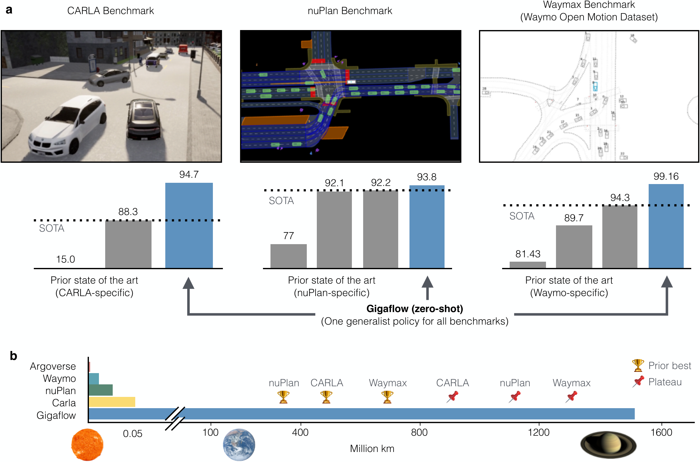
94.7 是 93 / 99 / 92 的未加权平均。第 1 章：为什么“不看人类驾驶数据”会成为一个真正的问题
1.1 背景、既有瓶颈与理论矛盾
问题。 自动驾驶行为学习长期面对一组互相牵制的目标。模仿学习可以直接从人类轨迹获得车道规则、礼让方式、合理车距和自然加减速等规范性，但训练时通常只看到“专家在正确状态下做什么”。部署后策略一旦产生小偏差，就会进入训练数据很少覆盖的新状态，后续误差可能自我放大，这就是闭环分布偏移。另一方面，碰撞、被迫让行、复杂合流和多车僵局本来就是稀有长尾，单靠日志很难按需求反复生成。纯强化学习能在自身动作造成的新状态上学习，却可能为了任务奖励形成不自然的内部约定，甚至学出只对同类伙伴有效的行为。
机制。 论文选择把“闭环实战”推到极端，而不是先模仿人类。它不使用人类驾驶轨迹，不手写逐场景事故脚本，而是在多个城市地图变体中随机初始化大量参与者，为每个参与者采样不同目标、车身、动力学和奖励偏好。所有普通参与者持续用当前共享策略行动，因此策略每次更新后都会改变下一轮遇到的交通分布。目标不是复现某条人类轨迹，而是让到达目标、少碰撞、守路、守灯、舒适和进展在长期博弈中共同成为高回报行为。
公式/算法。 这一矛盾可用训练分布与部署分布的概念式表达。模仿学习优化的是来自专家分布 的动作似然，而部署时访问的是策略自身诱导的 ：
这不是论文声称的新定理，而是解释它为何强调闭环自博弈的概念框架。本文没有做一个同等模型、同等计算预算、同等地图覆盖的“纯模仿对纯自博弈”完整对照，所以不能从结果推出模仿路线整体失效。
证据。 引言反复强调三个限制：人类数据采集昂贵且受地域约束，长尾危险交互稀少，开环或日志驱动训练不足以覆盖策略自身造成的新状态。作者随后用 16 亿公里、自博弈复杂技能随训练增长、三套闭环基准和长时耐久评测来支持其替代路线。与此同时，讨论部分并没有宣告真实数据无用，而是承认未来可以把现实数据和自博弈结合。这一措辞很关键：论文证明“没有人类轨迹也能训练出很强的结构化状态策略”，没有证明“任何自动驾驶系统都应放弃人类数据”。
边界。 第一，训练世界仍然包含大量人工先验：道路地图、交通规则、Dijkstra 路由距离、奖励函数、车辆动力学、交通灯逻辑和评测接口都由人设计。第二，16 亿公里不是 16 亿公里相互独立的现实道路经验，而是有限基础地图及其仿射变体、共享策略族和程序化随机化产生的高度相关经验。第三，纯自博弈可能形成群体内部约定；一个车群彼此协调，不等于能自然地与完全独立的人类车群协作。第四，论文缺少同预算多种子训练和充分的因果分解，不能把所有提升都归于“自博弈”一个词。
白话解释。 模仿像背大量标准答案：通常开得像人，但做错一步后可能不知道怎样恢复。自博弈像不断参加会变化的实战：它能反复遇到自己造成的麻烦，却也可能和同门伙伴形成外人不懂的默契。本文的赌注是，若实战规模足够大、对手性格足够多，安全而自然的做法会成为完成任务的有效策略。论文的结果说明这个赌注在结构化仿真里很有力量，但没有证明标准答案从此不重要。
1.2 问题设定与显式/隐含主张
问题。 作者实际要求策略完成什么，标题中的“稳健自主性”由哪些证据支撑？任务不是从图像预测方向盘，而是让一个通用条件策略根据局部道路、自车状态、附近参与者、目标和自身条件，持续选择动作，使每个参与者到达各自目的地，同时降低碰撞、越界、违规和不舒适行为。参与者的目标和条件相互隐藏，局部观察也不覆盖整个世界，因此策略必须在不完全信息下处理冲突。
机制。 完整信息流是：世界生成器随机选择地图变体、交通密度和路线；仿真器把全局状态重建为每个参与者的局部集合观测；共享策略输出 12 类离散加加速度动作之一；简化动力学推进位置；碰撞、越界、目标、车道、舒适、速度、信号和时间奖励产生学习信号；PPO 在优势过滤后的样本上更新演员和评论家；更新后的策略重新控制全部普通参与者。因为同一网络接受不同条件，它既是自车策略，也是下一轮其他车的对手生成器。
公式/算法。 正文总式为
附录则把观测拆为
这里 是最终目标和中间路点信息， 是自身奖励偏好与动力学条件。论文没有给出完整 POSG 元组、转移核、观测核或均衡证明，所以这套记号是工程合同，不是关于博弈收敛的理论结果。
证据。 这组主张来自引言与方法开头对任务、数据来源和训练闭环的定义，图 1 对训练规模与跨基准结果的总览，图 2 对世界、局部观测、共享策略和优化回路的展开，以及讨论章节对感知、仿真和现实部署边界的主动限定。显式主张包括：不使用人类驾驶数据；策略从一万亿状态转移的自博弈中学习；复杂合流、让行、掉头和远端绕行能力随训练规模出现；同一权重跨三个主要基准取得高分；长时仿真中事件间隔很长。由证据可以支持的隐含判断是：大规模闭环交互和参与者异质性能够产生比固定规则更丰富的协调行为；奖励条件化让单一网络形成可控行为族。不能由证据直接支持的更强判断包括：对任意人类对手都稳健、已获得现实世界常识、存在通用规划能力、或已满足部署安全要求。
边界。 “自然”主要由轨迹示例、WOSAC 分布相似度和若干行为探针间接衡量，不是大规模人类主观评分。“通用”是跨结构化状态接口和多个仿真基准的权重复用，不是跨传感器、车辆平台和开放世界的端到端通用。“稳健”在论文里混合了低事故率、跨基准高分、对条件变化的适应和策略探针；这些是不同命题，不能由一个总分相互替代。“零样本”也只指不微调权重，每个基准仍有专用适配。
白话解释。 网络不是自己从摄像头里认出路口，也不是完全不知道路线。它拿到已经整理好的道路点、边界、红绿灯、邻车状态和导航目标，然后学习“在别人意图不明、性格不同的情况下怎样行动”。论文真正研究的是交互决策层，而不是整辆自动驾驶汽车的全部问题。
第 2 章：自博弈世界怎样制造训练经验
2.1 POSG 与共享条件策略
问题。 为什么驾驶要建模成部分可观测多智能体随机博弈（partially observable stochastic game, POSG），而不是单车沿中心线跟踪？因为真实驾驶中的危险和效率通常由相互作用决定：两辆车都想进入同一空隙，多股车流需要协商次序，前车的目标和驾驶偏好不可见，其他参与者也会因自车动作改变行为。若只让自车对着固定日志或静态障碍训练，就看不到这种双向因果。
机制。 训练中车辆、重型车辆、自行车和行人等普通动态参与者共享同一套策略参数，但每个参与者得到不同的自车状态、目标、车体、动力学和奖励条件。一个参与者只知道自己的条件，不知道其他车的目标、瞬时加速度、动力学参数或奖励偏好；训练时即使世界里最多有 150 个参与者，它也只观察最近 20 个。共享参数使所有参与者的经验汇入同一网络，极大提高批量推理和数据效率；隐藏条件又让同一参数化策略表现为保守、激进、守灯、闯灯或不同车体能力的对手。
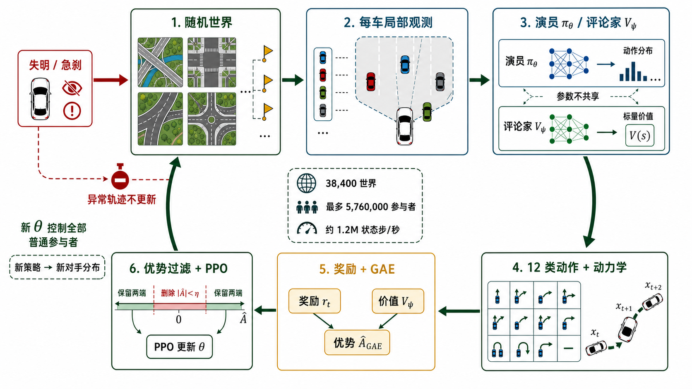
公式/算法。 对参与者 ，动作分布可以写成
而对其他参与者 的 与 ，参与者 不可见。全部普通参与者使用同一个 ，因此联合行为并不是多个独立策略的乘积训练，而是同一策略在不同条件下的多实例展开。异常失明或突然刹车的参与者可以影响正常车，但其异常轨迹不进入策略更新，以免网络直接学习故障动作。
证据。 TeX main.tex:324-346, 415-424, 1124-1135 明确把环境称为 POSG，说明其他参与者目标和条件隐藏，并指出同一策略控制不同类型参与者。图 2 把世界批量、局部观测、集合网络和演员/评论家信息流放在一张图中。奖励随机化删除消融使三个基准合计误差从 8.1378 增至 26.2691，远大于仅删除动力学噪声的变化，说明“同一策略面对具有不同奖励偏好的参与者”不是纯装饰，而是最强的直接因果线索之一。
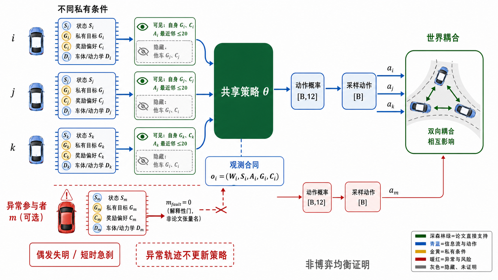
θ 在每个参与者上独立展开，但每辆车拥有不同的自身状态、目标和条件；参与者只能看到自己的 G_i,C_i 与邻车可观测行为，看不到他车隐藏条件。异常主体仍会改变共同世界，却不把故障轨迹写入策略更新。该结构制造的是同权重条件对手分布，不等于独立人类策略族，也没有博弈均衡证明。边界。 这些对手并非完全独立的策略族。它们共享网络能力、训练历史和归纳偏置，可能学会内部约定；条件随机化虽扩大行为覆盖，也不能保证覆盖真实人类分布。论文没有做“多个独立网络对手”“人类驾驶对手”与“同权重条件对手”的等预算比较，也没有证明任何博弈均衡。后续 BehaviorBench 的证据还表明，固定奖励的同类对手训练可能在跨对手分布时失效；这限制了过强外推，但没有直接运行或推翻本文的奖励条件化 GigaFlow 权重。
白话解释。 可以把它想成几百万辆车都用同一种大脑，但每辆车拿到不同的车身、目的地和脾气。你不知道旁边那辆车是谨慎还是急躁，只能根据它正在做什么留出余量。这样的训练比和固定脚本车互动更丰富，却仍像“同一个学校的不同学生”彼此练习，不能自动代表开放道路上的所有陌生司机。
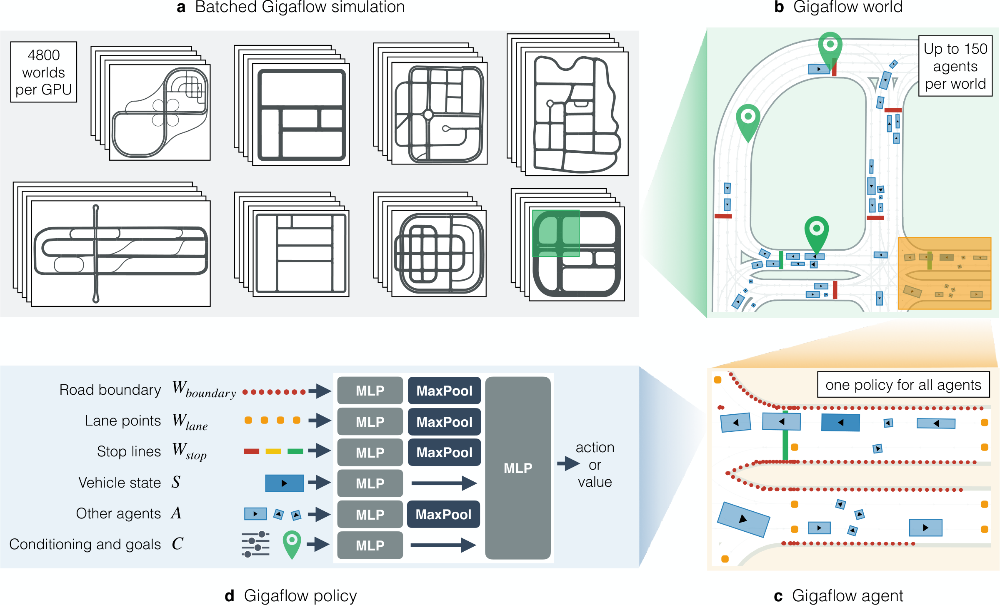
统一教学场景：A/B/C 无保护汇入中的私有条件与共同世界
[教学构造] 本模块中的 A、B、C 只是统一教学场景的参与者代号，与既有图中的任何 A/B/C 字母、区域或面板完全无关。它们不是论文原始场景、不是实测样本，也不代表未公开实现。
| 参与者 | 教学角色 | 私有任务与条件 | 对 A 的可见性 |
|---|---|---|---|
| A | 安全取向的支路汇入车 | 自身目标 G_A、自身奖励与动力学条件 |
[教学构造] A 可见自己的全部条件 |
| B | 进展取向的主路前车 | 自身目标 G_B、更重进展的私有条件、与 A 不同的车体/响应 |
[教学构造] A 只看见 B 当前可观察运动，不看见 B 的目标与条件 |
| C | 速度取向的主路后车 | 自身目标 G_C、较高速度/响应能力对应的私有条件 |
[教学构造] A 只看见 C 当前可观察运动，不知道 C 下一步是否制动或抢行 |
三者共享参数但拥有不同输入，因此动作分布不同：
[等价改写]
[论文附录原式] A 对附近参与者的结构化可见范围受 200 m 与训练时最近 20 个对象限制；可观察字段包括相对位置、朝向、速度、尺寸和高度。[论文未给出] A 不获得 B/C 的目标、瞬时加速度、动力学属性或奖励条件，也不存在已公开的真实遮挡、漏检和传感延迟模型。
三辆车不是三条互不相干的轨迹。它们的动作共同进入一个世界转移：
[等价改写]
A 选择提前制动会改变 C 的后续可见间隙；C 加速逼近会改变 A 是否有安全汇入窗口；B 减速又会改变两者的可达状态。部分可观测性因此不是“其他车完全不存在”，而是“其他车通过共同世界产生后果，但其私有意图与条件不直接暴露”。
异常轨迹排除也必须放在共同世界里理解。[教学构造] 若 C 在某段被强制突然制动，可把 C 自身被修改的训练样本门记为 ；同一时刻 A、B 的正常响应样本仍可记为 。这些门值只解释论文“异常者影响世界但自身轨迹不进入更新”的语义，不是公开代码中的实际掩码。
参数更新后，三位普通参与者同时换用新参数：
[等价改写]
这解释了为什么自博弈会改变对手分布，也解释了边界：同一训练历史下的条件化策略族不等于相互独立的人类伙伴分布，场景中出现协调也不构成博弈均衡证明。
2.2 地图、起终点、路点与交通密度
问题。 如果没有人类轨迹和手写事故脚本，复杂合流、无保护转向、堵塞和抢道从哪里来？关键不是预先列出场景名称，而是让足够多的参与者在足够长、足够多样的路线中同时追求各自目标，使冲突成为随机生成过程的自然结果。
机制。 训练使用 8 张基础地图，车道总长约 136 公里，并通过缩放、剪切、翻转和反射形成 128 个地图变体。每个世界随机生成 1 至 150 个参与者。初始化先采样位置、朝向和包围盒，拒绝越界候选；为避免宽路段因面积大而被过度采样，作者估计初始样本位置分布并修正后续提议分布，再顺序选择无碰撞子集。每个保留参与者采样最终目标，并采样 0 至 3 个中间路点。相邻路点通常相距 20 至 200 米、车道朝向差不超过 60 度；死胡同等情况下逐步放宽约束。
公式/算法。 世界初始化可以概括为带约束的拒绝采样：
其中 表示车体包围盒。路线链满足近似约束
无法满足时再放宽。策略并不在线运行一个全局路径搜索器，但观测中的目标特征包含离线 Dijkstra 计算的路由距离，因此世界生成和导航先验仍然是人工设计的重要组成。
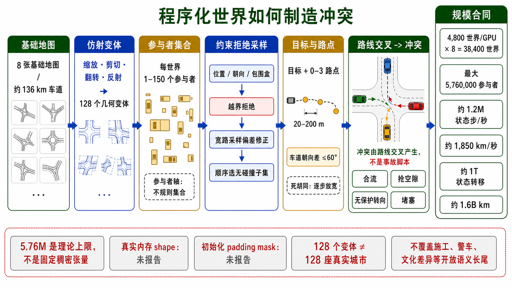
5,760,000 是理论参与者上限，128 个变体只是 8 张基础地图的几何变化，不能解释为同等数量的现实城市或语义长尾。证据。 TeX 世界初始化段 source/tex/extracted/main.tex:982-1001 逐项给出参与者上限、位置/朝向/包围盒拒绝采样、位置偏差修正、无碰撞子集、路点距离与朝向约束，以及批量缓冲和顺序拒绝采样。图 2 把这些随机初始化后的世界放入批量仿真与共享策略闭环；规模表 A1 给出 38,400 个并行世界和最多 5,760,000 个参与者的理论上限，使罕见冲突能在总样本中反复出现。图 3 则是额外的行为证据：它随训练规模展示瓶颈汇入、三股车流合流、无保护路口和掉头，说明程序化生成确实能产出复杂交互。
边界。 128 个几何变体不等于 128 座独立现实城市；缩放和镜像不能生成施工、警车、手势、道路损坏或不同国家的完整交通文化。状态步数量也不能直接当作独立场景数量，大量连续步和同一地图机制高度相关。随机路线能生成许多冲突，却不保证覆盖现实长尾的语义结构。论文没有公布各地图、路线长度、交通密度和事件类型的完整分布。
白话解释。 作者不手写“今天专练左转遇到直行车”，而是不断随机发车、发目的地、塞入中间路点。车足够多、路线足够长时，拥堵、抢空隙和多车合流会自己出现。这个方法擅长生成几何和交互上的长尾，但它生成的是程序规则允许的世界，不是现实世界全部奇怪事情的清单。
2.3 不确定性、行为多样性与异常驾驶者
问题。 如果所有车共享一个策略，它们会不会变成完全可预测、互相配合的车队？仅靠随机起点和终点仍可能让策略利用同类伙伴的固定反应模式，因此作者还需要让行为、动力学和可观测性具有内生不确定性。
机制。 多样性来自多层叠加：参与者只观察最近 20 个、200 米范围内的对象；他车目标和条件隐藏；车辆长度、宽度、最大速度、加速与转向能力随机；奖励权重随机，使不同车更重视安全、速度、舒适或规则；交通灯周期、相位和是否启用随机；状态与转移含论文概述但未量化的噪声；少量参与者被故意设为失明或突然刹车的异常驾驶者。正常策略必须在无法准确预测他车的情况下保持安全裕量。
公式/算法。 可见邻车集合可以写为
而每个参与者的条件从预设范围采样：
异常主体采用独立故障逻辑；它们对环境状态有因果影响，但故障动作对应的训练样本被排除。论文没有公开所有噪声分布和幅度，因此不能补写具体高斯方差或传感器模型。
证据。 方法与附录明确列出条件隐藏、最近参与者截断、奖励与动力学随机化、交通灯组合随机化及异常驾驶者。图 A1 显示不同奖励条件会系统性改变轨迹和行为；图 A3 的删除消融显示，奖励随机化的贡献远大于单纯动力学噪声，动力学参数随机化也主要改善 CARLA 域迁移。图 4 的固定场景探针还显示，改变周围车辆的动作会改变策略输出，而非只沿固定路线重放。
边界。 论文没有给出异常主体比例在所有训练阶段的完整统计，也没有分别消融失明与急刹。状态/转移噪声只在概述中出现，分布和幅度缺失。异常主体不进入更新避免学习故障动作，但也意味着策略没有学会“自己故障后如何恢复”。共享策略的多样性仍受同一参数族限制，无法替代真实人类对手或多个独立策略族的直接测试。
白话解释。 训练车群里既有不同车身和脾气，也会有人看漏了车或突然刹车。正常车不能假设大家都会礼让，也不能知道别人究竟想去哪。这样会迫使策略学会防御性互动。但这些“怪司机”仍由作者规定的故障模式生成，现实里更复杂、更有语义的异常并没有因此自动出现。
第 3 章：策略看见什么、怎样把输入变成动作
3.1 结构化观测与路线先验
问题。 论文常用“通用”“无专门规划模块”和“前馈策略”描述模型，但判断这些说法是否强，需要先回答网络究竟获得了哪些已经处理好的信息。若道路拓扑、目标路线和邻车真值都已作为输入，策略解决的是高层交互和控制决策，不是从原始传感器中恢复整个世界。
机制。 每个参与者的观测由七类信息组成。自车状态 描述当前运动、车道关系和车辆响应能力；粗粒度车道集合 给出附近车道宽度、朝向和到下一目标的路线距离；精细道路边界集合 描绘路缘；停止线/交通灯集合 提供信号约束；其他参与者集合 提供邻车几何和速度；目标 表示最终目标和中间路点；条件 表示自身奖励与动力学。所有几何量转换到自车坐标系并归一化，网络不必学习全局平移、旋转或不同数值尺度。
公式/算法。 自车状态至少包含
其中 是到当前车道中心的距离， 是相对车道朝向， 是局部曲率， 和 是当前速度与限速， 是转向角， 是纵横向加速度，后三个 量表示载具响应与加速能力， 是车长和车宽。自车连续量被归一化到 。粗车道点约每 40 米采样，最多保留离车最近的 80 个、视野 200 米；每个点带车道宽度、朝向、到下一目标的相对和绝对归一化路线距离。两两路线距离由 Dijkstra 算法离线预计算。道路边界约每 1 米一个点，同样最多保留最近 80 个。训练时邻车集合为
不足 20 个时补齐。它不含他车目标、瞬时加速度、动力学参数或奖励条件。
| 输入分支 | 已确认字段或规模 | 训练/推理作用 | 明确缺口 |
|---|---|---|---|
| 自车状态 | 车道偏移、朝向、曲率、速度/限速、转角、纵横向加速度、响应系数、车长宽 | 让共享策略知道“我在哪里、怎样运动、我控制的载具能做什么” | 个别字段精确张量顺序未给 |
| 粗车道 | 约 40 米采样、200 米范围、最多 80 点、Dijkstra 路由距离 | 提供道路方向与高层导航先验 | 地图误差和路线不可达时的处理不完整 |
| 边界 | 约 1 米采样、最多 80 点 | 提供精细可驾驶空间轮廓 | 没有真实感知误差模型 |
| 停止线/灯 | 确认为集合输入 | 提供红灯/停止线约束 | 单元素字段、数量、颜色编码和归一化均未报告 |
| 其他参与者 | 200 米内最近 20 个；相对位置、朝向、速度、尺寸和高度 | 处理局部交互 | 无遮挡、漏检、延迟；他车意图与条件隐藏 |
| 目标 | 最终目标、0 至 3 个中间路点 | 约束长期去向 | 确切向量字段和填充方式未报告 |
| 条件 | 奖励偏好与动力学/车体条件 | 让同一权重适配不同车与风格 | 论文声称的 12 个奖励条件维度无法由表格唯一还原 |
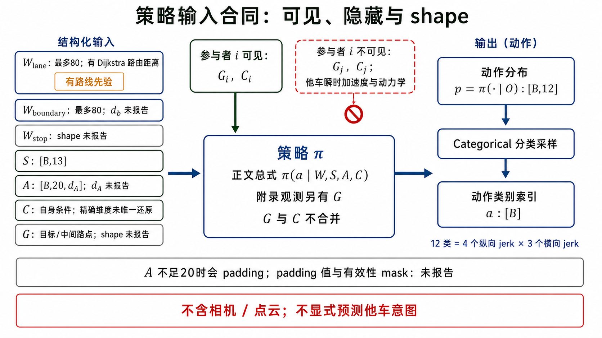
π(a|W,S,A,C) 划定了结构化道路、自车、邻车和条件必须在决策前构造，附录又明确增加目标 G；两套记号不能被擅自合并。S:[B,13]、动作概率 [B,12] 和局部邻车上限可确认，但 A 元素宽度、停止线/目标维度与填充有效性掩码实现未报告。公式描述的是结构化状态决策器，不是相机到控制的端到端系统。证据。 附录逐项列出 、三类道路集合、、 和奖励条件。图 2d 显示集合分支和普通向量分支的编码路径。论文还明确说明训练只看最近 20 个参与者，而测试时因为集合编码不依赖元素顺序，可以增加可见参与者数量。长时评测确实把邻车上限增至 40，说明这一结构被实际使用，而不只是理论可能。
边界。 首先，这不是原始感知：道路点、边界、停止线、邻车状态和高度都是仿真真值或基准转换器提供的结构化量。其次，“无专门规划模块”不等于“无路线先验”，Dijkstra 路由距离已把道路拓扑和目标方向编码进输入。再次，最近 20 个对象不等于真实遮挡；它没有视线、漏检概率、测量噪声、时间延迟或对象识别错误。最后，停止线和目标张量定义不完整，不能在报告中补写未公开维度。
白话解释。 网络拿到的不是一张城市照片，而是一份已经整理好的驾驶简报：我偏离车道多少、前方道路朝哪、哪里是边界、红灯在哪、附近哪些车多快、目的地往哪、我的车和驾驶偏好是什么。它的难点是根据这份简报作出互动决策；把现实传感器变成这份可靠简报，仍是本文之外的问题。
张量形状、补齐与五类掩码/门控：已知、未知和教学轴必须分栏
[教学构造] 为了让 A/B/C 同时出现在一张账本里，本模块只取逻辑批次 B=3。这不是论文训练批量，也不改变论文真实并行规模。凡元素宽度、补齐（padding）值或有效性掩码实现没有公开，均保留符号而不补常见默认值。
| 分支 | A/B/C 教学批次的逻辑张量形状 | 来源标签 | 已知语义与停止线 |
|---|---|---|---|
自车 S |
[3,13] |
[论文附录原式] + [教学构造] |
附录列出十三个自车标量语义；批次轴三来自教学场景 |
粗车道 W_lane |
[3,80,d_lane] |
[论文附录原式] + [论文未给出] |
最近最多八十个粗道路点；d_lane、不足上限时的补齐值和有效元素掩码未公开 |
道路边界 W_boundary |
[3,80,d_boundary] |
[论文附录原式] + [论文未给出] |
最近最多八十个约一米边界点；d_boundary、补齐值与有效元素掩码未公开 |
停止线/信号 W_stop |
[3,N_stop,d_stop] |
[论文未给出] |
只能确认它是集合输入；最大数量、元素宽度、颜色编码、补齐值与有效元素掩码均未知 |
邻车 A |
[3,20,d_actor] |
[论文附录原式] + [论文未给出] |
训练最多二十个邻车；d_actor 精确编码、补齐值与有效元素掩码未知 |
目标 G |
[3,N_G,d_G]，逻辑上 |
[论文附录原式] + [论文未给出] |
最终目标加零至三个中间路点；字段、顺序、补齐值与有效元素掩码未公开 |
奖励条件 C_reward |
[3,12] |
[论文正文原式] + [论文未给出] |
论文文字称条件化十二个奖励参数，但公开表格不能唯一还原十二维映射 |
合并条件 C |
[3,d_C] |
[论文未给出] |
C 还涉及动力学/车体条件；与 G 的拼接方式、d_C 和精确顺序未公开 |
| 动作头 | [3,12] |
[论文附录原式] + [教学构造] |
每个教学参与者得到十二类动作概率；动作头层级与采样实现未公开 |
| 价值头 | [3] |
[论文附录原式] + [教学构造] |
每个参与者一个标量价值；评论家内部细节未完整公开 |
“掩码”不能被当成一个万能词。下面五类掩码或门控作用于不同对象、不同时间点：
| 教学记号 | 作用对象 | 来源标签 | 不可混写的含义 |
|---|---|---|---|
M_obs |
集合元素 | [教学构造] + [论文未给出] |
概念上的有效元素掩码，用于排除补齐位；论文没有公开实际名称、取值和实现 |
M_drop |
输入特征元素 | [论文附录原式] |
训练时随机丢弃 50% 车道点与 40% 边界点；它是特征丢弃掩码，不是补齐位掩码 |
M_train |
轨迹样本 | [等价改写] |
异常失明/急刹参与者自身轨迹不进入更新，但仍通过世界状态影响正常参与者 |
b_t,c_t |
TD 自举与 GAE 递推边界 | [教材桥接] + [论文未给出] |
用于教学区分继续、真实终止与时间截断；目标论文没有公开代码级定义 |
M_adv |
PPO 转移 | [等价改写] |
优势过滤后决定某个转移是否进入更新；它晚于 GAE，不能替代任何观测或终止门 |
最小检查顺序是：先确认批次轴和集合轴，再问不足上限如何补齐，然后分别定位有效元素掩码、特征丢弃掩码、训练样本门、时间边界掩码和优势筛选掩码。[论文未给出] 未公开量必须继续保持未知；尤其不能默认补齐值为零、默认最大池化会自动忽略补齐位，或默认时间截断与真实终止共用同一个终止标志。
3.2 小型排列不变网络与信息流
问题。 每个时间步可能同时有数百万参与者，道路和邻车集合又包含上亿个元素特征。为什么论文没有使用巨型 Transformer 或每车独立模型，而能用约 600 万参数支撑如此高的吞吐？答案在于输入结构和批处理目标：元素顺序没有语义，角色差异已进入条件，因此作者选择紧凑的集合深度网络（Deep Sets）式编码。
机制。 演员和评论家是两个参数完全分离、结构近似、各约 300 万参数的网络。道路车道点、道路边界、停止线和其他参与者四个集合，各自先让一个小型多层感知机逐元素编码，再沿元素维度做通道最大池化（MaxPool），得到固定长度向量。自车状态以及“条件与目标”走普通向量多层感知机。所有分支嵌入拼接后进入三层、每层宽 1024 的主干；演员输出 12 类动作分布，评论家输出一个状态价值标量。
公式/算法。 对集合 ，编码形式是
普通向量分支为
拼接后
演员得到 ，评论家得到 。最后两个头的精确层数和参数化未在 TeX 中公开，这里的 softmax 只表达离散动作分布的一般形式，不能冒充源码细节。
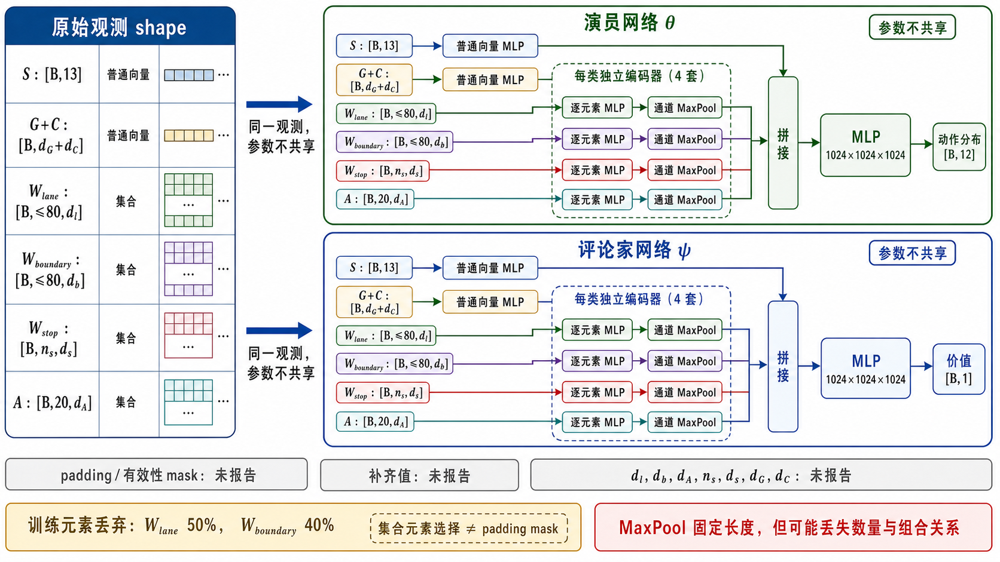
S:[B,13]、道路元素最多 80、邻车最多 20 是论文可确认的逻辑上限；邻车元素宽度、填充值和有效性掩码实现没有公开。最大池化提供排列不变性，却可能丢失数量和多体组合关系。证据。 图 2d 直接画出四个“逐元素 MLP + MaxPool”集合分支、自车与条件/目标分支、三层主干和动作/价值输出。附录给出三层 1024 宽、演员/评论家各约 300 万参数、二者不共享参数。系统报告经验采集时在 260 万批量大小下达到约 740 万决策/秒，参数共享和紧凑前馈结构是实现这一吞吐的直接工程条件。
边界。 最大池化对元素顺序不敏感，却可能丢失数量、密度和多元素组合关系。例如两辆车分别触发不同通道最大值，池化后未必保留“它们同时夹逼”的精确结构。论文没有比较求和池化、注意力、图网络或更大模型，也没有独立消融网络大小。小网络足以取得本文结果，不等于它是理论最优或没有信息瓶颈。各支路小型 MLP 的层数、宽度、激活、归一化以及演员/评论家编码器是否完全复制，也没有完整报告。
白话解释。 系统先让每个道路点和每辆邻车写一张很短的“特征卡”，再从一叠卡里按通道挑最显著的信息，最后交给一个小主干决策。这样不怕列表顺序变化，也能把几百万辆车的问题叠成一次大批量前向。代价是摘要可能漏掉“有几辆车、它们怎样共同构成局面”这类组合信息。
3.3 12 个动作与车辆动力学
问题。 策略输出的一个类别怎样变成下一帧位置？如果只说“12 个动作”，读者容易误以为它直接选择油门和方向盘。实际控制量是纵向、横向加速度的变化率，也就是加加速度；仿真器随后经过积分、限幅、曲率与自行车模型才得到位置。
机制。 纵向加加速度有 四个候选，横向有 三个候选，笛卡尔积形成 12 类动作。训练步长 秒。动作先按载具响应系数积分为纵横向加速度，再做跨零归零和幅值限制；纵向加速度用梯形积分得到速度，速度跨零归零并限幅；横向加速度和速度得到期望曲率，曲率转为转向角并受转角速率和绝对转角限制；最后用限幅后的曲率和平均速度推进自行车模型。
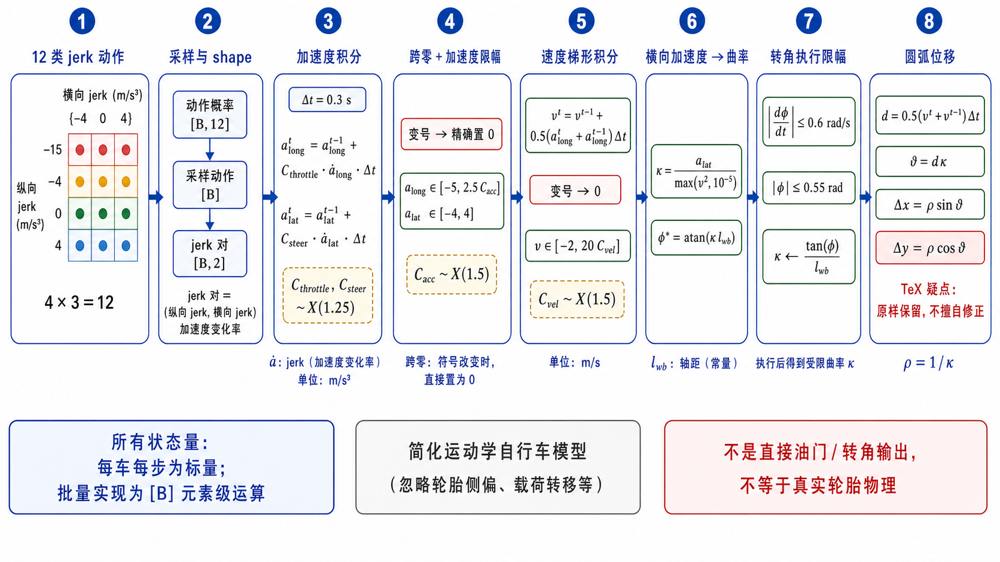
Δy=ρ cosϑ 存在坐标或排版疑点，未用常见公式静默替换，也不代表真实轮胎和碰撞物理。公式/算法。 动作空间为
响应系数来自对快、慢两侧对称抽样的混合均匀分布
加速度更新为
随后
速度用梯形积分：
横向控制先求期望曲率
再限制转角变化率 和绝对转角 ：
实际曲率和横向加速度重新计算为
最后弧长和航向变化为
TeX 原文接着写
必须原样保留这个疑点：常见局部圆弧位移的横向项通常含 或相对圆心坐标；按字面在 时 ，因此可能存在排版遗漏或特殊坐标约定。没有实现代码证据，不能擅自“修正”为更熟悉的公式。
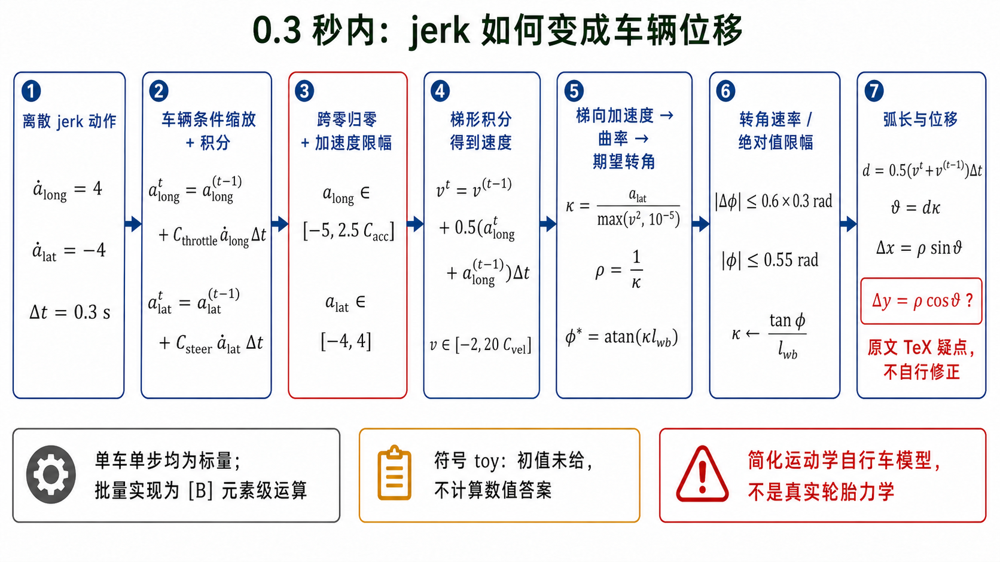
ρ=1/κ，但不假造论文未给的初值或数值答案。所有量对单车单步是标量，批量实现是 [B] 元素级运算；最后的 Δy=ρ cosϑ ? 原样保留为待代码核验疑点，而非在图中自行修正。证据。 TeX main.tex:1220-1312 给出上述动作集合、混合分布、积分和限幅常数。跨零归零用于让车辆更容易精确停住或保持恒速；允许最低 的倒车；最大正向速度以 20 m/s 为基准再乘随机系数。长时评测把步长改为约 0.066 秒、约 15 Hz，而训练为 0.3 秒、约 3.33 Hz；第 7 章会看到同一策略的事件间隔因此提高约 23.5 倍，这证明控制频率不是无关实现细节。
边界。 这是简化运动学自行车模型，不含轮胎侧偏、路面摩擦、制动热衰退、传动、悬架、执行器延迟和碰撞冲量。源码也没有在这段完整给出局部位移旋转回世界坐标、航向累计和不同参与者类型是否完全共用更新式。0.3 秒离散步长可能漏掉快速事件，尽管碰撞检测用相邻帧扫掠线段部分缓解穿透。频率敏感性说明高分不能脱离执行频率讨论。
白话解释。 网络每 0.3 秒选择“让加速变化得更快、变慢或不变”和“让横向加速度往哪边变化”，仿真器再把这个选择一层层积成加速度、速度、转角和位置。这样动作天然较平滑，也能让同一动作在不同车身上产生不同响应。但它仍是经过简化的虚拟车辆，不是对真实底盘的完整模拟。
公式实验室 2：参与者 A 的单步动作怎样变成弧长与航向变化
本实验只追踪统一场景中的参与者 A。B/C 仍共同改变下一世界状态，但不进入这次单车动力学手算。下表初值全部只是便于复核的教学代入。
| 量 | 取值 | 来源标签 |
|---|---|---|
| 训练步长 | 0.3 s |
[论文附录原式] |
| 前一纵向加速度 | 0.5 m/s^2 |
[教学构造] |
| 前一横向加速度 | 0 m/s^2 |
[教学构造] |
| 前一速度 | 10 m/s |
[教学构造] |
| 前一转角 | 0 rad |
[教学构造] |
| 轴距 | 2.7 m |
[教学构造] |
| 油门/转向响应系数 | 均为 1 |
[教学构造] |
| 本步纵向/横向加加速度 | 均为 4 m/s^3 |
[教学构造] |
加速度和速度先按论文公式更新：
[论文附录原式]
[论文附录原式]
横向请求再变成曲率、转角和实际曲率：
[论文附录原式]
最后计算弧长与航向变化：
[论文附录原式]
逐步复算结果如下；保留位数与统一教学合同一致。
| 计算 | 结果 | 来源标签 |
|---|---|---|
1.7 m/s^2 |
[审计复算] |
|
1.2 m/s^2 |
[审计复算] |
|
10.33 m/s |
[审计复算] |
|
1.2/10.33^2 |
0.0112455 m^{-1} |
[审计复算] |
0.0303537 rad |
[审计复算] |
|
| 限幅后的实际曲率 | 0.0112455 m^{-1} |
[审计复算] |
3.0495 m |
[审计复算] |
|
0.0342933 rad，约 1.97 deg |
[审计复算] |
|
1/0.0112455 |
88.9241 m |
[审计复算] |
单位检查也闭合：加加速度乘时间得到加速度，加速度积分得到速度，曲率乘弧长得到无量纲弧度。
[论文附录原式] TeX 随后写出 与 。[原文疑点] 按字面在零转角附近第二式仍给出大位移，可能缺相对圆心项或依赖未说明坐标约定。复算必须在弧长和航向变化处停止；没有官方实现证据，不给出伪精确的最终局部坐标，也不把常见自行车模型公式替换进论文。
第 4 章：规模为什么跑得起来
4.1 批量状态推进与空间哈希
问题。 若 38,400 个世界、数百万参与者在每一步都逐车遍历全部道路多边形和全部其他车辆，计算量会随世界数、参与者数和地图复杂度相乘，根本无法达到论文声称的吞吐。Gigaflow 的关键工程问题是：怎样把世界推进、道路定位、越界和碰撞都改写成适合 GPU 的局部批量运算。
机制。 Gigaflow 用 PyTorch 在一个实例中同时推进全部世界，而不是启动数万份独立环境进程。道路表面被近似为沿车道每约 1 米一个、可重叠的凸四边形；四边形中心既用于 Frenet 定位，也用于地图观测预计算。固定网格空间哈希把 映射到桶，点只与同桶道路候选比较。越界候选和碰撞候选也先通过空间桶和轴对齐外包盒筛选，再做精确判断；变长候选用不规则张量表示，只有必要时补齐。
公式/算法。 对批量世界状态，核心转移是
8 张 GPU 每张并行 4,800 个世界，每世界最多 150 个参与者，因此理论上限为
个参与者。朴素道路定位约需 次点在多边形内判断，其中 是世界数、 是参与者数、 是道路多边形数；空间哈希把每个点缩小到局部桶内候选，实际复杂度依赖局部密度而非全图 。位置的道路坐标记为 ， 是沿车道距离， 是离车道中心距离；重叠车道中选择 最小的解释。
越界基础检查把包围盒中心和四角共 5 点定位到道路表面；任一点找不到道路通常判越界。为捕获弯道外悬和跨越安全岛，系统还从道路多边形边中点生成向外轻推的越界点，若这些点落入车辆包围盒也判越界。地图缝隙小于 1 毫米时可能制造假越界，因此若 5 点距最近道路不超过 15 厘米，训练仍视为在路上。
碰撞检测对参与者 的相邻两帧包围盒做近似连续扫掠：把 的角点在 与 的位置变换到 的坐标系，检查角点运动线段是否穿过 的包围盒，再交换 重复；任一次为真即判碰撞。候选对先用跨两帧的轴对齐外包盒和 空间哈希过滤。立交等三维高度冲突通过保留 坐标、地图坡度和后处理删除二维假碰撞，作者称为“2.5 维修正”。
证据。 训练表报告约 120 万状态步/秒、约 1,850 公里/秒；经验采集阶段在 260 万批量大小下达到约 740 万决策/秒，训练阶段以 25.6 万批量大小每秒进行约 8 次梯度更新。图 2a 明确标出每 GPU 4,800 世界、每世界最多 150 个参与者。方法附录给出空间哈希、越界点、扫掠碰撞和 2.5 维处理的具体流程。
边界。 “决策/秒”“状态步/秒”“公里/秒”和“梯度更新/秒”是不同单位，不能合并成一个模糊的速度数字。空间哈希的必要性有清楚复杂度推导，但论文没有无哈希实测消融。15 厘米道路容差会降低数值假越界，也略微放宽真实边界，缺少漏检权衡。碰撞模块只检测事件，不模拟冲量、变形和碰撞后物理；2.5 维也不是完整三维世界。因而高吞吐来自可控的抽象取舍。
白话解释。 系统先把道路和车辆分进格子，每辆车只检查附近格子，不和整张地图、整个车群逐一比较。这样数百万辆车可以一起在 GPU 上推进。代价是道路、碰撞和高度都被简化成适合批处理的几何判定，速度很高，但不能把这种仿真当作真实碰撞物理。
4.2 按需重建、特征丢弃与吞吐合同
问题。 即使动力学能批量推进，若把每个时间步、每个参与者看到的所有道路点、边界点、停止线和邻车特征都存进 PPO 轨迹缓冲，超过一亿个元素特征会迅速耗尽 40 GB 显存。系统必须在“保存观测”和“重新计算观测”之间做取舍。
机制。 Gigaflow 主要保存紧凑的世界状态及 PPO 更新必需的动作、旧策略概率、奖励、终止等信息，在训练小批次真正需要时，再从世界状态、地图预计算和空间哈希按需重建大型局部观测。训练时还随机丢弃 40% 的道路边界元素和 50% 的粗车道元素，减少显存和编码计算。所有参与者共享同一演员，因而一次大批量前向即可覆盖多种车体和角色；紧凑的 300 万参数演员避免模型计算压过仿真吞吐。
公式/算法。 若完整观测记为 ，传统缓冲保存 ，本文核心取舍是保存 ，更新时再计算
供小批次 使用。这里 包含局部检索、自车坐标变换、归一化和集合补齐。特征丢弃可写为
它是集合元素丢弃，不是隐藏神经元的随机失活（dropout）。
证据。 TeX main.tex:520-585, 1496-1504 与表 A1/A3 明确指出全体参与者的 与 超过 个元素特征，完整保存不可承受，因此训练小批次按需重建。40%/50% 丢弃比例和 40 GB A100 显存约束也有明确数字。系统规模表把上述内存方案与 38,400 世界、260 万经验采集批量、25.6 万训练批量放在同一工程合同中。
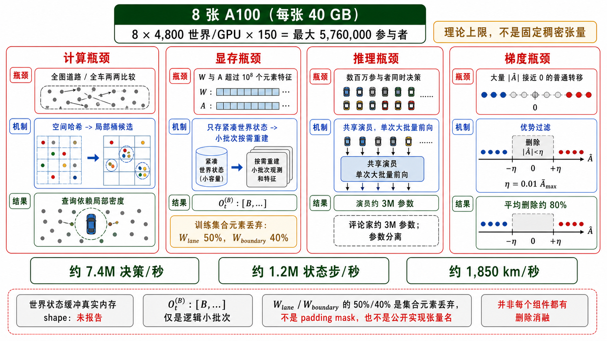
7.4M 决策/秒、1.2M 状态步/秒和 5.76M 参与者上限是不同量，真实缓冲张量形状和填充实现没有公开，图中不得把逻辑上限画成固定稠密内存布局。边界。 “只保存世界状态”是对大观测结构的概述，不能字面解释为缓冲区没有动作、旧策略概率或回报相关字段。按需重建增加计算，并依赖重建过程与采样时完全一致；论文没有报告重建误差或独立测试。输入元素丢弃既节约显存，也被作者解释为噪声正则化，但没有独立消融，不能分离两种作用。参数共享提升吞吐，也可能牺牲角色专门化。
白话解释。 系统不把每辆车当时看到的整份道路简报都存下来，只保存“世界当时是什么样”。训练轮到某批样本时，再现场重做这批车的简报。它用更多重算换来更少显存，配合随机删掉部分道路点，才让超大规模轨迹装得下。
4.3 仿真器加固（hardening）与“运行不等于正确”
问题。 当策略很差时，大多数事故确实来自策略；当事件率降到几十万甚至几百万公里一次时，地图裂缝、数值误差、碰撞漏检或错误归因可能比真实策略错误更常见。此时“程序跑完”与“安全数字可信”之间出现巨大距离。
机制。 作者把仿真器加固作为持续过程：反复从零训练高质量策略；逐例观看碰撞和越界视频；区分决策失误与代码/数值错误；建立可视化、诊断和记录工具重现罕见事件；用约 20 分钟可收敛的单参与者最小配置快速定位回归。道路 15 厘米容差、扫掠碰撞和 2.5 维修正都可以理解为这一过程中产生的防假错误措施。
公式/算法。 没有新的学习公式，核心是事故观测值的分解：
当 随训练大幅下降，其他项即使绝对数量不变，也会主导估计。加固过程试图减少并正确分类后面三项，但论文没有给出可审计的完整计数。
证据。 方法附录明确描述逐例视频检查、最小配置、持续从零重训和诊断工具。实验章节对 CARLA、nuPlan、Waymax 的剩余事故也逐例归因，指出其中包含地图、基准控制器和非责任碰撞等情况。这些工作说明作者知道低事故率下测量系统会成为瓶颈，而不是只报告一个表面成功数字。
边界。 论文没有公开仿真器测试覆盖率、已修错误清单、加固前后统一事故表、第三方审计或形式化正确性上界。逐例归因由作者团队完成，可能存在主观分类和选择偏差。修正仿真器后持续重训能减少回归，却也意味着训练环境随研究过程改变；性能增长不能完全与仿真器改进分离。因此可写“作者通过迭代诊断降低罕见仿真错误”，不能写“仿真器已被证明正确”。
白话解释。 车越来越会开后，最后几次“事故”可能不是车犯错，而是地图有缝、碰撞代码误判或测试车撞了它。作者确实投入了大量工作逐个排查，但这仍是团队内部工程审计，不是独立安全认证。运行没有报错，只是验证的起点。
第 5 章：奖励、PPO 与优势过滤怎样塑造策略
5.1 九类奖励与条件维度
问题。 论文把奖励称为相对简约，但这不等于只给“到达加一、碰撞减一”。若不逐项解释目标、安全、规则、舒适与进展信号，就无法判断自然驾驶究竟是纯粹涌现，还是由细致奖励塑形得到。更重要的是，很多奖励系数对每辆车随机且作为条件输入，它们同时承担任务目标和对手多样性两种作用。
机制。 每个参与者优化一个标量总奖励，包含目标、碰撞、越界、舒适、车道朝向与居中、速度进展、倒车、停止线违规和时间成本。部分系数固定，部分在每回合为每个参与者独立采样。安全权重大者更保守，舒适权重大者避免强加速和强加加速度，车道居中偏置不同者在车道内位置不同，倒车惩罚不同者会选择多点掉头或绕行。其他车辆看不到这些系数，因此奖励不只塑造“自车想做什么”，也塑造邻车对自车而言有多难预测。
公式/算法。 正文总式为
详细表没有单独定义 ，而给出车道朝向 和车道居中 。最稳妥理解是总式用 统称两项，但 TeX 未显式写出等式，不能悄悄修正记号。
目标奖励为
其中 米，。进入中间路点半径即可得分；最终目标还要求低速，避免高速掠过。
碰撞和越界奖励为
高速碰撞因 额外受罚；基础权重允许从近乎不在意到很重视安全的不同参与者。
舒适度采用阈值指示项，而非连续平方代价：
其中 。纵向大加速度、横向大加速度和任一大加加速度可以分别触发惩罚。
车道朝向项为
前两项只在朝向相反时为负，第二项让高速逆行更严重；最后一项提供连续朝向塑形。 没在奖励表内重新定义，结合 Frenet 观测可高可信地理解为相对车道朝向，但仍是记号缺口。
车道居中项为
结合道路坐标可理解为横向车道坐标，但表内没有显式定义。居中偏置让参与者偏向车道不同侧，居中强度较大时还可能降低换道意愿。
速度、倒车、信号和时间项分别为
速度项奖励沿正确车道方向超过阈值的进展；倒车权重改变多点掉头与绕行权衡；停止线项约束红灯；时间惩罚在车辆完全静止时关闭，使等待红灯不会持续吃亏。
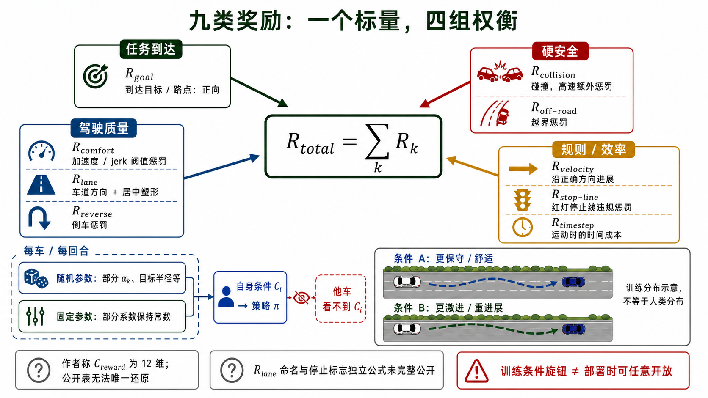
R_lane 与表 A2 两个车道分项、12 维条件清单和停止标志独立公式并不完整，图中只保留可确认类别。证据。 奖励正文与表 A2 给出以上公式和采样范围。图 A1 的条件轨迹和互信息分析显示，center-bias、车道居中、倒车、速度和信号等参数确实与轨迹风格相关。图 A3 的组合消融进一步说明，完全取消奖励随机化造成最大退化，尤其 CARLA LAV 误差从 0.2345 跃升到 18.1333。
边界。 “极简奖励”只能理解为没有人类轨迹和逐场景脚本，不能理解为奖励没有丰富塑形。分析段称策略条件化 12 个奖励参数，但表中可以清楚识别 10 个随机参数和 3 个固定量，无法唯一还原 12 维名单。正文概述还提到停止标志惩罚，详细公式只有红灯停止线，没有单独停止标志项。R_lane 与两个细分车道项、、 也存在记号不完整。完整奖励已相当有设计性，因此自然行为不能全部归因于“从任务目标自动涌现”。
白话解释。 车群不是只拿到“到终点就赢、撞车就输”两个信号。作者还告诉它要守路、沿正确方向走、别太颠、别无故倒车、别闯红灯、别一直磨蹭，并把这些在意程度随机给每辆车。真正有意思的地方是不同车拿到不同权衡，迫使策略学会和各种脾气互动；但也正因为奖励设计很多，不能把所有自然性都说成完全无先验地自己长出来。
公式实验室 3：一帧奖励总账与事件项、逐步项的量级差
[教学构造] 本实验沿用统一教学合同：参与者 A 以 v=8 m/s 行驶，本帧发生碰撞并越过红灯停止线；碰撞权重为 2，舒适权重为 0.05，纵向大加速度与大加加速度共触发两次舒适惩罚，车道相对朝向为 0.1 rad，停止线权重为 0.4，步长为 0.3 s；本帧没有目标、越界或倒车项。
不要在这里重抄全部奖励墙，而是把每一项当作账本行。碰撞、舒适、速度、停止线和时间项可直接从论文附录公式代入；车道朝向与居中两项采用统一教学合同已冻结的分项值。
| 分项 | 教学代入或冻结值 | 结果 | 来源标签 |
|---|---|---|---|
| 碰撞 | -2.8 |
[论文附录原式] + [审计复算] |
|
| 舒适 | -0.1 |
[论文附录原式] + [审计复算] |
|
| 车道朝向 | 合同冻结的朝向塑形代入 | +0.0000070 |
[教学构造] |
| 车道居中 | 合同冻结的居中塑形代入 | -0.0001988 |
[教学构造] |
| 速度进展 | +0.0007463 |
[论文附录原式] + [审计复算] |
|
| 停止线 | -0.4 |
-0.4 |
[论文附录原式] + [教学构造] |
| 时间步 | -0.0000075 |
[论文附录原式] + [审计复算] |
|
| 目标、越界、倒车 | 本帧均不触发 | 0 |
[教学构造] |
总账独立复算为：
[审计复算]
量级拆分更能说明奖励怎样塑形。[审计复算] 碰撞与停止线两项合计为 -3.2；舒适阈值项为 -0.1；四个小幅车道/进展/时间塑形项净和为 +0.0005470。因此一次事故或规则事件可以支配当前帧，而细小逐步项通过许多普通帧持续提供方向。这个例子只展示加法与量级，不代表训练中的典型回报分布，也不能据此判断某个奖励在长期策略中的边际因果贡献。
[论文未给出] 统一合同没有把车道朝向与居中教学值的全部中间参数再次展开，本模块不反向猜测新的 x_f、偏置或系数。[论文未给出] 论文文字称策略条件化十二个奖励参数，但公开表格不能唯一确定十二维到各分项的映射；停止标志也没有独立公式。教学总账不得用来补齐这些缺口。
5.2 奖励、车体、动力学与交通灯随机化
问题。 条件输入只有在训练分布真的覆盖不同条件时才有意义。论文怎样把车群从同质复制品变成行为和物理能力都不同的参与者？又有哪些随机化有直接消融证据，哪些只是合理工程设计？
机制。 每个参与者独立采样奖励条件 、动力学条件 、车长、车宽、速度与加速能力、油门/转向响应、目标半径和路点。车长 米，轴距 ；车宽 米并截断为 。这让同一策略覆盖接近行人占地的小主体到大型车辆。不同车知道自己的条件，却看不到别人的条件，所以自身条件是适配信号，别人条件是行为不确定性。
交通灯也不固定。红、黄、绿持续时间相对 CARLA 默认值分别在较宽范围采样：
系统还随机删除 20% 的单个灯、20% 的整组灯；20% 回合禁用全部交通灯；剩余灯中 5% 常绿。训练最长红灯被限制在 10 秒，减少折扣回报让车辆因长期等待而变得急躁的问题。
异常驾驶者提供另一类不确定性：最多 5% 的参与者在部分时刻看不到其他车辆，最多 10% 会随机短时急刹。它们不知道自己被修改，自身异常轨迹被排除训练，但其他正常车仍受到影响并学习应对。正文还提到状态和状态转移噪声，但没有公开分布、幅度、注入位置或相关性。
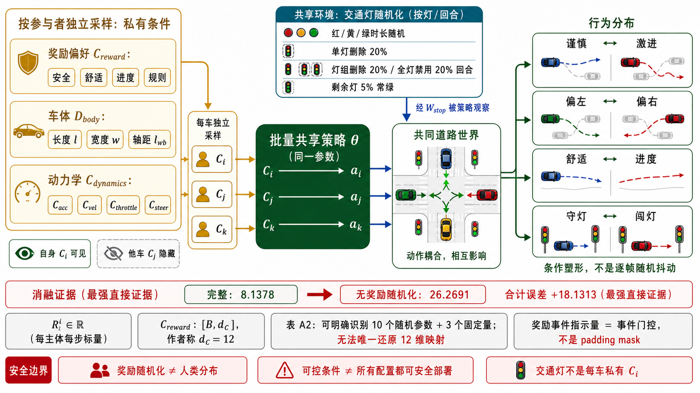
C_i。这些来源共同形成不同的守灯、舒适、速度、倒车和冒险权衡。组合消融最强退化来自取消奖励随机化 8.1378 -> 26.2691，不是普通动力学噪声；作者称奖励条件有 12 维，但公开表格不能唯一还原完整映射，条件族也不能直接等同人类风格或任意安全部署配置。公式/算法。 动力学响应使用上一章的混合均匀分布
使慢于基准与快于基准的参与者数量平衡。随机化消融使用三个基准距满分 100 的误差之和作为合计指标，精确柱值为：
| 变体 | nuPlan 误差 | Waymax 误差 | CARLA LAV 误差 | 合计误差 |
|---|---|---|---|---|
| 全部特性 | 6.8261 | 1.0772 | 0.2345 | 8.1378 |
| 无动力学噪声 | 6.8057 | 1.1643 | 0.4184 | 8.3884 |
| 无随机动力学参数 | 6.7732 | 1.2024 | 2.5308 | 10.5064 |
| 两类动力学多样性均删除 | 7.1443 | 1.1273 | 2.9688 | 11.2403 |
| 无奖励条件输入 | 7.5200 | 1.2275 | 3.1998 | 11.9473 |
| 无奖励随机化 | 6.9209 | 1.2149 | 18.1333 | 26.2691 |
证据。 删除普通动力学噪声只让合计误差增加 0.2506；删除随机动力学参数增加 2.3686；删除奖励条件输入增加 3.8095；删除奖励随机化增加 18.1313。因此最强证据不是“加一点噪声就稳健”，而是“让参与者在不同奖励下形成不同真实行为分布”对跨基准表现非常关键。图 A1 的 200 组条件轨迹聚类和互信息排序给出可解释行为差异，图 A3 给出删除式反事实。
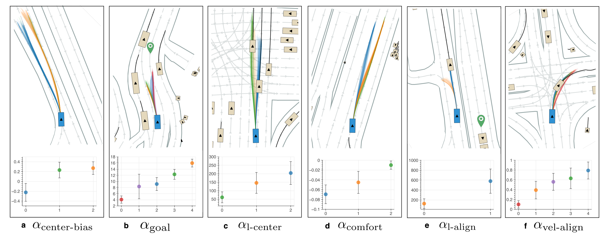
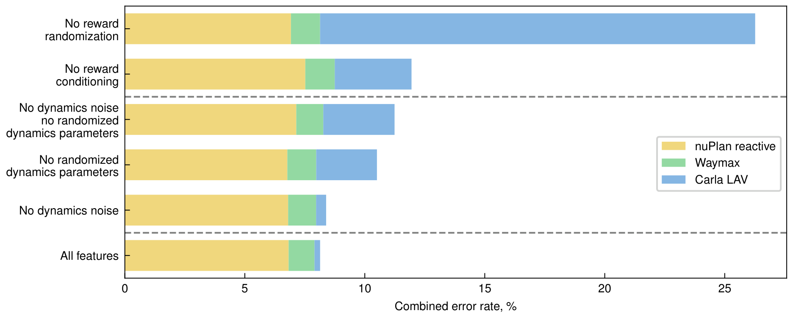
边界。 消融只使用约 660 GPU 小时的缩减预算、单个训练种子，没有误差条；“无奖励条件化”时是否仍随机但对策略隐藏、“无奖励随机化”时固定在哪个条件值，都没有完整定义。灯控随机化和异常驾驶者没有单独消融。训练红灯最长 10 秒是工程折中，论文没有独立证明任意更长等待都能泛化。状态/转移噪声参数缺失，不能把其作用量化。错误或危险条件也可能让策略更愿意违规，因此部署必须由上层系统锁定条件，而不能把风格旋钮任意暴露。
白话解释。 这套系统最关键的不是把所有车都加一点随机抖动，而是让路上每辆车真正有不同目标和脾气：有人更怕撞，有人更赶时间，有人不愿倒车，有人更守灯。正常车必须学会在这种车群里生存。消融说明这比普通运动噪声重要得多，但实验规模和变体定义仍不足以把每一种随机化的贡献精确分开。
5.3 PPO 基础训练与时间边界处理
问题。 超大规模采样并不会自动变成稳定学习。算法怎样估计长时价值、怎样处理因时间上限被截断的回合、怎样在 8 张 GPU 间同步，以及哪些关键 PPO 细节没有公开？这些决定了“一万亿状态转移”是否真正转化为可比较的策略更新。
机制。 Gigaflow 使用由 Stable Baselines 代码派生的近端策略优化（proximal policy optimization, PPO）。演员给出动作分布，评论家估计折扣回报；两者参数完全分离。每张 GPU 独立采集在策略轨迹，更新前通过分布式数据并行 PPO（DD-PPO）同步梯度。回合若只是达到最大时长而截断，并不被当成真实失败：作者把终止状态的评论家价值接到末尾奖励上，近似无限时域，避免把仍有希望的状态误设为零终值。
公式/算法。 学习率采用余弦退火：
时为初始学习率， 时降为零。时间截断的末尾回报概念上改为
而真实终止不应这样接续。论文没有给出更完整实现条件，不能推断所有终止类型的代码分支。
最终超参数为：
| 参数 | 值 | 作用与解释 |
|---|---|---|
| 总训练批量 | 256,000 | 8 张 GPU 同步更新的总样本量 |
| 每 GPU 批量 | 32,000 | 单设备本地批量 |
| 轨迹长度 | 128 | 每次采集的时间步数 |
| 每批 PPO 轮数 | 3 | 同批过滤后数据重复优化次数 |
| 折扣 | 0.999 | 强调长时目标与后果 |
| GAE | 0.95 | 回报偏差/方差折中 |
| 最大回合 | 1,200 步，即 360 秒 | 训练时间边界 |
| PPO 比率截断 | 0.2 | 限制策略单次变化 |
| 价值函数截断 | 无 | 评论家没有同类截断 |
| 初始学习率 | 随余弦计划衰减 | |
| 熵系数 | 0.01 | 保持动作探索 |
| 价值损失系数 | 0.5 | 评论家损失权重 |
| 最大梯度范数 | 0.5 | 梯度裁剪 |
| 优势归一化 | 开启 | 改善尺度稳定性 |
| 优势过滤阈值 | 删除低绝对优势样本 | |
| 数值精度 | 16 位自动混合精度 | 提高吞吐、降低显存 |
| 初始化 | 正交权重、零偏置 | 网络初始状态 |
开发期还使用基于群体的训练（population-based training, PBT）选择部分 PPO 与仿真参数，但只在单地图、较少随机化的简化配置上搜索；最终把余弦学习率和 0.3 秒步长迁移到完整系统。
证据。 训练算法与表 A3 明确给出以上数值。作者声称演员/评论家不共享参数在经验上产生更稳健、低熵的收敛策略，但没有共享/分离对照。高 、长达 360 秒回合和终值自举与长期路线任务相匹配。同步梯度保证 8 张 GPU 的更新基于同一参数版本，避免各设备独立漂移。
边界。 TeX 没有写出 PPO 策略代理损失、价值损失与熵项的完整组合公式；没有说明 GAE 逐步递推、优势归一化是在过滤前还是后、按 GPU 还是全局统计；也没有 Adam 的 、 或完整 PBT 搜索空间。不能用常见默认值填空。PBT 在简化配置上选择参数，隐含假设它们能迁移到 8 图、大随机化和百万参与者规模；最终结果说明配置可用，却没有隔离验证这种迁移。演员/评论家分离的稳健性也只是作者经验判断。
白话解释。 如果仿真只是因为计时器到了而停下，算法不会把它当作车已经失败，而是让价值网络估计“故事继续下去还值多少”。8 张 GPU 各自跑车，更新时再把梯度同步。论文给了很多最终旋钮数值，但没有把标准 PPO 的每一行损失实现都写出来，所以我们可以解释训练合同，不能假装已经复原完整代码。
公式实验室 4：时间截断、自举与三步教学 GAE
论文明确说时间上限截断要接入价值估计，但没有展开 GAE 代码。下面用两个教学门把概念拆开：b_t 控制 TD 残差是否自举下一状态价值，c_t 控制当前存储片段是否继续递推到下一条优势。这两个名字和真值表只用于教学，不冒充论文实现。
| 边界类型 | b_t |
c_t |
来源标签 | 含义 |
|---|---|---|---|---|
| 普通继续转移 | 1 |
1 |
[教材桥接] |
下一状态价值进入 TD，下一条优势也继续向前传播 |
| 真实终止 | 0 |
0 |
[教材桥接] |
不把终止后的不存在未来价值接回来，也不跨终止递推 |
| 时间上限/当前片段边界 | 1 |
0 |
[教材桥接] |
末状态仍做价值自举，但当前存储片段在这里停止优势递推 |
[论文未给出] 目标论文没有公布实际变量名、终止标志与时间截断标志的编码方式、跨经验片段状态保存或时间边界掩码组合；上表只把“自举”和“递推边界”从一个含糊的终止标志中拆开。
TD 残差与教学递推写为：
[教材桥接]
本次受控输入为：
| 输入 | 值 | 来源标签 |
|---|---|---|
| 奖励序列 | [0.10,-0.02,0.00] |
[教学构造] |
| 当前与下一状态价值 | [1.20,1.30,1.10,1.00] |
[教学构造] |
| 折扣 | 0.999 |
[论文附录原式] |
| GAE 参数 | 0.95 |
[论文附录原式] |
| 末端性质 | 时间上限，末状态价值继续自举 | [论文正文原式] + [教学构造] |
先算三步 TD 残差：
[审计复算]
再从片段末端向前递推，得到：
[审计复算]
第一步残差虽然为正，后续两个负残差仍会经 向前传播，所以第一步最终优势变为负。这正是 GAE 的学习价值：它不是逐帧奖励的同义词，而是把一段未来偏差压回当前动作。[论文未给出] 该数值序列不是论文训练样本，递推式也不是对未公开实现的复原；真实终止/时间截断掩码、优势归一化顺序、跨 GPU 统计范围和跨经验片段递推方式都必须继续保持未知。
5.4 优势过滤算法
问题。 训练后期绝大多数数据是已经学会的正常直行和秩序交通。评论家对这些状态估计准确，优势接近零；它们在数量上却会淹没碰撞前、让行、抢空隙、救场或犯错等关键时刻。如何让梯度算力集中在罕见但高信息量的转移，是把仿真吞吐转化为学习吞吐的核心。
机制。 作者不对高优先级样本重复采样，而是让低绝对优势样本被采样零次。选择信号是广义优势估计（generalized advantage estimation, GAE）的绝对值，因此明显好于预期的正优势和明显坏于预期的负优势都会保留。阈值不是固定奖励尺度，而是当前批次最大绝对优势的指数移动平均的 1%，让阈值随训练尺度变化。
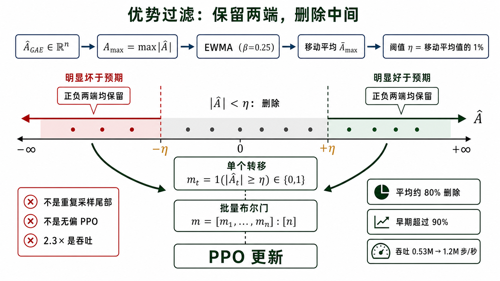
公式/算法。 算法 1 的输入是模型参数 、环境 与移动平均系数 。每次迭代执行七步：
- 收集当前策略轨迹：
- 计算每个转移的 GAE：
- 求批次最大绝对优势：
- 初始化或更新移动平均：
- 设阈值：
- 删除所有低绝对优势转移：
- 只用过滤缓冲更新 PPO：
伪代码函数名 Filter(B_exp, |A| < eta) 单看可能有保留/删除歧义，紧邻正文明确写的是丢弃低优势样本，因此以上集合方向有文本依据。
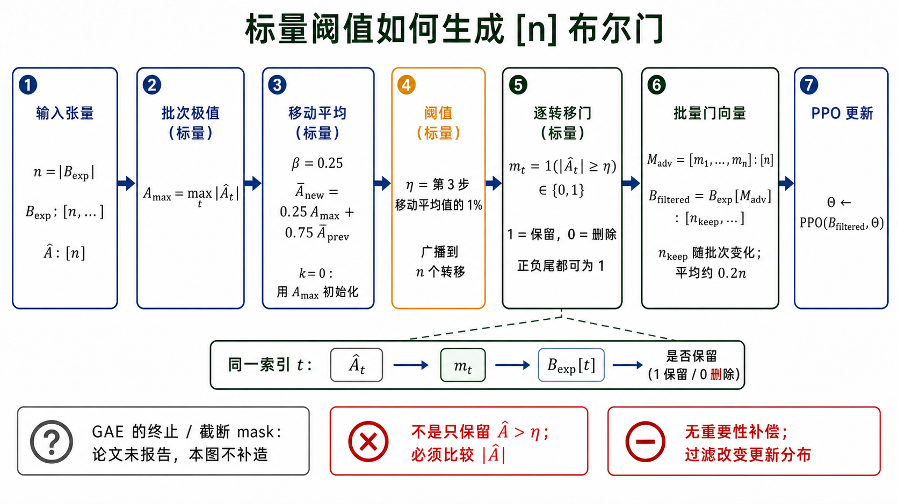
Â:[n] 先生成标量 A_max、标量移动平均和标量阈值 η；每个转移的 m_t∈{0,1} 仍是标量，第 6 步才把它们组成批量门向量 M_adv:[n]，并以布尔索引得到变长缓冲 B_filtered:[n_keep,...]。门同时保留正负优势尾部，平均约保留 0.2n；论文没有公开 GAE 的终止/截断掩码，也没有报告过滤后的重要性补偿。证据。 作者报告全训练平均过滤约 80% 样本，早期超过 90%；吞吐从约 53 万增至 120 万步/秒，约 2.3 倍。正文“最多 80%”与附录“平均约 80%、早期超过 90%”口径不完全一致，应采用更具体的附录描述。约 660 GPU 小时、最终预算 30% 的单次消融里，两者 nuPlan 终点都接近 93，但有过滤版本更早达到高分；CARLA LAV 有过滤版本约 30 小时达到接近 100，无过滤长期约 82 至 86；自博弈事件间距末期约为 100 万公里对 10 至 20 万公里；超时率约接近 0% 对 4% 至 5%。除正文明确数字外，这些终点是矢量图近似读值，不能伪装成底层数表。
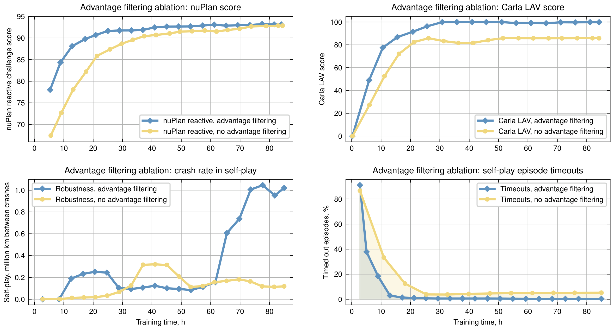
边界。 第一，删除样本改变了 PPO 更新分布，且没有对被删除转移做重要性补偿；它有意偏向高绝对优势尾部，不再等同完整在策略分布的无偏期望。第二，阈值依赖批次最大值，可能受单个极端优势影响；没有分位数或稳健统计对照。第三，质量证据来自单次缩减预算曲线，不能把 2.3 倍吞吐写成“最终策略质量提高 2.3 倍”。第四，作者明确认为它适合采数据便宜、算梯度昂贵的场景；真实道路交互昂贵时，丢掉 80% 数据未必合理。
白话解释。 算法把“已经会的普通直路”先放下，重点复盘明显救了局面或明显搞坏局面的时刻。这样能省掉大量几乎没有梯度的信息，训练确实更快。但它也改变了算法每天看到的案例比例，像事故复盘会让人高估事故场景一样，因此需要把效率收益和分布偏差一起看。
优势过滤可交互复核：静态默认批次、阈值与布尔门
本 H4 标题保留“优势过滤可交互复核”前缀，使现有构建器能把该模块识别为复核器容器。模块本身只提供静态默认批次与预期结果，不包含 JavaScript。
| 构建器字段/算法量 | 静态默认值 | 来源标签 |
|---|---|---|
adv-ewma：上一轮最大绝对优势移动平均 |
0.60 |
[教学构造] |
adv-values：当前批次优势 |
[-0.102105,-0.316954,-0.101,0.008,-0.004,0.002,0.42,0.0005] |
[教学构造] |
| 移动平均系数 | 0.25 |
[论文附录原式] |
| 阈值比例 | 0.01 |
[论文附录原式] |
adv-result：静态预期输出 |
阈值 0.00555，保留 5/8 |
[审计复算] |
当前批次先求最大绝对优势：
[论文附录原式]
随后更新移动平均并得到阈值：
[论文附录原式]
把论文“删除 ”改写成保留门：
[等价改写]
对静态默认批次逐步复算：
| 中间量 | 结果 | 来源标签 |
|---|---|---|
当前 A_max |
0.42 |
[审计复算] |
| 新移动平均 | 0.555 |
[审计复算] |
| 阈值 | 0.00555 |
[审计复算] |
| 布尔门 | [1,1,1,1,0,0,1,0] |
[审计复算] |
| 保留数量 | 5/8 |
[审计复算] |
负优势 -0.102105、-0.316954 与 -0.101 全部被保留，因为筛选依据是绝对值；被删除的是 -0.004、0.002 与 0.0005 这些靠近零的中央样本。[审计复算] 正优势 0.008 和 0.42 同样保留。因此“优势过滤”不是只学习好动作，也不是删除所有坏动作，而是把梯度算力集中到明显偏离评论家预期的正负尾部。
[论文未给出] 优势归一化在过滤前还是过滤后、统计量是否跨 GPU 汇总、极端值如何影响最大值移动平均，以及是否有任何重要性补偿，都没有公开。论文算法结构表明过滤会改变 PPO 更新分布；静态复核器只能验证门的算术，不能证明这种分布改变在其他任务中仍然有益。
第 6 章：“涌现”究竟表现在哪里
6.1 从 10^8 到 10^12 状态转移的技能阶梯
问题。 标题中的“涌现”具体指什么？如果只是最终策略在一个合流场景中成功，可能是预设规则或偶然轨迹。论文更有价值的证据是沿同一训练过程读取多个检查点，观察策略从低级失败到多车协调的阶段性变化。但这类证据仍需区分“能力随训练出现”与“存在严格规模相变”。
机制。 自博弈中的环境与学习者共同演化。早期共享策略控制的车辆大多不会让行，会制造越线、碰撞和堵塞；随着策略学会局部避碰和换道，其他车也更会协商，学习者才有机会进入更复杂的跨车道汇入、无保护左转、掉头和多股车流合并状态。换言之，经验增加不仅让网络见到更多同类样本，也改变下一轮对手能力和可到达状态分布。
公式/算法。 图 3 的关键检查点为
次状态转移。三基准示例使用的 检查点分别约对应 300 万、9,000 万和 16 亿公里。瓶颈场景每个检查点做 100 次独立滚动；三股车流场景从 1,000 次滚动中展示最差的 100 次。训练更新可概念化为
强调经验缓冲本身依赖当前策略，横轴不是静态数据集上的单纯重复次数。
证据。 瓶颈诊断给出清楚阶段：
| 状态转移 | 观察到的行为 |
|---|---|
| 车辆驶离车道并碰撞 | |
| 能前进和避碰，偶尔换道，但不能跨多车道汇入；主要右侧车辆成功 | |
| 汇入开始出现，最左车道通常仍失败 | |
| 最左车道有时成功，可靠性不足 | |
| 展示滚动中所有车辆可靠通过，未见事故 |
三股无信号车流早期主要右转流成功，随后逐渐学会无保护左转和掉头，到 时作者称所有参与者可靠成功；图中展示 1,000 次滚动里最差的 100 次，比只展示最好轨迹更强。若 1,000 次确实零失败，观测失败率为 0/1000；粗略 95%“三法则”上界约为 0.3%，但这是本次统计推导，不是论文报告。三套基准各一个示例也从橙色低分轨迹变为绿色高分轨迹。
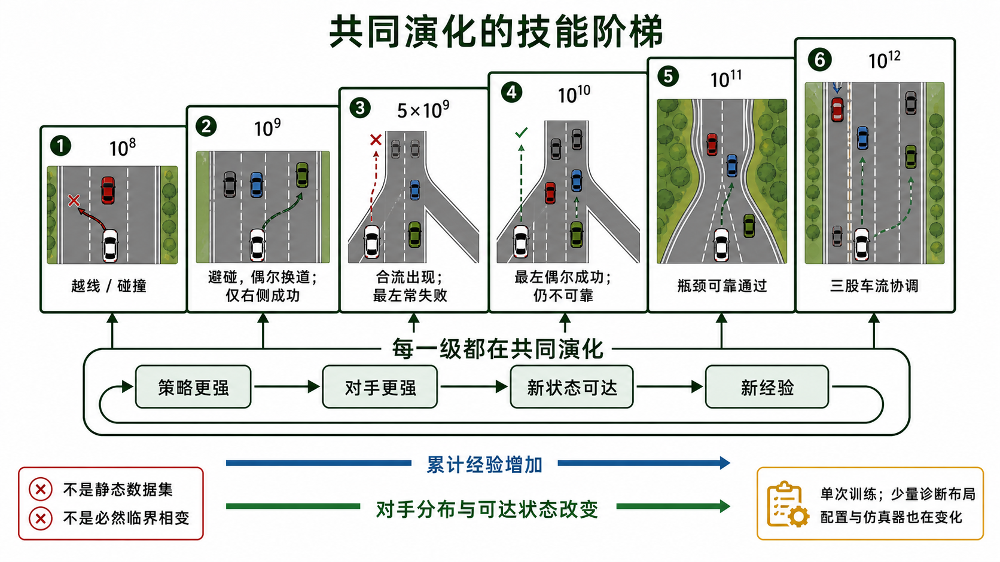
10^8 的越线碰撞逐步发展到换道、跨车道汇入、瓶颈可靠通过和 10^12 的三股车流协调；每次策略更新又会改变伙伴能力与可达状态，所以横轴同时包含经验增加和训练分布共同演化。该阶梯来自单次训练和少量诊断布局，不能画成“达到某一步数必然相变”的普遍规模律。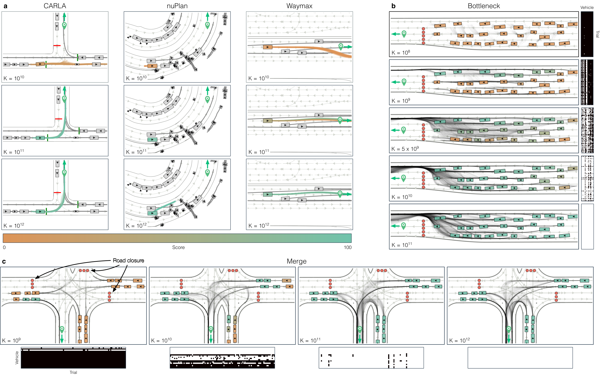
边界。 第一，检查点来自单一训练运行，没有多随机种子、置信区间或等算力反事实。第二，人工诊断布局和基准示例的选择规则没有完整报告。第三，“可靠”只指展示滚动，零观察失败不是无限分布上严格零失败。第四，随着 增长，策略、评论家、对手、优势阈值、状态分布和仿真器加固都在变；没有固定这些因素只改变样本数的实验。第五，技能可能是成功概率连续上升后跨过可视阈值，不必是物理意义的相变。
白话解释。 早期车只会往前挤，中期学会别撞和换一条道，练得更久后才学会大家互相腾位置，让最远车道也能汇入。这个过程很有说服力，因为同一题在不同训练阶段的行为明显变化；但它更像一支球队逐步成熟，不是证明“任何球队练到一万亿步都会自动获得同样战术”的自然定律。
6.2 价值网络、关键参与者与反事实行为
问题。 最终网络只是记住常见轨迹，还是对危险几何、相对速度、关键邻车行为和远端障碍有针对性响应？论文用价值热图、删除参与者和控制他车行为的反事实来探查内部功能。这些探针不能替代大样本评测，却能检验机制是否与“会互动、看长远”的叙事一致。
机制。 评论家估计包含目标、安全、舒适和规则的折扣回报，因此危险弯道、高相对速度和不可缓解冲突应降低价值。演员则只需关注能改变当前最佳动作的参与者。作者逐个删除场景中的邻车：对演员，计算参与者存在与动作分布之间的互信息；对评论家，计算删除前后价值差。另一些实验固定道路与目标，只改变邻车是否加速、停车、切入或让行，观察自车是否切换机动。远期实验在默认路线前 156 米放置障碍，检查策略是否提前绕街区。
公式/算法。 评论家探针可写为
演员敏感度由
表示，论文没有公开互信息估计器、采样数或偏差校正。远端障碍反事实比较
这些量衡量输入干预后的输出变化，不等同网络内部注意力权重，也不直接给出碰撞概率。
证据。 图 4a 显示 72 km/h 过急弯的低价值区域大于 36 km/h；邻车以 36 km/h 横向运动时，自车相对速度改变会让低价值区域按碰撞几何移动并增强，价值范围图示约为 -3 到 0。图 4b 的示例里，演员更关注会迫使当前动作改变的车辆，评论家还关注眼下无法缓解但会增加长期危险的车辆。图 4c 展示多组配对反事实：后车加速逼近时短暂借对向车道避让；对向车停车时做三点掉头，否则绕街区；前车意外停车时超车；邻车激进切入时避让；对向车让行才左转，否则等待。图 4d 中，默认路线 156 米前出现障碍后策略改为绕街区，沿原路线价值最多下降约 0.6。
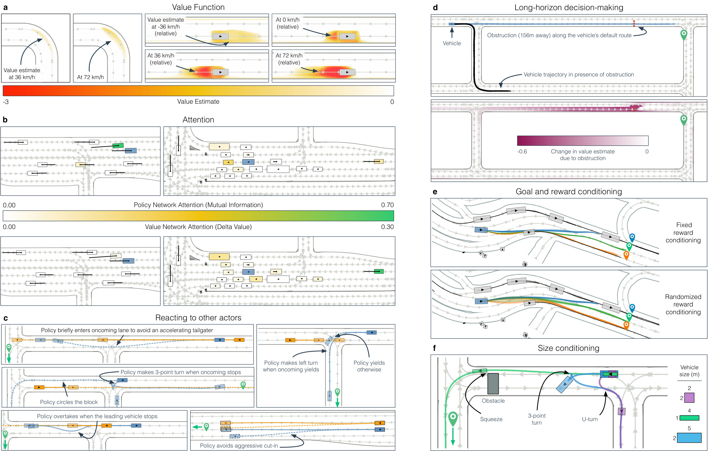
边界。 价值混合多种奖励，不是纯危险概率；没有校准曲线、真实风险标签或相关系数。逐车删除会产生原分布外场景，输出变化不必等同因果注意力。演员互信息没有公式细节、误差条和跨场景分布，只展示少数 WOMD 场景。行为反事实是精选配对，没有成功率和覆盖范围。156 米障碍只证明当前结构化输入足以改变长期路线，可能依赖 Dijkstra 路由和价值先验，不能证明网络显式预测 156 米后的未来。
白话解释。 价值网络看起来知道高速过弯和高相对速度更危险，演员也会因真正会影响自己的车改变动作。远处堵路时它会提前绕行。这些都是“不是机械重放”的好证据，但还只是若干受控体检项目，不是证明它在任何道路上都能正确理解所有人的意图。
6.3 可控风格与车体适配
问题。 一个共享策略会不会把所有条件平均成同一种行为？如果条件真的进入策略，改变目标、奖励和车体尺寸时，轨迹应系统性变化，而且变化应能解释为不同任务权衡，而不是随机噪声。
机制。 策略训练时同时接收目标、奖励条件和自身车体/动力学。目标改变应选择不同路线；车道偏置、目标半径、居中、舒适、朝向和速度等奖励参数应改变换道、掉头、曲率和等待行为；车长、宽度和转弯半径应改变能否穿过障碍及掉头方式。条件分支因此相当于在同一参数空间内选择一个行为模式，不需要为每种风格重新训练网络。
公式/算法。 作者在 nuPlan 若干场景中采样 200 组奖励条件，滚动轨迹后聚类，再计算各参数与轨迹簇的互信息。按贪心顺序固定已选主导参数，得到前六名：
条件响应可写成
其中 表示车体和动力学；固定其他量、改变一个条件，轨迹 发生可解释变化。论文没有给条件遵从率或训练范围外外推公式。
证据。 图 A1 系统展示多个奖励条件对轨迹风格的影响；图 4e 固定奖励改变三个目标，得到对应三条路线，随机奖励后同一目标附近出现额外轨迹多样性。图 4f 固定其他因素，只改车体尺寸：细长车辆穿过障碍，转弯半径小的紧凑车直接掉头，大车做三点掉头。互信息分析中，center-bias 能解释偏左/偏右及车道选择；目标半径小使策略更积极换道靠近目标；居中权重大使其宁可少进展也保持车道；舒适权重接近零时转弯更激进；朝向权重低时更愿意掉头；速度朝向权重低时可选择更宽、更舒适的转弯。降低红灯敏感系数后，策略更愿意闯灯，也直接暴露条件安全风险。
边界。 论文没有报告“若干 nuPlan 场景”的数量、每条件滚动数、聚类算法、簇数、互信息估计器或偏差校正；贪心排序会忽略参数交互。图中部分轴命名和符号与奖励表不完全一致，误差条含义也不足。可控轨迹不等于覆盖真实人类风格分布，更不等于所有条件都安全。条件范围外插值和错误配置未系统测试；部署若允许任意调低碰撞或守灯权重，会主动制造违规策略。
白话解释。 同一套权重确实能像一个带旋钮的司机：换目标会换路线，换车身会换掉头办法，调高舒适会更平滑，调低守灯会更敢闯。这个能力让一个网络服务多种车辆和偏好，也说明上层系统必须锁住危险旋钮，不能把“可控”误解为“怎样调都安全”。
第 7 章：证据是否支撑论文的主张
7.1 “零样本”与基准适配的准确含义
问题。 同一套策略权重没有为 CARLA、nuPlan、Waymax 或 WOSAC 再训练，是否等于整个评测系统没有任何基准专用工程？这是理解跨基准结果的首要口径。若把“权重零微调”扩大成“输入、目标、控制频率和环境都零适配”，就会把合理的系统接口工作误当成模型自身泛化。
机制。 四个接口都先把基准状态转换为 Gigaflow 的低维结构化观察，并把策略接入各自仿真器。CARLA 和 Waymax 每个评测步执行一个策略步；nuPlan 每步要求规划轨迹，作者让所有参与者在内部滚动 0.3 秒，再提交自车未来轨迹。Waymax 使用日志专家最终位置并向前投影 50 米和 100 米构造目标。WOSAC 使用 1.1 秒历史采样候选目标，按初始价值筛选；车辆和自行车由策略控制，行人由规则模型控制，并给生成位置加入按指标选择的高斯噪声。CARLA 还修补了参与者碰撞后错误状态造成的假记分。
公式/算法。 可把跨基准接口写成
其中 表示基准， 是基准专用观测/目标转换器， 在各基准间不变。因而准确命题是
而不是 或仿真包装器完全相同。论文没有报告三个主要基准最终使用的完整奖励条件 数值，因此也不能确认同一权重是否在所有考场使用完全相同的风格设置。
证据。 同一权重在三个主要闭环基准均取得表列最高总分，WOSAC 也高于若干监督方法。这是跨接口泛化的实证。方法附录同时明确写出各基准转换和包装器，证明高分不是“无需转接头”。CARLA 训练使用 8 张 CARLA 基础地图的 128 个仿射变体，因此 CARLA 的零样本是未在具体排行榜路线和手工事件上专项训练，不是从未接触该仿真域。nuPlan、Waymax 和 WOSAC 则引入新地图、日志初始化和自动标注噪声，域迁移更强，但仍停留在结构化状态。
边界。 权重零微调不排除开发期观察公开验证集、选择检查点、设计转换器、修复环境缺陷或选择噪声。论文没有说明 Val14 是否参与开发决策，也没有把所有包装器与外部基线在同一版本完整重跑。真实日志衍生场景仍是仿真：nuPlan 车辆由 IDM、Waymax 车辆由 IDMRoutePolicy、WOSAC 行人由规则模型控制。不能把“真实地图/日志初始化”写成现实道路闭环。
白话解释。 同一个司机没有为四场考试重新上课，但每个考场都配了不同翻译器：有人把道路和邻车翻译成它能读的格式，有人替它构造目的地，有人要求它交一段未来轨迹。结论是“大脑权重通用、接口需要适配”，不是“拿到任何环境都能直接插上就开”。
主张-证据台账：八条主张与四类评测合同
本模块只使用目标论文正文、附录、原始图表及当前第一阶段审计可直接复核的算术。强度词描述的是“现有证据能支持到哪里”，不是对论文价值的总评分。未来实验一律标为新增验证，不得倒写成论文已经完成的证据。
先固定四类评测合同。 同一个高分不能跨合同借用含义；每类评测回答的问题、样本单位和停止线都不同。
| 评测合同 | 证据单位与必要记录 | 能证明什么 | 不能证明什么 |
|---|---|---|---|
| 技能检查点合同 | 固定诊断场景、明确检查点、完整滚动次数、场景选择规则、训练种子和逐次失败计数 | 同一训练运行中，瓶颈汇入、多车协调等行为随共同演化出现 | 规模是唯一原因、任意地图都复现、不同训练种子必然出现同一技能、面对独立人类伙伴同样可靠 |
| 跨基准闭环合同 | 固定策略权重哈希；逐基准记录观测转换器、目标构造、奖励条件、控制频率、环境补丁、数据划分和检查点选择 | 同一权重能跨 CARLA、nuPlan、Waymax 等结构化闭环接口完成任务 | 整个系统零适配、各基准分数可直接横比、隐藏测试盲测、原始感知或真实道路泛化 |
| WOSAC 分布相似合同 | 记录数据划分、目标采样、规则参与者、噪声参数、生成次数、复合分和全部分项 | 生成轨迹在若干运动学、互动和地图统计上与日志分布部分相容 | 人类主观自然性、实际事故率、现实安全认证、优于所有监督方法 |
| 长时耐久合同 | 报告精确评测配置、独立运行数、总暴露里程/时间、事件总数、严重度、近失、右删失和区间估计 | 在给定结构化仿真配置下，碰撞或越界事件间隔可以很长，并可测量其频率敏感性 | 实车可连续运行相同年限、与人类事故数据库同口径、策略权重单独造成标题数字 |
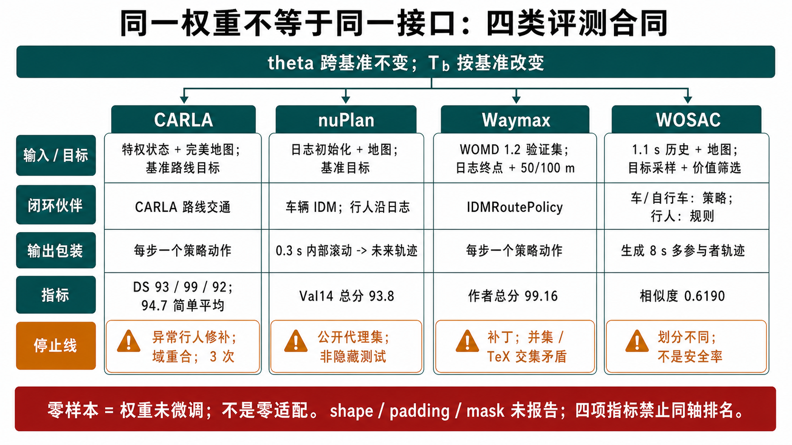
C1 无人类驾驶轨迹训练的结构化状态策略可形成广泛闭环能力
- 直接证据： 图 3 的技能阶梯、图 4 的价值/参与者/远端障碍探针，以及同一权重在 nuPlan、CARLA、Waymax 三类闭环接口的高分。目标论文明确以程序化世界、自博弈奖励和结构化状态训练，而不是以人类驾驶轨迹监督策略。
- 证据强度： 较强，但限定在结构化仿真决策层。 多种证据形态相互补充，不只依赖一个总分；仍缺原始感知和真实车辆闭环。
- 替代解释： 能力可能部分来自人工地图语义、Dijkstra 路线、奖励塑形、基准转接器和 CARLA 域重合，而不只是“没有人类轨迹”或“自博弈规模”单独作用。
- 证据边界： “不用人类驾驶轨迹训练”不等于不用人工先验、真实地图、日志衍生目标或评测适配；也不等于实车可部署。
- 最小新增实验： 冻结策略权重、奖励条件和转换器规格，在开发期不可见的结构化地图/场景集上盲测；同时报告固定规则基线、行为克隆基线、每场配对结果及失败类别。除地图和场景外，动作、观测字段、控制频率、仿真版本和检查点选择全部冻结。
- 可证伪判据： 若在预注册盲测集上相对强基线的优势消失，或能力只在训练同源 CARLA 场景成立，则“广泛闭环能力”的范围必须降级为域内或接口特定能力。
C2 共享条件策略可让同一参数产生多样参与者行为
- 直接证据： POSG 结构规定参与者共享参数但拥有不同目标、奖励条件、车体、动力学和局部观测；图 A1 与图 4e/f 展示目标、奖励和车体变化对应不同路线、掉头、绕障和守灯行为。
- 证据强度： 中等。 结构和配对反事实支持“同一参数可产生不同动作分布”，但没有证明这一分布覆盖独立人类伙伴。
- 替代解释： 行为差异可能主要由不同场景状态或人工挑选的条件值驱动；共享训练历史仍可能产生相关错误和内部让行约定。
- 证据边界： 共享参数不等于行为相同；条件不同也不等于伙伴独立，更不等于真实人类分布。
- 最小新增实验： 固定相同初始场景和观测，正交扫描目标、奖励条件和车体；再让五个独立训练种子的策略全配对交叉运行。报告动作分布距离、条件-轨迹互信息、任务成功、过失碰撞和种子间对角线优势。
- 可证伪判据： 若固定状态下改变条件几乎不改变动作/轨迹，或跨种子伙伴相较同种子伙伴稳定大幅退化，则“多样条件行为”或“伙伴泛化”必须分别降级。
C3 奖励异质性是跨基准稳健性的关键训练信号
- 直接证据： 图 A3 中完整配置合计误差为
8.1378，删除奖励随机化后为26.2691；删除奖励条件输入为11.9473。退化几乎全部集中于 CARLA LAV，是现有最强删除式反事实之一。 - 证据强度： 中等偏强。 处理与结果方向清楚、效应很大；但只有缩减预算、单训练种子和异质合计指标。
- 替代解释： 退化可能来自固定奖励值选择不当、优化难度改变、有效样本分布变化或单种子波动，而非奖励异质性本身的普遍作用。
- 证据边界： 合计误差把三种不同基准的百分点等权相加，Waymax 又使用作者自定义分数；不能把
18.1313的差值解释为自然物理量或完整预算最终差值。 - 最小新增实验： 采用“奖励是否随机化 × 奖励条件是否输入”的二乘二设计，至少五个训练种子、相同初始化配对、相同环境交互预算、网络、优化器、地图生成器和评测版本；分别报告每个基准原始指标，不只报告合计柱。
- 可证伪判据： 若多种子配对效应的置信区间包含零、方向在基准间不一致，或固定值改变即可消除退化，则“关键训练信号”应降级为该配置下的优化/条件选择效应。
C4 批量几何、小网络、按需重建和过滤共同支撑万亿步规模
- 直接证据： 8 张 A100 40 GB GPU 上同时推进 38,400 个世界、最多 5,760,000 个参与者，达到约 1.2M 状态步/秒、7.4M 决策/秒、一万亿转移和 16 亿公里；方法结构给出空间哈希、紧凑集合网络、按需观测重建与优势过滤的资源动机。
- 证据强度： 对“系统规模可行”较强；对“每个组件都必要”偏弱。 吞吐与最终规模是实测，绝大多数组件没有独立等算力消融。
- 替代解释： 主要收益可能由硬件批量化、紧凑网络或少数组件贡献；其他组件只是工程便利，或可被不同实现替代。
- 证据边界： 运行到一万亿步证明系统合同成立，不证明空间哈希、最大池化、按需重建等各自提升最终质量，也不证明该组合在其他任务普遍最优。
- 最小新增实验： 在同一固定工作负载上逐项替换或关闭空间哈希、按需重建、特征丢弃和过滤，分别测状态步/秒、决策/秒、峰值显存、数值错误率及等环境交互后的策略质量；网络、批量规模、地图、硬件和编译设置冻结。
- 可证伪判据： 若移除或替换这些组件后吞吐、显存和稳定性均无实质变化，或同等资源下可轻易达到相同规模，则“共同支撑”的必要性表述应缩小到经实测的具体组件。
C5 优势过滤提高墙钟学习吞吐并在该消融中改善质量
- 直接证据： 平均过滤约 80% 低绝对优势样本，吞吐从
0.53M提升到1.2M步/秒；图 A2 的单次缩减预算曲线中，过滤版本更快收敛，并在 CARLA、自博弈事件间隔和超时率上更好。 - 证据强度： 中等。 墙钟吞吐提升直接且大；质量效应来自单曲线、无多种子，nuPlan 最终差距还趋于接近。
- 替代解释： 质量改善可能只是同墙钟内获得更多更新/交互，也可能来自筛选改变训练分布、极值阈值偶然性或随机种子。
- 证据边界：
2.3倍是墙钟训练吞吐，不等于最终质量也提高2.3倍；过滤保留正负尾部，但并未证明更新无偏。 - 最小新增实验： 比较四臂：原过滤、不过滤且同墙钟、不过滤且同环境交互数、随机丢弃且保留同样样本比例；至少五种子，冻结网络、优化器、仿真数据和评测集，报告学习曲线面积与最终指标。
- 可证伪判据： 若同环境交互或随机丢弃对照达到相同质量，或多种子最终效应不稳定，则只能保留“实现吞吐加速”，不能保留“过滤机制改善质量”的强表述。
C6 同一策略权重可跨 CARLA、nuPlan、Waymax 取得很高闭环分数
- 直接证据： nuPlan 总分
93.8、CARLA 三套 Driving Score93/99/92（简单平均94.7）、Waymax 作者分数99.16，均由同一策略权重进入不同结构化闭环接口。 - 证据强度： 较强但条件化。 三个异质接口均有完整结果表；比较受包装器、数据划分、环境补丁、CARLA 域重合及奖励条件未报告限制。
- 替代解释： 领先可能部分来自基准专用目标/转换器、检查点或条件选择、Waymax 自定义口径和环境版本差异，而不全是权重本身的通用性。
- 证据边界： 同权重不等于同输入、同目标、同控制频率、同奖励条件或零工程；三种分数也不能当成同一物理尺度平均。
- 最小新增实验： 公布并冻结权重哈希、所有转换器、完整奖励条件、控制频率、补丁和检查点选择；在各基准相同版本上重跑可运行基线，并做“统一条件值/各基准条件值”配对消融与场景级统计。
- 可证伪判据： 若统一条件、同版本和盲选检查点后优势消失，或成绩对轻微转接器选择极端敏感，则结论应降级为“经特定接口工程可取得高分”。
C7 策略行为在 WOSAC 上具有部分人类轨迹统计相似性
- 直接证据： WOSAC 复合分
0.6190，高于静止策略0.5007和若干监督方法；碰撞、越界及若干运动学分项显示生成分布与日志统计部分相容。 - 证据强度： 中等。 有完整分项和条件事件率，但作者策略在验证集、星号基线在测试集，且低于五个表列专用方法。
- 替代解释： 目标筛选、规则行人和按分数选择的 高斯噪声可能贡献复合分；安全奖励也会改变碰撞/越界复现率，静止基线说明部分事件由初始化决定。
- 证据边界： WOSAC 是分布似然式相似度，不是人类主观自然性、事故率或安全认证；高碰撞分不等于生成碰撞少。
- 最小新增实验： 在同一数据划分上重跑全部可运行基线，预注册目标采样和噪声参数，对每个场景做多次生成；报告复合分、全部分项、条件碰撞/越界率及场景级置信区间。
- 可证伪判据： 若同划分、固定包装器后不能稳定优于静止和简单基线，或相似度提升只由调噪声产生，则“部分人类统计相似性”的强度必须下调。
C8 论文最强净结论是结构化仿真中的系统可行性
- 直接证据： 一万亿转移与 16 亿公里证明系统可扩展运行；图 3/4 展示能力与机制线索；三类闭环基准、WOSAC、奖励异质性消融和优势过滤共同构成从训练到评测的证据链。
- 证据强度： 在证据停止线内较强。 多源证据支持“这套系统能在结构化仿真中形成广泛能力”；停止线外没有原始感知、独立人类伙伴、真实物理或道路认证。
- 替代解释： 高分可能由人工先验、同策略伙伴相关性、基准工程和理想化仿真共同促成；这些解释会缩小外推范围，但不抹去系统已实际运行和形成能力的事实。
- 证据边界： 系统可行性不是“规模必然产生通用智能”，也不是“自博弈可直接替代真实数据并部署”。
- 最小新增实验： 用冻结权重在未参与开发的结构化地图上，加入独立种子伙伴与预注册感知状态噪声，保持接口和安全条件不变；同时报告任务、事故、近失和分布外退化曲线。
- 可证伪判据： 若能力在独立伙伴或轻度结构化感知噪声下立即崩溃，或盲测无法超过强基线，则净结论应缩小为“同策略、低噪声、已适配仿真中的可行性”。
7.2 nuPlan：公开闭环代理集上的优势
问题。 在真实日志初始化、交通车辆闭环反应的 nuPlan Challenge 3 中，策略是否超过专用规划方法？优势来自哪些分项，差值是否有足够统计证据？
机制。 作者选择闭环反应式 Challenge 3。交通车辆初始位置来自真实分布，之后由增强智能驾驶员模型（intelligent driver model, IDM）沿车道中心线反应式行驶；行人仍沿日志轨迹且不对自车反应。在线排行榜服务器已关闭，因此使用公开 Val14 代理集，共 1,118 个场景。nuPlan 每步要求一条规划轨迹，Gigaflow 内部让参与者滚动并输出自车未来路径。
公式/算法。 IDM 纵向加速度为
其中 是加速度上限， 是期望速度， 是当前车距， 是期望安全间距， 通常为 4。该公式、变量定义及“车辆由 IDM 反应、行人沿日志轨迹”的评测设定直接来自目标论文 source/tex/extracted/main.tex:1527-1533。总分由目标进度、无责任碰撞、舒适、碰撞时间、方向、限速、可驾驶区域和持续推进等多项加权，不是单一事故率。
证据。 完整关键结果为：
| 方法 | 总分 | 自车进度 | 无责任碰撞 | 舒适性 | 碰撞时间合规 | 行驶方向 | 限速 | 可驾驶区域 | 持续推进 |
|---|---|---|---|---|---|---|---|---|---|
| Urban Driver | 50 | - | - | - | - | - | - | - | - |
| GC-GPP | 55 | - | - | - | - | - | - | - | - |
| PlanCNN | 72 | - | - | - | - | - | - | - | - |
| IDM | 77 | - | - | - | - | - | - | - | - |
| PDM-Hybrid | 92.1 | 90.2 | 98.1 | 94.8 | 93.5 | 99.9 | 99.8 | 99.5 | 99.1 |
| Diffusion-ES | 92.2 | 91.2 | 97.7 | 93.4 | 93.8 | 100.0 | 99.7 | 99.6 | 99.2 |
| Gigaflow | 93.8 ± 0.11 | 93.6 ± 0.06 | 98.4 ± 0.09 | 96.4 ± 0.27 | 93.8 ± 0.23 | 99.6 ± 0.05 | 99.9 ± 0.00 | 99.7 ± 0.04 | 99.0 ± 0.07 |
相对总分最强基线 Diffusion-ES，提升 1.6 分。分项差为：进度 +2.4、无责任碰撞 +0.7、舒适 +3.0、限速 +0.2、可驾驶区域 +0.1；碰撞时间相同，行驶方向低 0.4，持续推进低 0.2。因此优势主要是更能前进并保持舒适和低责任碰撞，不是每项都最好。
边界。 Val14 是公开验证代理，不是隐藏测试；论文未说明它是否参与开发期观察、检查点或条件选择。表中 ± 未解释重复次数、随机源和统计含义，不能据此做显著性检验。场景可能来自相关日志区域，总分又是复杂加权，论文没有场景级配对置信区间。行人非反应会制造不自然碰撞，也限制“与人类闭环互动”的含义。作者逐例检查 15 个碰撞，但责任解释仍是内部审查，第 10 章会进一步讨论。
白话解释。 在这张公开闭环考卷上，策略确实高出最强基线 1.6 分，尤其更能顺利前进又保持舒适。这个结果很强，但不是隐藏盲测，也没有足够统计信息让我们把 1.6 分说成已证明稳定显著。
7.3 CARLA：长路线强结果及域内/环境修改边界
问题。 CARLA 路线更长、持续数分钟，并包含手工危险事件。Gigaflow 是否超过使用特权状态和完美地图的专家？图 1 的 94.7 究竟是什么，所有违规项是否都更好？
机制。 作者采用 Jaeger 专家的改造评测代码，为所有方法提供同一特权状态测试床，并发现 CARLA 中行人与其他参与者碰撞后可能进入错误状态、触发假碰撞记分，于是事件发生后移除该行人。可运行对手都在修改环境中重跑，同时保留原论文成绩。三套路线集分别是 CL1 Testing Routes、LAV Benchmark 和 Longest6，每项只运行 3 次。Driving Score（DS）综合路线完成度（RC）和违规惩罚（IP）；其他列记录行人/车辆/布局碰撞、红灯、停牌、越界、路线偏离、超时和阻塞。
公式/算法。 图 1 的聚合并非官方独立指标，而是三个 DS 的未加权平均：
Gigaflow 为
Jaeger 作者重跑为 。不同路线集规模、难度和方差不同，等权平均只是总览展示。
证据。 三套完整关键结果如下，违规列越低越好：
| CL1 方法 | 驾驶分（DS） | 路线完成（RC） | 违规惩罚（IP） | 行人碰撞（Ped） | 车辆碰撞（Veh） | 红灯违规（Red） | 停牌违规（Stop） | 越界（Off） | 路线偏离（Dev） | 超时（TO） | 阻塞（Block） |
|---|---|---|---|---|---|---|---|---|---|---|---|
| CARLA Agent 重跑 | 29±0 | 41±0 | 0.73±0.03 | 0.03 | 0.36 | 0.28 | 0.03 | 0 | 0.44 | 0.01 | 0.15 |
| Jaeger 专家重跑 | 90±0 | 96±1 | 0.94±0.01 | 0 | 0.06 | 0.06 | 0 | 0 | 0 | 0.05 | 0.05 |
| Gigaflow | 93±1 | 97±2 | 0.95±0.01 | 0 | 0.07 | 0.01 | 0 | 0.64±0.44 | 0.01 | 0.07 | 0 |
| LAV 方法 | 驾驶分（DS） | 路线完成（RC） | 违规惩罚（IP） | 行人碰撞（Ped） | 车辆碰撞（Veh） | 红灯违规（Red） | 停牌违规（Stop） | 越界（Off） | 路线偏离（Dev） | 超时（TO） | 阻塞（Block） |
|---|---|---|---|---|---|---|---|---|---|---|---|
| CARLA Agent 重跑 | 9±2 | 58±0 | 0.18±0.04 | 0.22 | 0.74 | 3.99 | 0.58 | 0 | 0.87 | 0 | 0 |
| Jaeger 专家原文 | 94 | 95 | 0.99 | 0 | 0.02 | 0.02 | 0 | - | 0 | 0 | 0.08 |
| Jaeger 专家重跑 | 92±9 | 95±7 | 0.98±0.02 | 0 | 0.04 | 0.02 | 0 | 0 | 0 | 0.09 | 0.07 |
| Gigaflow | 99±1 | 99±1 | 1.00±0.00 | 0 | 0 | 0 | 0 | 0 | 0 | 0.02 | 0 |
| Longest6 方法 | 驾驶分（DS） | 路线完成（RC） | 违规惩罚（IP） | 行人碰撞（Ped） | 车辆碰撞（Veh） | 红灯违规（Red） | 停牌违规（Stop） | 越界（Off） | 路线偏离（Dev） | 超时（TO） | 阻塞（Block） |
|---|---|---|---|---|---|---|---|---|---|---|---|
| CARLA Agent 重跑 | 7±1 | 54±0 | 0.25±0.01 | 0.31 | 1.50 | 1.84 | 0.10 | 0 | 0.43 | 0.02 | 0.04 |
| Chitta 专家原文 | 77±2 | 89±1 | 0.86±0.03 | 0.02 | 0.28 | 0.03 | 0 | 0 | 0 | 0.08 | 0.13 |
| Jaeger 专家原文 | 81±3 | 90±1 | 0.91±0.04 | 0.01 | 0.21 | 0.01 | - | - | 0 | 0.07 | 0.09 |
| Jaeger 专家重跑 | 83±1 | 94±2 | 0.88±0.01 | 0 | 0.20 | 0.04 | 0.02 | 0 | 0 | 0.09 | 0.06 |
| Gigaflow | 92±2 | 99±1 | 0.93±0.01 | 0.02 | 0.08 | 0.04 | 0.03 | 0.24±0.08 | 0.03 | 0.05 | 0 |
三套 DS 均为表中最高。LAV 接近满分；Longest6 比作者重跑 Jaeger 高 9 分；CL1 高 3 分。但分项不是全面占优：CL1 车辆碰撞 0.07 略差于专家 0.06，越界 0.64±0.44 明显高；Longest6 的行人、停牌、越界和偏航也比重跑专家差。高总分主要来自极高路线完成和总体较低违规。
边界。 每种只有 3 次运行，LAV 专家 DS 标准差达 9，尾部事件估计不稳定。删除异常行人有工程理由并对可运行对手统一应用，但已改变官方环境；不能无条件等同排行榜。CARLA 与训练共享仿真器和基础地图族，证明的是未见具体路线与事件组合的域内泛化，不是跨物理世界。94.7 的简单平均没有统计权重。所有分项并非全面优于专家。
白话解释。 策略在 CARLA 长路线里确实很强，尤其不容易卡住，三张考卷总分都最高。但 94.7 是作者把三张不同难度考卷简单平均出来的展示数，而且环境修过、每项只跑三次、个别违规仍更差，所以不能只看一个柱子就说“所有方面全面胜出”。
7.4 Waymax：低事故、高进度与公式/口径矛盾
问题。 在 44,097 个真实日志衍生的短场景中，策略是否能少碰撞、少越界并保持进度？作者自定义 99.16 总分怎样计算，为什么 TeX 公式与表格不一致？
机制。 评测使用 WOMD 1.2.0 全验证集，每场 8 秒、10 Hz、最多 128 个对象，其他车辆由默认 IDMRoutePolicy 控制，并应用 Waymax 提交 720f9214a 上的 PR #54 修复。策略的目标取专家日志终点，再沿路线向前投影 50 米和 100 米并吸附到最近车道中心。因此训练没有使用人类日志，但评测目标明确使用日志信息。由于当时没有公开路线，作者自行定义场景进度、全局总距离比、成功率和总分。
公式/算法。 场景进度为策略行驶距离除以专家距离，专家少于 1 米时记为 100%；全局总距离比把所有场景距离先求和再相除。总分为
高风险矛盾在成功率。TeX 写为
只扣除同一场景“碰撞且越界”的交集。但表格算术显然使用
Gigaflow 两项均为 0.43%，交集公式会令总分至少 99.57%，不可能得到 99.16%。外部基线上界恰好按相加计算：Wayformer 100-7.89-10.68=81.43，DQN 100-3.74-6.50=89.76，行为克隆 100-1.11-4.59=94.30，专家日志 100-0.32-0.61=99.07。Gigaflow 99.16 对应并集约 0.84%，暗示约 0.02% 场景同时发生两类事件。目标论文 source/tex/extracted/main.tex:1565-1582 给出自定义进度、成功率和标号为 eq:waymax-score 的交集公式；同一 TeX 的 source/tex/extracted/main.tex:2025 又在表注中明确假设碰撞与越界互斥。两处原文共同证明这是论文内部公式/表格口径矛盾，不能静默修正。
证据。 完整表为：
| 方法 | 越界率 % ↓ | 碰撞率 % ↓ | 运动学不可行 % ↓ | 日志 ADE m ↓ | 场景路线进度 % ↑ | 总距离比 % ↑ | 作者总分 % ↑ |
|---|---|---|---|---|---|---|---|
| 专家日志 | 0.32 | 0.61 | 4.33 | 0.00 | 100.00 | 100.00 | ≤99.07 |
| Wayformer | 7.89 | 10.68 | 5.40 | 2.38 | 123.58 | - | ≤81.43 |
| DQN | 3.74±0.90 | 6.50±0.31 | 0.00±0.00 | 9.83±0.48 | 177.91±5.67 | - | ≤89.76±0.95 |
| 行为克隆 | 1.11±0.20 | 4.59±0.06 | 0.00±0.00 | 2.26±0.20 | 129.84±0.98 | - | ≤94.30±0.21 |
| Gigaflow | 0.43±0.008 | 0.43±0.005 | 0.14±0.008 | 5.87±0.01 | 146.27±0.08 | 106.79±0.05 | 99.16±0.009 |
总距离比超过 100%，所以总分中的进度项被截成 1，99.16 几乎完全由并集失败率决定。相对专家日志，碰撞低 0.18 个百分点、越界高 0.11、运动学不可行低 4.19，但 ADE 高 5.87 米：策略更少碰撞、更可行，却没有复现日志原轨迹。相对专家上界只高 0.09 分。
边界。 0.09 分领先很小，没有场景级配对检验。外部方法总分是作者在 100% 进度和碰撞/越界互斥假设下计算的上界，不是同版本实测。Gigaflow 使用修复后的 Waymax 和日志终点，外部数字未必同补丁重跑。路线进度 146.27% 可能只是走得更远，不自动表示更符合意图；ADE 直接显示偏离。± 的重复次数和统计量含义未说明。公式矛盾使仅凭论文无法完整复现分数实现。
白话解释。 这项实验最有力的是 4.4 万个短场景里碰撞和越界都很少，而且车能继续走。最需要克制的是 99.16 是作者自己设计的尺子，公式还把“或”错写成“且”；比专家上界只高 0.09 分，不能因此宣称全面超越人类驾驶。
Waymax 复核实验台：同一组事件为何得到 99.16 与 99.98
下面是为复核公式口径构造的 10,000 场景整数例子，不是论文 44,097 个场景的原始逐场计数。它严格复现表中四舍五入后的 0.43% 碰撞、0.43% 越界与约 0.02% 重叠。
[教学构造] 事件分区。 设 10,000 个场景中：碰撞 43 个、越界 43 个、同时碰撞且越界 2 个。
| 互斥分区 | 场景数 | 算法 |
|---|---|---|
| 只碰撞 | 41 | 43 - 2 |
| 只越界 | 41 | 43 - 2 |
| 同时碰撞且越界 | 2 | 已给重叠 |
| 两者都没有 | 9,916 | 10,000 - 41 - 41 - 2 |
[审计复算] 表格实际对应并集失败。
因此失败率为
成功率为
论文表中 Gigaflow 总距离比为 106.79%，进入总分前被 min(1, distanceRatio) 截为 1，所以此例的作者总分也为 99.16。
[论文正文原式 + 原文疑点] TeX 公式只扣交集。 若按正文乘积指示量，只把“同时碰撞且越界”的 2 个场景判为失败：
口径判断。 99.16 与表格、自定义总分及外部基线的加法上界一致；99.98 才是 TeX 交集公式在这组整数例子上的结果。二者相差 0.82 个百分点，不能用四舍五入解释。
边界与常见错误。
- 10,000 场景和
43/43/2是教学整数化，不是从论文逐场事件清单恢复的真实计数。 - 不能把
0.43% + 0.43%直接写成0.86%而忽略 2 个重叠场景；并集必须减交集。 - 不能看到两个
0.43%就假设两类事件完全互斥；表中99.16反而暗示约0.02%重叠。 - 这项复核只识别总分口径矛盾，不否定原始事实：44,097 个短场景中的碰撞率和越界率都很低、总距离比高于 100%。
7.5 WOSAC：部分人类相似，不是人类主观评测
问题。 一个训练时不使用 WOMD 地图和人类轨迹的自博弈策略，能否在真实日志初始化的多参与者场景中生成与人类分布相容的 8 秒轨迹？这个问题不同于“事故率是否低”：WOSAC 衡量生成分布与日志分布的似然式相似度，安全但与日志不同的行为也可能被扣分。
机制。 每个 WOSAC 场景包含 9.1 秒、10 Hz 轨迹，前 1.1 秒是历史，模型生成后 8 秒，最多 128 个参与者。作者用历史与地图采样候选目标，过滤不可达或过易目标，再按目标在初始状态的评论家价值比例保留。车辆和自行车由 Gigaflow 控制；行人用基于初始速度/朝向的 IDM 类规则，若预测 0.5 秒内会撞车就停下。生成位置加入高斯噪声， 因相对无噪声使复合分提高约 2 点而被选中。
公式/算法。 WOSAC 每个分项本质上比较真实统计在生成轨迹分布下的相容程度，复合指标不是
也不能翻译成安全率。若真实日志场景本身发生碰撞或越界，完全避免该事件的模型可能在相应似然分上受罚。可以把条件事件复现率写成
其中 是日志碰撞/越界， 是生成轨迹事件。理想安全策略希望 低，却未必希望复现所有 ；WOSAC 相似度与安全目标在这里存在结构张力。
证据。 完整元指标表如下。星号方法为公开 WOMD 测试集成绩；Gigaflow 与静止策略在验证集计算，这一划分差异必须保留。
| 方法 | 线速度 | 线加速度 | 角速度 | 角加速度 | 与物体距离 | 碰撞 | 碰撞时间（TTC） | 与路缘距离 | 越界 | 复合指标 |
|---|---|---|---|---|---|---|---|---|---|---|
| 专家日志* | 0.5610 | 0.3300 | 0.5630 | 0.4890 | 0.4850 | 1.0000 | 0.8810 | 0.7130 | 1.0000 | 0.7220 |
| 随机代理* | 0.0020 | 0.0440 | 0.0740 | 0.1200 | 0.0000 | 0.0000 | 0.7340 | 0.1780 | 0.2870 | 0.1550 |
| 线性外推* | 0.1570 | 0.1190 | 0.0190 | 0.0350 | 0.2470 | 0.4110 | 0.7750 | 0.5020 | 0.4630 | 0.3240 |
| 静止策略 | 0.0408 | 0.0612 | 0.4984 | 0.3195 | 0.0553 | 0.9466 | 0.7363 | 0.2408 | 0.8575 | 0.5007 |
| Joint-Multipath++* | 0.4340 | 0.2300 | 0.5150 | 0.4520 | 0.3450 | 0.5670 | 0.8120 | 0.6390 | 0.6820 | 0.5330 |
| PredSim* | 0.4051 | 0.2208 | 0.4958 | 0.4653 | 0.3441 | 0.7193 | 0.8027 | 0.6167 | 0.7519 | 0.5663 |
| Wayformer* | 0.3310 | 0.0980 | 0.4130 | 0.4060 | 0.2970 | 0.8700 | 0.7820 | 0.5920 | 0.8660 | 0.5750 |
| SceneDMF* | 0.4315 | 0.2767 | 0.5230 | 0.4666 | 0.3678 | 0.7447 | 0.8128 | 0.6215 | 0.7392 | 0.5821 |
| MTR+++* | 0.4119 | 0.1066 | 0.4838 | 0.4365 | 0.3457 | 0.8630 | 0.7969 | 0.6545 | 0.8954 | 0.6077 |
| Gigaflow | 0.2613 | 0.2534 | 0.5060 | 0.4756 | 0.3161 | 0.9470 | 0.8077 | 0.5445 | 0.9095 | 0.6190 |
| VPD-BP* | 0.4751 | 0.2161 | 0.5358 | 0.4775 | 0.3908 | 0.8162 | 0.8234 | 0.6628 | 0.9010 | 0.6315 |
| MTR-E* | 0.4278 | 0.2353 | 0.5335 | 0.4753 | 0.3455 | 0.8774 | 0.7983 | 0.6541 | 0.9143 | 0.6348 |
| MVTE* | 0.4426 | 0.2218 | 0.5353 | 0.4810 | 0.3819 | 0.8943 | 0.8321 | 0.6641 | 0.9086 | 0.6448 |
| Trajeglish* | 0.4504 | 0.1929 | 0.5382 | 0.4850 | 0.3869 | 0.9226 | 0.8369 | 0.6596 | 0.8864 | 0.6451 |
| InteractionFormer* | 0.4294 | 0.2394 | 0.5291 | 0.4780 | 0.3776 | 0.9591 | 0.8311 | 0.6464 | 0.9347 | 0.6587 |
Gigaflow 比静止策略高 0.1183，比 MTR+++ 高 0.0113；但低于 VPD-BP 0.0125、MTR-E 0.0158、MVTE 0.0258、Trajeglish 0.0261、InteractionFormer 0.0397，低于专家日志 0.1030。它不是表中非专家第一，而是落后于五个专用/数据驱动方法。强项集中在碰撞 0.9470 和越界 0.9095；线速度 0.2613、与物体距离 0.3161、与路缘距离 0.5445 明显落后于顶尖模仿方法，说明轨迹风格仍有差距。
条件碰撞率进一步说明“相似”和“安全”的区别：
| 方法/参与者 | 总体碰撞 | 日志未碰撞时 | 日志碰撞时 |
|---|---|---|---|
| 专家日志：全部 | 0.0337 | 0 | 1 |
| Gigaflow：全部 | 0.0322 | 0.0085 | 0.7082 |
| 静止：全部 | 0.0220 | 0.0017 | 0.6015 |
| 专家日志：自车 | 0.0048 | 0 | 1 |
| Gigaflow：自车 | 0.0021 | 0.0006 | 0.3223 |
| 静止：自车 | 0.0021 | 0.0007 | 0.2832 |
| 专家日志：其他车辆 | 0.0076 | 0 | 1 |
| Gigaflow：其他车辆 | 0.0080 | 0.0051 | 0.3700 |
| 静止：其他车辆 | 0.0035 | 0.0012 | 0.3513 |
| 专家日志：行人 | 0.2986 | 0 | 1 |
| Gigaflow：行人 | 0.2391 | 0.0029 | 0.7938 |
| 静止：行人 | 0.2012 | 0.0003 | 0.6731 |
| 专家日志：自行车 | 0.0547 | 0 | 1 |
| Gigaflow：自行车 | 0.0291 | 0.0003 | 0.5268 |
| 静止：自行车 | 0.0242 | 0.0001 | 0.3556 |
当日志安全时，Gigaflow 额外产生碰撞的总体比例为 0.85%，自车仅 0.06%；当日志碰撞时，它只复现 70.82%，自车复现率仅 32.23%，体现安全偏好。静止策略在日志碰撞条件下仍有 60.15%，说明相当一部分场景初始化已碰撞或静止也无法消除。行人由规则模型控制，其 79.38% 复现率不能归为学习策略能力。
条件越界率为：
| 方法/参与者 | 总体越界 | 日志未越界时 | 日志越界时 |
|---|---|---|---|
| 专家日志：全部 | 0.1263 | 0 | 1 |
| Gigaflow：全部 | 0.1105 | 0.0072 | 0.8252 |
| 静止：全部 | 0.0959 | 0.0060 | 0.7053 |
| 专家日志：自车 | 0.0127 | 0 | 1 |
| Gigaflow：自车 | 0.0071 | 0.0003 | 0.5367 |
| 静止：自车 | 0.0041 | 0.0001 | 0.3220 |
| 专家日志：其他车辆 | 0.0599 | 0 | 1 |
| Gigaflow：其他车辆 | 0.0409 | 0.0051 | 0.6033 |
| 静止：其他车辆 | 0.0298 | 0.0052 | 0.5117 |
| 专家日志：行人 | 0.8513 | 0 | 1 |
| Gigaflow：行人 | 0.8385 | 0.0014 | 0.9847 |
| 静止：行人 | 0.6999 | 0.0002 | 0.8201 |
| 专家日志：自行车 | 0.3611 | 0 | 1 |
| Gigaflow：自行车 | 0.2397 | 0.0013 | 0.6635 |
| 静止：自行车 | 0.2346 | 0.0002 | 0.6493 |
当日志不越界时，Gigaflow 额外越界总体为 0.72%；当日志越界时复现 82.52%。行人在日志越界条件下复现 98.47%，很可能受初始位置和规则行人影响。静止策略在日志安全条件仍非零，表明地图标签、包围框或初始化可直接产生事件。
边界。 这是 WOSAC 似然元指标，不是人类主观评测，也不是实际事故率。作者策略使用验证集、星号基线使用测试集，不能把小差值当严格排行榜。目标采样、价值筛选、规则行人和 都是基准专用适配，且噪声按分数改善选择。论文没有多次生成的方差。安全奖励会主动避免部分日志碰撞/越界，导致相似度上限；反过来高碰撞似然分也不意味着更安全。
白话解释。 它没看人类驾驶轨迹训练，却能在真实地图和历史开局里生成“有几分像人”的交通，这很重要。但评分者不是人类看视频，而是统计尺子；系统还专门设计了目标、行人和噪声，最强模仿模型也仍领先。它证明部分人类统计相容，不证明自然性和安全性已经完全解决。
7.6 消融：哪些机制有直接因果证据
问题。 论文有很多合理组件，但真正做过反事实删除、能较直接回答“拿掉会怎样”的只有奖励/动力学随机化、奖励条件输入和优势过滤。需要把直接因果证据、复杂度推导和作者经验判断分层，避免把整个系统清单都写成已证明必要。
机制。 组合消融在缩减训练预算下分别删除动力学噪声、随机动力学参数、奖励条件输入或奖励随机化，用 nuPlan、Waymax 和 CARLA LAV 距 100 分的误差之和比较。优势过滤消融在约 660 GPU 小时预算下比较有无低优势筛选的墙钟学习曲线。两类实验分别检验训练分布异质性和梯度样本选择。
公式/算法。 合计误差为
精确柱值重列如下：
| 变体 | nuPlan 误差 | Waymax 误差 | CARLA LAV 误差 | 合计误差 |
|---|---|---|---|---|
| 全部特性 | 6.8261 | 1.0772 | 0.2345 | 8.1378 |
| 无动力学噪声 | 6.8057 | 1.1643 | 0.4184 | 8.3884 |
| 无随机动力学参数 | 6.7732 | 1.2024 | 2.5308 | 10.5064 |
| 两类动力学多样性均删除 | 7.1443 | 1.1273 | 2.9688 | 11.2403 |
| 无奖励条件输入 | 7.5200 | 1.2275 | 3.1998 | 11.9473 |
| 无奖励随机化 | 6.9209 | 1.2149 | 18.1333 | 26.2691 |
优势过滤则使用 ，删除 的样本；吞吐从 0.53M 提高到 1.2M 步/秒。
证据。 图 A3 对应上述组合消融：单独去掉动力学噪声只增加 0.2506；去掉随机动力学参数增加 2.3686；两者都去掉增加 3.1025；去掉奖励条件输入增加 3.8095；去掉奖励随机化增加 18.1313，几乎全部来自 CARLA LAV。这个顺序说明多样奖励形成的行为分布是核心直接证据，显式告诉网络自身条件也有贡献，普通运动噪声影响最小。图 A2 对应优势过滤曲线：过滤不仅使墙钟吞吐约 2.3 倍，在单次曲线中还伴随 CARLA、更长无事故里程和更低超时率。
边界。 合计误差把不同基准百分点等权相加，Waymax 又是作者自定义且公式有错，因此不是自然物理量。实验单种子、缩减预算、无误差条；“无奖励条件化”和“无奖励随机化”的固定配置定义不全，优化难度也可能改变。优势过滤曲线没有多种子，更新分布有偏。空间哈希、按需重建、特征丢弃、集合池化、共享策略和演员/评论家分离没有同等强度消融，只能分别写成复杂度依据、结构证据或作者经验。
白话解释。 最接近“为什么有效”的反事实是：把路上每辆车不同的奖励脾气拿掉，系统退化非常大；只拿掉普通运动噪声，变化很小。优势过滤也明显让训练更快。其他许多组件看起来合理且可能必需，但论文没有逐个拆下来重跑，所以不能把合理性当成因果证明。
7.7 长时鲁棒性与控制频率敏感性
问题。 “平均 17.5 年、超过 300 万公里才一次事故”在什么条件下成立？同一策略若用训练频率运行，结果是否相同？事件定义、统计不确定性和人类事故比较能否支撑现实安全结论？
机制。 长时评测不是原训练分布直接延长。作者移除动力学噪声；固定每世界 50 辆车；保证初始最小间隙；关闭灯控随机化并使用 CARLA 默认灯；把观察到的车辆包围框每边扩大 10 厘米；选择保守安全奖励条件；把观察邻车上限增至 40；最关键的是把决策频率从训练约 3.33 Hz 提高到 15 Hz。每回合 9,000 步、600 秒，时间步约 0.066 秒。
公式/算法。 固定配置为：
| 设置 | 值 |
|---|---|
| 车辆长度/宽度 | m / m |
| 最大速度 | 20 m/s |
| 时间步/回合 | 0.066 s；9,000 步；600 s |
| 每世界车辆/邻车观察 | 50 / 最多 40 |
| 10 m / 3 m/s | |
| 3.0 / 3.0 | |
| 0.05 | |
| 0.025 / 1.0 | |
| 0.00375 / 0.0 | |
| 0.0025 / 0.005 | |
| 1.0 / 0.000025 |
频率曲线从矢量图恢复为：
| 决策频率 | 公里/事件中心值 | 图示下端 | 图示上端 |
|---|---|---|---|
| 2 Hz | 4.14 | 4.14 | 4.15 |
| 2.5 Hz | 602 | 588 | 616 |
| 3.33 Hz（训练频率） | 139,607 | 111,717 | 183,765 |
| 5 Hz | 179,363 | 151,491 | 213,037 |
| 约 7.5 Hz | 963,146 | 756,799 | 1,284,320 |
| 10 Hz | 1,703,740 | 1,250,763 | 2,631,263 |
| 15 Hz | 3,275,437 | 2,128,837 | 6,082,995 |
同一策略 15 Hz 与训练频率的比值为
全局时间尺度：一步、一次采样、一次更新与多轮共同演化
时间尺度必须沿“世界推进 -> 经验片段 -> 参数更新 -> 新数据分布”读取，不能只看一个横轴名称。统一 A/B/C 教学场景中，每个仿真步三位参与者各观察、采样动作并共同推进世界；只有积累到训练批次后才计算优势和更新参数。
| 层级 | 冻结量与复算 | 来源标签 | 正确解释 |
|---|---|---|---|
| 单次训练仿真步 | [论文附录原式] |
A/B/C 各完成一次观察、动作、动力学推进和奖励生成；一步不是一局，也不是一次 PPO 更新 | |
| 一段经验片段（rollout） | 128 步 |
[论文附录原式] |
它是连续经验片段，不要求恰好覆盖完整回合 |
| 经验片段的单链物理时长 | [审计复算] |
这是单条连续时间链的覆盖长度，不是总批量在所有世界中的总暴露时间 | |
| 最长训练回合 | 1200 步 |
[论文附录原式] |
时间上限到达不等于任务真实失败 |
| 最长训练回合物理时长 | [审计复算] |
经验片段可以在回合中间切开；时间截断需要与真实终止区分 | |
| 一次同步训练批次 | 总批量 256000，每张 GPU 32000，PPO 3 轮 |
[论文附录原式] |
多个世界、参与者和时间片共同组成一次更新；批量大小不是回合长度 |
| 多轮自博弈检查点 | 次状态转移 | [论文正文原式] |
横轴同时包含经验增加、策略更新、对手变化与可达状态变化，不是只改变样本量的控制实验 |
| 长时耐久评测控制步 | 约 0.066 s，约 15 Hz |
[论文正文原式] |
它与训练 0.3 s、约 3.33 Hz 不是同一执行条件 |
| 训练与长时频率比 | [审计复算] |
更高频控制可能改变事件间隔，不能把耐久数字无条件搬回训练频率 | |
| 完整训练资源口径 | 约 1900 GPU h、超过 10^12 次状态转移、约 |
[论文附录原式] |
GPU 小时、墙钟小时、状态转移和公里是不同资源/暴露单位，缺任一配置都不能直接互换 |
[教材桥接] 一次学习更新的顺序可写成：
[等价改写] 新参数进入共同世界后，A/B/C 的联合行为分布由 对应的分布切换为 对应的分布。变化的不只是“同一题做得更好”，还包括下一轮会遇到什么题。[论文未给出] 论文没有公开每个检查点的独立随机种子复现，也没有把策略变化、仿真器加固和经验量做成完全正交的时间尺度实验。
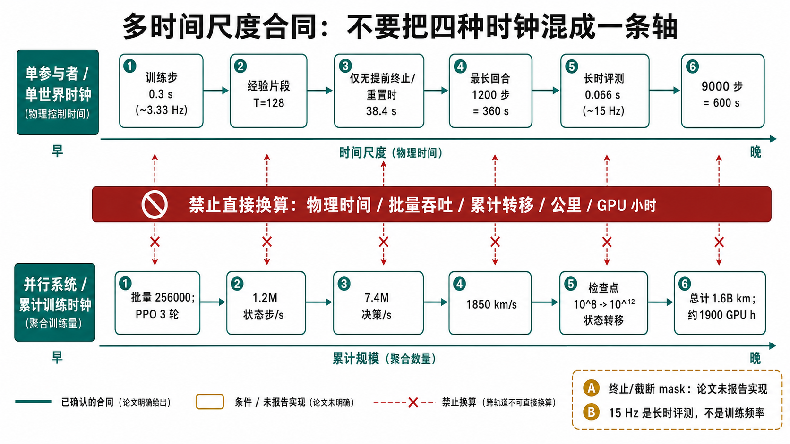
0.3 s、128 步、状态步/秒、决策/秒、公里/秒、累计状态转移、总公里和 GPU 小时不能直接互换。15 Hz 只属于长时评测，终止/截断门的真实实现仍未公开。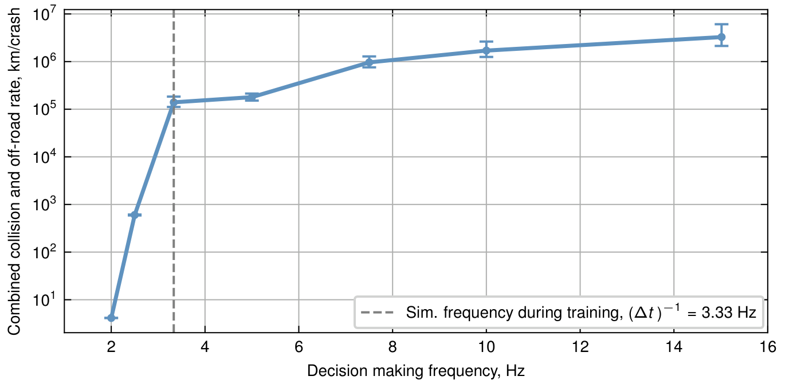
证据。 正文把 15 Hz 中心值概括为约 300 万公里、17.5 年主观驾驶暴露一次碰撞或越界。作者引用美国警方报告约每 829,000 车公里一次事故，以及旧金山网约车等窄域约每 24,800 公里一次作为背景。图 A4 清楚证明事件间隔随控制频率跨多个数量级变化，而非策略权重独立固定的常数。
边界。 仿真“事件”是碰撞或越界，人类数据使用不同严重度、漏报和暴露定义，不能做受控人机优劣比较。50 辆车仍来自同一策略族；没有原始感知、天气、施工、硬件故障和开放人类尾部。论文未报告独立运行数、事故总数、右删失处理、置信区间或误差条含义，少量事件可能主导均值。“17.5 年”是里程/时间换算的主观暴露，不是连续墙钟实车运行。高数字还同时依赖去噪、保守条件、包围框膨胀和规范灯控，不能单独归因于策略。
白话解释。 这是一项很强的理想化仿真耐久测试：把策略调到保守模式、让它更频繁决策并清理噪声后，确实很久才出一次事。但同一策略在训练频率下差约 23.5 倍，说明执行频率和测试条件决定了标题数字。它证明“在干净高频配置里很稳”，不是“现实汽车可连续开 17.5 年”。
第 8 章：组件拆解与真正创新点
8.1 全新提出、已有技术改进、直接复用
问题。 论文最容易被标题和规模数字遮蔽的地方，是把“整个系统首次达到的能力”误写成“每个组件都是首次提出”。技术栈同时包含成熟强化学习、常见集合编码、经典路径与车辆模型、针对本系统改造的高吞吐仿真基础设施，以及作者提出的样本筛选办法。真正要回答的是创新落在哪一层、哪些组件有直接因果证据、哪些只是系统运转的工程条件。
机制。 第一层是最能成立的系统级贡献：Gigaflow 把 38,400 个世界、最多 5,760,000 个参与者、共享条件策略、异质奖励与动力学分布、按需观测重建和高吞吐在策略训练闭合为一个可持续迭代系统，最终积累约一万亿状态转移和 16 亿公里。共享策略或领域随机化本身并非新概念，区别在于它们被组织成规模合同：同一套紧凑权重既控制全部普通参与者，又汇聚全部参与者经验；目标、车体、动力学和奖励条件不同且对他车隐藏，避免共享权重必然退化成完全同质车队。
第二层是针对规模合同的方法和工程改进。优势过滤以 GAE 绝对值衡量样本信息量，用批次最大绝对优势的指数移动平均生成阈值，平均丢弃约 80% 低优势转移，使算力集中到明显好于或坏于预期的事件。批量状态推进、道路空间哈希、不规则张量、按需重建、地图元素丢弃、扫掠碰撞、2.5 维高度修正和持续仿真器加固，共同解决几何查询、显存和罕见数值错误随规模放大的问题。可以说作者做了关键系统改造，不能说作者首创了空间哈希或批量仿真。
第三层是直接复用或在成熟技术上的配置选择。PPO、DD-PPO、Adam、余弦学习率、基于群体的训练、GAE、集合深度网络式逐元素编码和最大池化、三层全连接网络、Dijkstra 路线距离、运动学自行车模型、领域随机化，以及 CARLA、nuPlan、Waymax、WOSAC 框架，都不是本文新发明。贡献在于选择适合百万级并行参与者的紧凑版本，并把它们接成能承受万亿级数据的闭环。
公式/算法。 区分创新层级只需两个锚点。系统合同由
表达；公式形式普通，创新在条件、对手分布、统一权重和规模的组合。方法增量由优势过滤表达：
其中 ；删除 的转移后才进行 PPO。它是本文最清楚的方法性增量之一，但没有无偏性或跨任务普适性证明。
证据。 系统规模由 8 张 A100 40 GB GPU、约 1.2M 状态步/秒、7.4M 决策/秒、1,900 GPU 小时、一万亿转移和 16 亿公里直接支撑。优势过滤把吞吐从 0.53M 提到 1.2M 步/秒，并在缩减预算单次曲线中改善 CARLA、自博弈事件间隔和超时率。组合消融中完整系统合计误差 8.1378，无奖励条件输入 11.9473，无奖励随机化 26.2691，后者是最强直接信号；无随机动力学参数 10.5064，无普通动力学噪声 8.3884。这些数字支持异质训练分布和高信息量筛选，空间哈希、特征丢弃、最大池化和演员/评论家分离则主要有结构与吞吐依据。
边界。 工程规模可以是重要研究贡献，却不能自动升级为新理论。论文未公开代码，也没有逐组件吞吐分解、无空间哈希、无按需重建、不同集合编码器或共享/非共享角色策略的统一对照，不能声称每个选择都被证明必要。优势过滤改变更新分布；组合消融单种子、缩减预算、变体定义不全。最稳健的新颖性表述是：异质条件共享自博弈与系统规模合同的集成、优势过滤这一训练改进，以及由此首次展示的能力范围，而不是 PPO、集合池化或空间哈希本身。
白话解释。 它的新意不在重新发明发动机里的每个零件，而在把一套能同时养活几百万个驾驶者的仿真流水线、一套可切换不同车身和性格的小网络，以及只复盘关键时刻的训练办法真正接通。论文最值得认可的是组合第一次把实验推到足以看到复杂协调行为的规模；最需要克制的是不能把组合里的常见零件都写成作者首创。
8.2 读者理解版因果链
问题。 只列“仿真器、策略、奖励、PPO、优势过滤”不能解释能力为何出现，因为这些名词之间有严格的信息与因果顺序。需要知道训练经验怎样生成，对手多样性从哪里来，路线和动作怎样进入策略，规模为何可持续，最后哪些证据把链条闭合。
机制。 第一段因果链在数据生成端。系统从 8 张基础地图及 128 个仿射变体批量创建世界，随机放置 1 至 150 个不同尺寸和动力学的参与者，为每个参与者采样终点与 0 至 3 个中间路点。普通参与者共享当前策略，但目标、奖励偏好和动力学条件不同且对别人隐藏；交通灯随机化、有限邻车观测及少量失明/急刹异常者进一步扩大不确定性。奖励异质性不是“风格皮肤”，而是改变等待、换道、倒车、守灯、冒险和舒适权衡，进而改变他车必须处理的状态分布。
第二段因果链在决策接口。策略接收自车状态、粗车道点、道路边界、停止线、附近参与者、目标与自身条件；Dijkstra 路线距离给出明确导航先验。四类可变集合逐元素编码并最大池化，与普通向量嵌入拼接后进入演员或评论家。演员选择 12 个纵横向加加速度组合，仿真器再积分为加速度、速度、曲率、转角和位移。因此“无专门规划器的长程行为”是前馈策略利用已给路线与远端结构信息学会长期回报导向反应，不是被证明在内部执行显式搜索。
第三段因果链在规模与优化端。道路空间哈希把全图比较缩成局部候选；按需观测重建避免把超过 个元素特征完整存入轨迹缓冲；共享小网络把数百万次独立推理合成大批量前向；优势过滤让大量普通直行样本不进入梯度。更新后的同一策略立即回到全部世界控制下一轮参与者，学习者同时改变自己的数据分布。策略越会避碰、让行和完成路线，伙伴与对手也越强，困难交互才可能持续出现并被解决。
第四段因果链由证据闭合。图 3 显示从 步越线碰撞到 步瓶颈可靠通过，再到 步三股车流协调；图 4 用价值热图、逐参与者删除、行为反事实和 156 米障碍说明网络不是固定轨迹重放。nuPlan、CARLA、Waymax 与 WOSAC 检验同一权重跨接口能力；消融把最强直接因果证据指向奖励异质性和优势过滤。结论来自这些证据共同指向，不是“一万亿步”单个数字。
公式/算法。 整条信息流可写成：随机世界状态 转换为 ，演员按 采样，仿真器执行
计算奖励与价值后，用 GAE 得到 ，删除 的低信息转移，再同步 PPO 更新。新参数重新成为全部普通参与者控制器。输出不仅是新策略，也是一套被新策略改变的下一轮训练分布。
证据。 下表是证据索引，不能替代以上连续解释：
| 问题 | 组件 | 机制作用 | 直接证据 | 主要风险 |
|---|---|---|---|---|
| 困难交互从哪里来 | 随机地图、目标、路点、密度、隐藏条件 | 让拥堵、合流、抢行、等待和绕行在闭环中出现 | 38,400 世界；图 2 | 地图族有限，样本相关 |
| 共享策略为何不完全同质 | 奖励、车体、动力学、灯控和异常行为随机化 | 同权重产生不同风格 | 8.1378 -> 26.2691 |
仍可能形成内部约定 |
| 策略怎样完成路线 | 结构化观测、Dijkstra、集合网络、12 动作 | 把导航与局部互动压成前馈决策 | 图 2/4 | 不含原始感知，池化会丢信息 |
| 万亿训练为何可承受 | GPU 批量、空间哈希、按需重建、小网络 | 降低几何、显存和推理开销 | 1.2M 步/秒、7.4M 决策/秒 | 缺逐组件消融 |
| 普通片段为何不淹没关键事件 | 优势过滤 | 梯度集中到明显好坏尾部 | 0.53M 到 1.2M；图 A2 | 更新有偏、极值敏感 |
| 能力是否发展 | 同策略闭环更新与检查点 | 伙伴/对手共同提高 | 图 3 | 单运行、精选诊断 |
| 能否离开训练界面 | 基准转换器和同一权重 | 迁移到多套结构化闭环接口 | 多基准高分 | 各有适配与口径限制 |
边界。 只有部分箭头经过删除式消融。奖励随机化、条件输入、动力学随机化和优势过滤有直接反事实；空间哈希是否提高最终质量、最大池化是否最佳、共享策略是否比多个独立策略更稳健都没有实验。图 3 不能隔离规模、数据分布、评论家、仿真器加固和筛选的贡献。跨基准证明权重迁移，不证明零工程适配。
白话解释。 作者先在成千上万个城市里不断随机发车、发目的地和发不同性格，让同一套大脑既当学生又当下一轮交通；再用结构化摘要帮助它快速决策，用高速几何和按需重建撑住规模，用优势过滤只复盘真正改变局面的时刻。练得足够久，车群从“别撞”学到“互相腾位置”，换到几套新考卷仍取得高分。论文重要之处是整条闭环被跑通，不是某个常见算法名词单独解释了所有结果。
第 9 章：横向学术定位
9.1 纯自博弈规模路线
问题。 Gigaflow 在纯自博弈路线中真正向前推进了什么？核心不是第一次提出多智能体对练，而是把共享策略自博弈推到一万亿状态转移、16 亿公里和数百万并行参与者，并用奖励条件化与动力学随机化扩大同一策略族的行为分布。横向比较必须同时回答：规模是否带来此前难以获得的闭环协调，以及“无需目标城市人类轨迹”是否被错误扩大成“无需地图、规则或任何人类先验”。
机制。 Gigaflow 先构造结构化地图和交通规则，再让参与者随机获得目标、车体、动力学和奖励条件；普通参与者共享策略，通过彼此造成的新状态持续生成闭环经验。它不需要逐轨迹告诉车“这个路口应怎样开”，复杂交互来自随机发车、路线冲突与共同演化。相较固定奖励自博弈，奖励条件化使同一权重产生谨慎、激进、偏左、偏右、重舒适或重进度等行为，其他车又看不到这些条件。
后续工作把这条路线进一步拆开。BehaviorBench 中的 PufferDrive PPO 同样共享参数控制全场车辆，普通版本使用固定任务奖励，条件化版本扩大行为分布；两者训练到 智能体步，再面对 IDM、SMART、日志专家和条件化 PPO 等异质对手。NOMAD（Learning to Drive in New Cities Without Human Demonstrations）把自博弈当作目标城市适配器：目标城市只提供地图、初始状态、交通密度与目标，不提供逐车专家轨迹，但完整方法从源城市行为克隆策略初始化并用反向 KL 持续锚定；它另设真正从零纯自博弈消融，直接区分任务成功与人类现实感。
公式/算法。 纯自博弈共同闭环可写为共享策略 控制全部参与者，采样联合轨迹 ，再最大化任务回报 。Gigaflow 使用
让不同条件共享参数但不共享偏好。BehaviorBench 普通 PPO 接近固定任务奖励，条件化版本把奖励参数作为输入；NOMAD 的从零消融只依靠到达 +1、碰撞 -0.75、驶离道路 -0.75，正式 NOMAD 另加源策略 KL，不能与从零纯自博弈混写。
证据。 Gigaflow 的直接支持是 图 3 从 到 步形成瓶颈和三股车流协调，以及三个主要基准的同一权重高分。BehaviorBench 提供更强对手压力测试：Interactive1k 中，普通 PPO 面对同类 PPO 交通的过失碰撞率仅 0.5%，换成 IDM、SMART 和日志专家后分别为 4.0%、4.6%、21.2%；训练扩大到 步并未单调关闭差距。NOMAD 从零纯自博弈约 6 亿步可达约 99% 成功率，但现实感仅约 0.65-0.70；加入源城市行为克隆和 KL 后，Boston 到 Singapore 的零样本源策略从现实感 0.6795、成功率 42.25% 提升到前沿 0.7570-0.7697、87.28-94.27%。自博弈是强闭环任务学习器，任务成功却不自动等于人类自然性。
边界。 BehaviorBench 没有运行闭源 GigaFlow 权重，直接反驳的是“固定奖励、同质对手和增加步数本身足以保证跨对手泛化”的更强命题；它明确承认 GigaFlow 的奖励条件化能缩小缺口。NOMAD 正式方法也不是纯自博弈，目标城市无示范仍依赖源城市人类策略、目标地图、限速和交通密度。Gigaflow 同样依赖人工地图语义、路线目标、交通规则和适配器，只是策略训练不使用人类轨迹。
白话解释。 这条路线像先搭好目标城市的道路和规则，再让一大群车自己练，而不是先录当地司机逐帧教学。Gigaflow 证明把练习推到极大规模会长出强协调；后续论文提醒，和同门伙伴练得强不等于换陌生司机仍强，能完成任务也不等于开得像人。
9.2 数据正则/参考模型锚定的自博弈
问题。 如果自博弈擅长闭环交互和长尾覆盖，为什么后续工作仍把人类数据接回训练？任务奖励通常只要求到达、避碰和不出路，未完整编码靠哪侧行驶、合适车距、礼让、舒适和地区习惯。纯任务优化可能找到“能过关但不像人”的投机解。参考锚定路线的目标是在保留闭环试错的同时，限制策略偏离人类规范。
机制。 HR-PPO 用固定人类参考策略约束共享自博弈策略；参考只在训练期提供动作分布，自博弈仍负责多车闭环到达和规避。NOMAD 先用源城市人类轨迹训练行为克隆，再在目标城市由全部车辆自博弈适配，同时用反向 KL 防止为了成功完全丢掉人类运动习惯。SPACeR（Self-Play Anchoring with Centralized Reference Models）更强：中央参考模型看完整场景和联合动作历史，为每个参与者、每个时间步提供已执行动作似然奖励和整分布 KL；部署学生仍是局部观察的共享去中心化小网络。
三者形成先验强度连续谱。HR-PPO 用约 30 分钟示范训练小参考策略；NOMAD 使用源城市行为克隆作为初始化和长期锚点；SPACeR 的中央教师在约 50 万 WOMD 场景上预训练，并利用联合场景信息提供更细粒度信号。共同思想是“实战由学生自己打，场边放一把人类行为标尺”。
公式/算法。 HR-PPO 核心为
其中 是固定人类参考；其 TeX 后续复合式存在符号歧义，只能以文字和最大化式确认惩罚偏离参考。NOMAD 从源策略 初始化，在目标城市任务回报上加反向 KL，跨城市统一 。SPACeR 的即时奖励为
PPO 目标再减
前者评价已执行动作是否像人，后者约束整个动作分布；中央教师仅训练期存在。公式来源可逐项回查：HR-PPO 的问题设定、KL 目标及复合损失在 source/related/2403.19648/tex/main.tex:118-151；NOMAD 的场景生成边界、源策略初始化、共享策略和反向 KL 目标在 source/related/2602.15891/tex/src/methodology.tex:35-94；SPACeR 的动作似然奖励、PPO-KL 目标及闭式 KL 在 source/related/2510.18060/tex/sec/3_method.tex:48-93,144-170。
证据。 HR-PPO 选定主模型把人类相似性的 GC-ADE 从普通 PPO 1.32 降到 0.54；面对日志伙伴时，目标率 72.80% -> 83.75%，碰撞 24.20% -> 10.10%。但较小 50 场景、10 种子附录中，HR-PPO 的目标、越界和碰撞总体均弱于 PPO，说明主表收益不是跨种子定律。NOMAD 的从零自博弈“约 99% 成功但现实感 0.65-0.70”与完整方法形成直接对照。SPACeR 在 WOSAC 由普通 PPO 复合 0.710 提到 0.741，低于 CAT-K 0.766；学生约 6.5 万参数，比 CAT-K 小约 50 倍，吞吐高约 10 倍。锚定消融中，任务奖励独用为复合 0.70、minADE 14.43，加入 KL 后约 0.73/4.08，只加已执行动作似然反而 0.69/21.05，说明整分布 KL 是主贡献。
边界。 这些方法都不是完全无人类数据。HR-PPO 场景、目标和参考来自 WOMD；NOMAD 依赖源城市轨迹及目标城市地图统计；SPACeR 教师数据和成本很大，车辆实验还回放行人/骑行者日志。WOSAC 复合分衡量日志相似，不等于安全；SPACeR 驶离道路率还从 PPO 0.053 略升到 0.056，且只在 WOMD 同域与小比例验证子集评估。三者没有运行 Gigaflow 权重，是机制约束和替代路线，不是头对头推翻。
白话解释。 自博弈像车群不断实战，人类参考像场边教练。车仍自己处理陌生局面，但一旦学出“能过关却很不像人”的动作，教练就拉回来。后续结果说明这条拉回线对自然性和陌生伙伴有用，也意味着完全不用人类数据并非所有目标都能免费实现。
9.3 模仿学习加闭环强化学习
问题。 另一条路线为什么不从零自博弈，而是先学人类行为，再用强化学习修补？模仿直接获得道路规范、自然轨迹和现实状态覆盖；缺点是训练总在专家分布，部署后一次小错误会进入少见状态并累积。闭环强化学习微调针对的是“策略动作改变未来输入”的分布偏移，不是否定人类数据。
机制。 Improving Agent Behaviors with RL Fine-tuning for Autonomous Driving 先用 WOMD 轨迹最大化动作似然，得到联合多车动作模型，随后在模型自身闭环轨迹上用 REINFORCE 更新。奖励既惩罚生成位置偏离人类日志，也显式惩罚碰撞，所以人类轨迹不只用于初始化，还在每个微调时间步提供密集目标。Imitation Is Not Enough 的 BC-SAC 不是简单两阶段，而是在单自车闭环中交替强化学习和行为克隆更新：强化学习处理分布外危险状态，模仿维持自然驾驶、道路惯例和进度。
与 Gigaflow 的共同点是承认固定数据分布不够，策略必须经历自身行为造成的新状态；差异是学习信号。Gigaflow 让多车共享策略在任务奖励下从零生成行为，模仿加强化学习把真实轨迹作为强初始化甚至持续监督，再把强化学习用于修碰撞、越界和恢复。它用更高数据成本换更直接的人类规范锚点。
公式/算法。 RL 微调每车奖励为
完整时域自回归采样后计算折扣回报，以无价值基线 REINFORCE 更新。BC-SAC 目标为
实现中每 8 次强化学习更新插入 1 次模仿更新。前一条路线的两阶段训练、位置/碰撞奖励、自回归滚动、折扣回报与 REINFORCE 目标见 source/related/2409.18343/tex/main.tex:438-506,525-592；BC-SAC 的 MDP、行为克隆与 SAC 背景、混合目标和演员更新见 source/related/2212.11419/tex/root.tex:335-393,425-478。前者微调持续依赖日志真值，后者使用超过 10 万英里示范和困难场景人类标签，均不属于纯自博弈。
证据。 RL 微调论文的 1M 模型 WOSAC 复合 0.490 -> 0.597，碰撞 0.544 -> 0.863，越界 0.525 -> 0.804，ADE 6.332 -> 2.436；10M 模型复合 0.549 -> 0.608。无行为预训练的 RL-only 仅复合 0.320、碰撞 0.239、越界 0.164、ADE 7.785，说明该设置中强化学习不能替代人类预训练。BC-SAC 在最难 Top1 测试失败率 2.59±0.31%，优于 BC 5.79±0.82%、MGAIL 4.21±0.95% 和 SAC 4.33±0.47%；但无偏 All 测试中 MGAIL 失败 2.45%、进度 96.57%，优于 BC-SAC 2.81%、87.63%，收益集中于困难长尾。
边界。 RL 微调的碰撞/越界数字是 WOSAC 相似度，不是事故率；它使用 486,000 个训练场景并在微调持续读取真值。BC-SAC 只控制自车，其他参与者非反应日志回放，片段仅 10 秒，困难度模型依赖额外人类标签。两条路线都没解决开放道路感知、真实反应人群和长期部署，也不能因数据成本高就被 Gigaflow 宣告过时。它们反而证明人类预训练和闭环强化学习可以互补。
白话解释。 这像先跟老司机学基本习惯，再进闭环考场专练“自己犯错以后怎么办”。只模仿会在长尾出问题，只做强化学习又可能学不会像人；结合后在困难场景往往更稳。
9.4 BehaviorBench 对纯自博弈的直接质疑
问题。 标准规划基准是否太容易，同一种合作式交通是否掩盖策略对训练伙伴的过拟合？若对手始终可预测，低碰撞只能说明策略适应这一套互动习惯，不能说明换成日志人类、SMART 或不同谨慎程度后仍稳健。
机制。 BehaviorBench 把 PufferDrive 接入 nuPlan/interPlan 和 WOMD，构造更强互动的 Interactive1k 与较简单的 Random1k，让同一自车面对 IDM、同类 PPO、SMART、日志专家，以及激进、普通、谨慎和混合条件化 PPO 交通。普通 PPO 共享参数控制车群，简单奖励只含到达、碰撞和驶离道路；复杂版本增加舒适、方向、居中、速度、倒车和时间塑形。评测先要求无过失碰撞、未出路且到达，再计算舒适、方向和居中，区分任务成功与行为质量。
论文还提出规则规划器与 PPO 混合：PDM 先生成 15 条 IDM 候选；若全部无效，再选 PPO 概率最高的 8 个动作，各自滚动 1 秒并按完整分数选择。这不是证明自博弈无用，而是显示规则保守性和学习互动能力可互补。
公式/算法。 成功门可写为
任一失败，总分为零；成功后，舒适、车道朝向和居中权重为 0.2/0.5/0.3。这里的“成功门”是本报告依据 BehaviorBench 评分定义作出的等价归纳，不是论文另行命名的新算法；原评分乘法式、三项门条件和权重见 source/related/2605.10034/tex/sec/method.tex:22-33。训练对照的关键不是新 PPO 公式，而是在相同步数改变奖励复杂度和评测对手，检查跨对手差距是否随规模闭合。
证据。 Val14 上规则 PDM 92.13，高于 DiffusionPlanner 82.80 和纯 PPO 67.24；高互动 interPlan 上 PPO 42.10 略高于 PDM 41.68，混合为 43.24。Interactive1k 中 PPO 面对同类交通过失碰撞 0.5%，面对 IDM、SMART、日志专家为 4.0%/4.6%/21.2%，约为 8、9.2、42.4 倍；面对激进、普通、谨慎、混合条件交通为 0.9%/3.4%/5.9%/3.1%。Random1k 差距缩为 0.3%/1.4%/1.7%/9.5%，说明互动密度放大分布偏移。
简单和复杂奖励 PPO 都训练到 步；面对自身交通碰撞持续很低，面对 IDM 差距未单调消失，说明只加步数不足。普通 PPO 的 WOSAC 综合/运动学/互动/地图为 0.64/0.18/0.72/0.79，低于 SMART 0.74/0.37/0.82/0.84；奖励条件化 PPO 提升到约 0.65-0.68，仍未追平。混合 PDM+PPO 在 Interactive1k 八类交通中七类超过纯 PPO，在 Random1k 八类全部超过。
边界。 最关键事实是 BehaviorBench 没有运行 GigaFlow 闭源权重，不能写成“新基准直接复现并推翻 GigaFlow”。它直接测试固定奖励、同质对手和 PufferDrive 风格大规模 PPO，反驳的是“同分布成绩和训练步数本身足以保证跨对手泛化”。论文还明确点名 GigaFlow 奖励条件化可缩小缺口，只是把问题转为条件分布设计。两者网络、动作、地图、奖励和规模不同，结论不能无条件倒灌。
BehaviorBench 自身也非现实终局：无交通灯和停止标志、假设完全可观测；条件化交通偶尔左转失败或走错车道；日志专家非反应；混合规划器依赖恒速预测，密集长滚动可能保守。它是更严格的行为泛化压力测试，不是道路安全证明。
白话解释。 和同一种陪练练到几乎不撞，不代表换一群脾气不同的司机仍不撞。BehaviorBench 换陪练后发现固定奖励 PPO 明显下降；但它没有拿 Gigaflow 本体比赛，而且承认奖励条件化正是缓解办法。准确结论是“规模不是充分条件”，不是“Gigaflow 已被直接推翻”。
9.5 共识、争议与论文位置
问题。 六篇相关论文放在一起，哪些判断形成共识，哪些仍是路线选择？任务成功、闭环安全、轨迹自然、跨伙伴、跨城市和推理吞吐不是同一指标，不能按某一复合分排成绝对优劣。
机制。 第一项共识是闭环经验重要。BehaviorBench 中 PPO 在 interPlan 展示规则方法缺少的互动能力；NOMAD 通过目标城市自博弈把成功从约 42% 提到 87-94%；HR-PPO、RL 微调和 BC-SAC 都显示只在专家分布模仿会遇到闭环偏移。分歧不在要不要闭环，而在从什么策略出发、用什么信号约束。
第二项共识是任务成功与人类兼容不同。NOMAD 从零自博弈近 99% 成功却只有 0.65-0.70 现实感；SPACeR 任务奖励独用 minADE 14.43，加 KL 后约 4.08；HR-PPO 在日志伙伴下减少碰撞；BehaviorBench 说明同类伙伴低碰撞不能外推异质伙伴。Gigaflow 奖励条件化优于固定奖励，因为主动制造偏好多样性，但没有证明条件分布等于人类分布。
第三项共识是地图、场景和接口先验仍重要。Gigaflow 不用人类轨迹训练，却用结构化地图、Dijkstra、目标和规则；NOMAD 不用目标城市示范，却需目标地图和统计；锚定路线还需不同规模人类轨迹。争议不是“数据或自博弈”二选一，而是怎样分配数据成本、规范约束、闭环探索和目标域适配。
H、闭环内生程度 L、训练/评测伙伴和部署结构定位路线，而不是把不可比总分排冠军。Gigaflow 位于无轨迹锚定、全车共享策略共同演化的一类，但仍有人工地图、目标、奖励和接口先验；BehaviorBench 是异质伙伴评测探针，PDM+PPO 是推理期混合结构，不应伪装成同一训练坐标里的普通方法点。公式/算法。 可用定位概念式表示连续谱：
Gigaflow 的策略训练令 ，靠奖励条件和规模扩大覆盖；HR-PPO、NOMAD、SPACeR 用 KL 或似然令其大于零；模仿加强化学习从人类策略出发再做闭环优化。它只是定位工具，不是各论文共同原式。
证据。 支持 Gigaflow 的证据是：PPO 在高互动场景能超过保守规则；NOMAD 证明自博弈是强跨城市适配器；HR-PPO、RL 微调、BC-SAC 证明闭环能修复模仿偏移；SPACeR 说明人类教师可只在训练期工作并留下小型学生。限制过强外推的证据是：固定奖励 PPO 在异质对手下崩坏且规模不能自动补救；NOMAD 纯自博弈现实感落后 BC/KL；SPACeR 的 KL 是自然性主贡献；RL-only 远弱于预训练加 RL；BC-SAC 在无偏总体分布不全面胜过模仿。没有一篇直接运行 GigaFlow 权重。
| 研究命题 | 当前共识 | 争议或缺口 | Gigaflow 的位置 |
|---|---|---|---|
| 闭环互动是否重要 | 重要，能修复偏移并学习协商 | 需要多大规模、何种更新 | 把闭环经验规模推到极端 |
| 人类数据是否必需 | 任务成功未必需要 | 自然性、地区规范、开放对手能否全靠奖励条件 | 展示零人类轨迹的强任务能力，未终结争议 |
| 规模是否自动带来泛化 | 能带来新能力 | 固定奖励同质对手下不自动跨伙伴 | 同时使用规模与奖励异质性 |
| 规则与学习是否互斥 | 不互斥，混合可互补 | 怎样稳定切换 | 走统一策略路线，缺同预算混合对照 |
| 人类相似是否等于安全 | 不等于 | 怎样同时评估任务、安全和规范 | WOSAC 仅部分自然性；长时仅理想化安全 |
边界。 环境、动作、可观测性、数据量、参与者控制和评分差异巨大，不能把复合分、碰撞率和成功率排成统一榜。HR-PPO 早于 Gigaflow 且规模小；BehaviorBench 与 SPACeR 虽点名也无头对头；NOMAD、SPACeR 人类先验强度不同；BC-SAC 还是单自车非反应伙伴。横向定位只能说明机制支持和强命题限制，不能替代目标论文实验。
白话解释。 目前形成的是路线图，不是唯一冠军：自博弈擅长实战和长尾，人类数据擅长告诉策略怎样像人、守当地规矩，规则规划擅长保守底线。Gigaflow 是把纯自博弈规模路线推到极致的系统里程碑，证明这条路能走很远；后续工作说明它不是终点，开放对手、人类规范和现实部署仍需专门证据或新的组合。
第 10 章：系统性反驳与反驳后的净判断
10.1 规模、因果与训练分布相关性
问题。 图 3 从 到 状态转移持续提高，是否足以证明“规模本身单独导致能力涌现”？标题容易让人联想到计算量触发的普遍相变，但论文展示的是同一次训练的若干检查点。步数增加时，策略、评论家、对手、状态分布、优势阈值、仿真器加固和可遇到的困难事件都同时变化。
机制。 自博弈规模不是静态数据集多看几遍。更新后的策略重新控制全部普通参与者，检查点面对的交通由自己和同权重伙伴共同生成。早期策略制造低级碰撞，后期能完成更多路线并进入合流、僵局和远程绕行；评论家更准，优势过滤保留的尾部类型也变。同时团队持续修复地图裂缝和碰撞判定。所谓“练得更多”同时意味着数据分布、伙伴、价值估计和仿真器质量改变。
公式/算法。 直接支持的是检查点序列
与闭环更新
经验缓冲依赖当前策略，所以 增长不只是数量变化。论文没有拟合规模律、临界指数或相变模型，也没有固定数据分布只加更新、固定算力只改奖励异质性的正交实验。
证据。 瓶颈从 越线碰撞，到 局部换道和不稳定合流，再到 展示滚动可靠通过；三股车流在 协调。图 1b 把超过既有方法和平台期放在数亿至十余亿公里。另一方面，图 A2 显示优势过滤同时改变墙钟收敛和最终表现，图 A3 显示完整 8.1378 与无奖励随机化 26.2691 差异巨大，证明配置会显著改变结果。
边界。 图 3 单训练、少数人工场景，基准示例选择规则不明；无多种子、等算力、等独立数据或不同生成器重复。大量转移来自有限地图和同一策略族，样本相关。稳健结论是“在这套系统中复杂能力随经验和共同演化逐步出现”，不是“任意系统达到相同步数必然出现同样能力”。
白话解释。 这套车群练得越久越会协调是真的，但横轴向右时，陪练、题目难度、评分能力和仿真器也都在变。它像一支球队随赛季共同成长，不能只看训练小时就断言任何球队练同样久都会达到同一水平。
10.2 仿真、感知与物理现实差距
问题。 结构化状态仿真中的优异策略能否直接外推到真实传感器、车辆和开放道路？论文主要研究规划互动，感知、定位、地图、执行器和碰撞物理被抽象。若不拆开，会把“真实日志衍生场景”误作“真实道路闭环”。
机制。 输入是整理好的自车状态、车道与边界、停止线、邻车真值、目标和条件；Dijkstra 路线距离提供导航先验。最近 20 个参与者截断没有真实遮挡、置信度、身份切换和延迟。道路以二维四边形为主，立交用 2.5 维修正；车辆用简化运动学自行车模型；碰撞只检测，不模拟冲量和事故后物理。
nuPlan、Waymax、WOSAC 确实引入真实地图、日志初始状态和自动标注噪声，但后续交通由 IDM、日志跟随、规则行人或策略自身控制。各基准还有观测转换和目标包装器。它们检验抽象状态决策器对地图与标注域差异的适应，不是相机、雷达、定位、规划、控制全链路可靠性。
公式/算法。 输入合同
已经划定边界： 必须在决策前可靠构造。动力学把动作转为
再经速度、曲率和转角限幅得到位移；没有轮胎力、附着、迟滞、制动衰减和硬件故障。TeX 的 还存在坐标或排版疑点，不能静默修正。
证据。 结构化接口跨域有真实支持：nuPlan 93.8±0.11，Waymax 44,097 场景碰撞/越界均 0.43%，WOSAC 0.6190，图 4 的 156 米障碍绕行。作者讨论同时承认完全在仿真中、感知被大幅抽象，未来需结合传感器仿真、真实日志强化学习或模仿学习。
边界。 没有雨雪、夜间、眩光、点云稀疏、遮挡漏检、地图错误、定位漂移、计算抖动、路面变化、执行器故障、事故严重度或最小风险停车。CARLA 与训练共享域；nuPlan/Waymax 自动标注仍是结构化对象。长时评测还移除噪声、扩大包围框并提频，更不能替代现实感知和物理鲁棒性。
白话解释。 论文证明的是：若系统准确告诉策略道路、邻车和目的地，它很会决定下一步。现实汽车还要先从噪声相机和雷达可靠得到这些信息，再让真实轮胎、制动和转向执行；这整层没有被本文解决。
10.3 指标、公式与比较公平性
问题。 nuPlan、CARLA、Waymax、WOSAC 和长时评测是否使用同一把尺子，公式与表格是否自洽，方法是否处于同一划分和版本？大多数字可复核，但几个醒目聚合值含自定义口径、公式矛盾或环境适配。只抄总分会把“结果强”升级成“比较完全公平且统计确定”。
机制。 Waymax 无公开路线时作者自定进度、总距离和成功率；CARLA 图 1 对三套不同路线 DS 未加权平均；WOSAC 中作者策略在验证集、星号基线在测试集，并使用目标筛选、规则行人和按指标选择的噪声；长时结果通过去噪、保守条件、包围框膨胀和提频改变训练配置。每项可能合理，但必须与结果绑定。
公式/算法。 Waymax TeX 使用交集
表格算术使用并集
否则两项均 0.43% 时总分至少 99.57%，不可能是 99.16。CARLA 94.7=(93+99+92)/3。长时 15 Hz 与 3.33 Hz 比值
证据。 Waymax 原始分项是碰撞/越界 0.43%/0.43%、路线进度 146.27%、总距离 106.79%、ADE 5.87 m、总分 99.16，比专家上界只高 0.09。CARLA 三套总分最高，但若干违规不全优。WOSAC 0.6190 低于五个表列方法、混用划分， 按分数选。长时 15 Hz 327.5 万公里/事件，训练频率仅 13.96 万，且配置更干净保守。
边界。 审计不否定原始分项：Waymax 低事件、CARLA 长路线强、WOSAC 有部分相容、长时配置耐久。问题是小领先、自定义尺子、不同划分和包装器不能被称为“统计显著、同口径全面超过”。Waymax 公式错误还使实现无法仅凭 TeX 完整复现；三个主基准完整奖励条件未报告。
白话解释。 高分大多是真的，但有些尺子是作者组装的：Waymax 公式把“或”写成“且”，CARLA 94.7 是简单平均，WOSAC 混用验证和测试。正确做法不是否定结果，而是先检查尺子刻度，再判断领先多大、能外推多远。
10.4 统计稳定性与事故归因
问题。 当事故很少时，少数事件、地图错误、初始化异常和责任分类会显著改变平均数。论文有多个带 ± 的高分、逐例事故审查和 300 万公里的醒目数字，但运行次数、误差条、事故数、删失处理和独立审阅并不完整。必须区分事件数量、责任解释与统计结论。
机制。 CARLA 明确只 3 次且部分基线方差大；nuPlan/Waymax 的 ± 不说明标准差还是标准误，也无重复次数。WOSAC、条件互信息、优势过滤、组合消融和机制探针多为单分数、单曲线或精选示例。作者观看 CARLA 违规、nuPlan 15 个碰撞和 Waymax 187 个碰撞，把事件归为初始化/标注、非反应参与者、IDM 异常或自车责任。这有助找伪失败，但无预定义可避免判据、盲法、第二审阅者一致性或替代动作重放。
长时测试还涉及右删失：若并行回合结束前无事故，只用总里程除事故数而不报独立运行、事件数和删失，均值可能被少数超长回合主导。图 A4 有误差条，却未说明构造，不能自行称置信区间。
公式/算法。 nuPlan 场景碰撞比例为
作者分类为 9 起无效初始化或传感器噪声、4 起非反应行人、2 起其他车闯灯。Waymax 为
与 0.43% 一致；55.6% 约 104 起归因异常 IDM，41.7% 约 78 起初始已碰撞，2.7% 即 5 起认为自车至少部分有责。CARLA 只给 20% 突然行人/骑行者、33% 僵局、16% 模糊信号检查，合计 69%，无总数和互斥说明。
证据。 原始数量支持短时结构化仿真碰撞低：Waymax 44,097 场仅 187 个碰撞，作者只明确认定 5 个可避免；nuPlan 1,118 场有 15 个碰撞；CARLA 三套总分高。反面是 CARLA 仅三次、误差定义未知、WOSAC 无方差且混划分、消融无多种子、责任单方分类、长时无运行数/事故数/删失。全文没有配对检验、效应置信区间或多重比较控制。
边界。 可以写“作者认为多数事故由基准限制导致”，不能写“所有剩余事故都与策略无关”。初始化重叠接近不可避免；行人或 IDM 违规未必完全不可规避，更早减速或改路线可能改变。事故也未按速度、严重度、弱势参与者、近失或急刹分层。应使用“表中最高”“观察到低碰撞”“按作者分类”，避免“统计显著优于”“达到安全天花板”。
白话解释。 几万场只出几百次事故很强，但事故越少，每一次怎样分类越重要。作者逐个看视频是负责的工程做法，却像球队自己当裁判；没有独立复核、置信区间和严重度前，不能把“多数像考题问题”写成“策略已经无责任”。
10.5 同策略车群、条件安全与开放世界
问题。 所有普通参与者共享同一策略，是否足以代表独立人类？奖励条件化让同一网络有不同风格，但共享权重仍有共同能力边界和归纳偏置，长期共同训练也可能形成内部约定。另一个问题是部署条件由谁选、能否锁在安全范围。图 4 直接显示降低红灯敏感度会使策略更愿闯灯，可控风格同时是配置风险。
机制。 第 个参与者为
不同且对他车隐藏，但共享 。隐藏条件、目标、车体、动力学和异常参与者使行为不完全一致；共享参数则可能让未见状态错误相关，也可能默认同族伙伴会让行或不会做某类极端违规。
奖励范围扩大安全面：碰撞/越界基础惩罚可接近零到 3，停止线 0 到 1，舒适和车道权重也宽。训练需要激进样本制造多样性，但部署若错误或恶意配置，就会降低守法和保守程度。论文没有条件选择器、安全投影、运行时约束或最小风险状态。
公式/算法。 联合分布是“共享参数、独立条件、状态耦合”：
但各 又通过共同世界相互影响，动作并不独立。无奖励随机化收窄条件分布；无奖励条件输入则改变策略可见信息，具体固定值未完整报告。
证据。 图 A1 和图 4e/f 显示奖励与车体改变换道、掉头、绕障和守灯；图 A3 则给出删除奖励随机化或奖励条件输入后的组合消融。无奖励随机化 26.2691 远差于完整 8.1378；无奖励条件输入 11.9473，说明训练分布异质性比单纯多一个旋钮更关键。BehaviorBench 普通 PPO 在同类伙伴碰撞 0.5%，换 IDM/SMART/日志专家为 4.0/4.6/21.2%，证明同族成绩不能自动外推。NOMAD 五个独立种子全 5×5 配对无明显对角线优势，说明不同种子未形成明显私有约定，但仍不是任意人类分布。
边界。 未系统测试警车、施工人员、手势、临时改道、错误地图、异形车辆、极端违规、对抗驾驶、地区文化和硬件故障。长时 50 车仍同策略族且保守条件；异常者只有失明和急刹。BehaviorBench 不能直接判定 Gigaflow 权重同样崩坏，却足以阻止把同族低事故写成开放对手泛化。部署还需锁定条件、监测异常并定义最小风险动作，本文未给。
白话解释。 每辆车目的地和性格不同，但毕竟是同一学校、同一教材训练的同门。和同门配合好，仍可能没见过真正陌生、违规或对抗司机；训练允许的莽撞性格也不能开放给部署车，安全旋钮必须被系统锁住。
10.6 反驳后的净判断
问题。 经规模因果、现实差距、指标、统计和开放对手五组反驳后，论文是否仍有实质贡献？答案不能是“有局限所以一切无效”，也不能是“高分覆盖局限”。需要按仍成立、需更多证据、特定条件成立、尚未解决四类收束。
机制。 “仍成立”的核心是系统可行性：论文把结构化状态多智能体自博弈推到一万亿转移和 16 亿公里，在同一条件策略中观察到避碰、多车协调、远端绕行和可控行为；同一权重在三个主要接口取得表列最高总分，WOSAC 有部分人类统计相容；奖励异质性消融和优势过滤曲线提供机制证据。
“需更多证据”包括规模独立因果、伙伴外泛化、统计稳定和多数组件必要性。图 3 单运行，A2/A3 无多种子；共享策略、空间哈希、按需重建、最大池化和演员/评论家分离无统一消融。BehaviorBench 提示固定奖励跨对手风险，却未测 Gigaflow。
“特定条件成立”包括几个醒目数字：零样本是权重未微调；Waymax 99.16 在补丁、日志目标和自定义并集分数下；CARLA 94.7 是简单平均；WOSAC 0.6190 在验证集包装器下且低于五个方法；327.5 万公里/事件只在去噪、15 Hz、50 车、保守奖励、默认灯和包围框膨胀下，训练频率仅 13.96 万。
“尚未解决”包括原始感知、真实物理、开放参与者、人类规范充分性、长期事故严重度、条件安全、部署监督和故障恢复。作者也承认感知/物理被抽象，未来可能结合真实数据；这是一整层系统，不是小注脚。
公式/算法。 四个数字锚点为
它们分别支撑规模、异质奖励、优势过滤和条件化长时鲁棒性，任何一个都不能单独推出实车安全。
证据。 下表不是用分类标签替代论证，而是把前文已经逐项展开的原始证据重新对齐到结论强度。图 3/4 和三套主要基准直接支持“这套系统在结构化闭环中形成广泛能力”；图 A3 的 8.1378 对 26.2691 是奖励异质性最强的删除式反事实；图 A2 与 0.53M -> 1.2M 支持优势过滤的墙钟收益。相反，规模单独导致相变、对独立人类伙伴同样稳健以及实车安全，都缺少范围相称的实验，因此只能放在“需更多证据”或“未解决”，不能因其他列有强证据而被连带升级。
| 判断类别 | 可保留结论 | 最直接证据 | 必须限定 |
|---|---|---|---|
| 仍成立 | 大规模异质自博弈产生广泛闭环能力 | 图 3/4、三基准、1T | 结构化状态、有限地图、同策略群体 |
| 仍成立 | 奖励分布异质性是核心机制 | 8.1378 对 26.2691 |
单种子、缩减预算、异质合计指标 |
| 仍成立 | 优势过滤提高墙钟吞吐并伴随质量改善 | 2.3 倍、图 A2 | 更新有偏、无多种子 |
| 需更多证据 | 规模单独造成普遍相变 | 同一运行检查点 | 无等算力反事实和规模律 |
| 需更多证据 | 对独立人类伙伴同样稳健 | 隐藏条件、异常者 | 未测目标权重，后续提示风险 |
| 特定条件有效 | 同权重跨基准高分 | 93.8/94.7/99.16 |
包装器、口径和统计限制 |
| 特定条件有效 | 约 300 万公里一次事件 | 图 A4 15 Hz | 去噪、保守、高频、误差定义未知 |
| 未解决 | 实车感知与物理安全 | 无直接证据 | 日志衍生仿真不能替代 |
边界。 最关键未闭合查询包括：Gigaflow 在异质人类或独立策略伙伴下的曲线；多种子等算力后技能阶梯是否重现；Waymax 实现成功公式；三个基准完整奖励条件；15 Hz 长时独立运行和事故数；加入现实感知误差后退化多少。这些会改变主张强度，不能用泛泛“未来工作”掩盖。
白话解释。 反驳后最强结论仍清楚：论文证明了一套此前没有跑到这种规模的自博弈系统，能在理想化闭环里练出很强、很广的驾驶决策能力。需要降级的是“规模必然产生通用智能”“同门车群等于真实人类”“仿真低事故等于现实安全”。它是系统可行性的强证据，不是现实自动驾驶已解决的证明。
从“证据不足”到可执行验证：六组新增实验蓝图
以下内容全部是 [新增实验蓝图]，不是目标论文已经报告的实验。每组实验先写操纵变量，再写冻结变量和通过判据；不得在结果出来前把设计意图写成论文证据。
全局冻结账本。 除某一实验明确操纵的变量外，至少冻结：策略权重/初始化协议、网络与动作空间、观测字段、地图与场景划分、目标构造、奖励条件、车辆动力学范围、仿真器与补丁版本、控制器延迟、训练/评测预算、检查点选择规则、事件定义、严重度规则、统计脚本和随机数记录。所有主指标、非劣界、最小效应、停止规则和排除规则在运行前预注册。
实验一：跨伙伴泛化
- 待检命题： 同策略群体中的低碰撞与协调能否迁移到独立伙伴分布。
- 设计： 冻结一个自车权重，在相同场景种子上分别面对同检查点伙伴、不同训练种子伙伴、早期/晚期检查点混合伙伴、IDM/规则伙伴及预注册异常伙伴。使用“伙伴来源 × 奖励条件 × 交通密度”因子设计，逐场配对。
- 冻结变量： 自车权重、场景、目标、观测、控制频率、评测时长、交通密度分层、事件归因规则和总暴露量；只改变伙伴来源及预先声明的伙伴条件。
- 报告指标： 到达率、过失碰撞、越界、进度、舒适、近失、伙伴类别分层效应及最坏组表现。
- 通过判据： 所有预注册伙伴组的主要安全/任务指标均落在事前设定的非劣界内，且最坏组置信下界仍满足门槛；不能只用平均值掩盖某一伙伴族崩溃。
- 可证伪结果： 同伙伴表现强而独立种子或规则伙伴出现稳定大幅退化，说明现有低事故依赖同族协调。
实验二：多随机种子复现
- 待检命题： 技能阶梯、奖励异质性和优势过滤效应是否超出单次训练偶然性。
- 设计： 至少五个完整训练种子；对完整系统、无奖励随机化、无奖励条件输入和无优势过滤使用配对初始化/场景流。按预注册的对数检查点运行固定诊断套件和三基准评测。
- 冻结变量： 训练代码、硬件类型、总环境交互数、更新次数、地图生成器、超参数、评测场景、检查点时刻和指标聚合；只改变随机种子和指定消融。
- 报告指标： 种子级原始分数、效应量、置信区间、技能首次达到门槛的检查点、失败种子和学习曲线面积。
- 通过判据： 关键效应在多数种子方向一致，配对效应区间越过预注册最小效应门槛，且没有由单一异常种子驱动；技能门槛的出现区间可重复而非只展示最佳运行。
- 可证伪结果： 效应方向频繁反转、区间包含无效区或技能只在少数种子出现，则单曲线结论必须降级。
实验三：结构化感知噪声压力测试
- 待检命题： 结构化状态策略能否容忍现实感知链中常见但论文未覆盖的误差。
- 设计： 在干净结构化输入上逐级加入位置/速度高斯误差、漏检、延迟、身份切换、尺寸偏差、交通灯翻转、地图偏移；先单因素扫描，再测试少量预注册组合。噪声强度用独立感知数据或工程规格确定，不按最终分数回调。
- 冻结变量： 策略权重、场景、目标、伙伴、控制频率、动力学、奖励条件、噪声随机种子配对和评测预算；只改变噪声类型与强度。
- 报告指标： 任务分、碰撞/越界、近失、急刹、退化斜率、失效阈值和错误类型归因。
- 通过判据： 在预注册“目标工作区间”内表现平滑退化且安全约束不越界；小幅误差不能触发无预警断崖，组合噪声的最坏组必须单独通过。
- 可证伪结果： 轻度延迟、漏检或地图/灯控错误即造成显著安全崩溃，说明现有跨日志结果只支持低噪声结构化状态泛化。
实验四：规模的独立因果效应
- 待检命题： 复杂技能提升是否由独立交互规模本身驱动，而非奖励、伙伴、优化器或仿真器同步变化。
- 设计： 设置至少四个对数间隔的环境交互预算；全程冻结生成器、奖励、网络、优化器、过滤规则和仿真器版本。再加计算匹配对照：相同学习器更新数下改变独立交互量，或用重放使样本复用率不同，以区分“更多独立状态”与“更多梯度计算”。
- 冻结变量： 除环境交互规模/样本复用率外的全部训练合同；诊断场景、种子、评测次数和检查点选择必须预注册，训练期间不继续修仿真器。
- 报告指标： 固定诊断成功率、三基准原始分项、样本效率、墙钟、GPU 小时和每个种子的技能门槛。
- 通过判据： 在多种子、固定合同下，能力随独立交互量呈可重复的单调或明确剂量反应；控制更新次数/算力后效应仍超过预注册门槛。
- 可证伪结果： 控制配置和独立样本量后规模效应消失，或能力由某次仿真修复/奖励改变才跃升，则不能称“规模单独导致”。
实验五：控制频率因果扫描
- 待检命题： 长时事件间隔对控制频率的巨大变化是否可重复，且是否来自频率而非同时改变的安全配置。
- 设计： 使用同一权重和完全相同的长时评测配置，在
2/2.5/3.33/5/7.5/10/15 Hz上逐场配对；动作保持、插值、延迟和动力学积分语义预先固定。另做“仅改频率”和“频率加安全配置”二乘二对照。 - 冻结变量： 地图、车辆数、奖励条件、噪声、包围框膨胀、交通灯、邻车上限、初始间隙、运行时长和事件定义；主实验只改变频率。
- 报告指标： 总暴露、事件数、公里/事件、时间/事件、碰撞与越界分开统计、严重度、近失及频率比值区间。
- 通过判据： 配对统计确认频率主效应越过预注册门槛，并能区分频率与去噪/保守条件的交互；曲线和事件计数均公开，不能只报最高频中心值。
- 可证伪结果： 在严格冻结其他变量后 15 Hz 优势消失，说明原图差异由配置交互或统计波动主导。
实验六：长时事故统计与独立归因
- 待检命题： “公里/事件”能否在透明事件计数、删失处理和独立事故审查下稳定成立。
- 设计： 运行大量相互独立、固定时长或固定里程的长回合；预先定义碰撞、越界、近失、急刹和严重度。保存所有事件前后轨迹，采用双审阅者盲评、分歧仲裁和可行替代动作重放。无事件回合按右删失进入生存分析。
- 冻结变量： 权重、频率、仿真版本、初始化、车辆数、伙伴来源、奖励条件、噪声、事件检测器和审阅手册；不得在看到事故后修改规则再回算同一批数据。
- 报告指标： 独立运行数、总里程/时间、各类事件数、严重度、每公里事件率、公里/事件、零事件上界、生存曲线、置信区间、审阅一致性和责任分层。
- 通过判据： 一侧置信下界超过预注册耐久门槛，且严重事件、近失和最坏场景也满足约束；审阅一致性达到预注册标准，替代动作重放不能系统推翻“不可避免”分类。
- 可证伪结果： 标题中心值由极少事件或少数超长删失回合主导、独立审阅大幅改变责任比例，或严重度指标不通过，则不能用单一平均公里数支持安全天花板叙述。
第 11 章：结论
问题。 读完全文后应带走三层判断。第一层是方法：论文是否真的展示了一个不靠人类驾驶轨迹训练、依靠大规模多智能体自博弈形成通用驾驶决策的系统。第二层是证据：能力随规模出现、跨基准高分、奖励异质性和优势过滤分别得到什么强度支持。第三层是现实边界：这些结果距离原始感知、独立人类伙伴、真实车辆和开放道路安全还缺什么。只保留“16 亿公里”和“17.5 年”会同时丢失技术价值并制造超出证据的部署暗示。
机制。 方法层的核心不是孤立算法，而是一条闭合的数据与训练链。Gigaflow 在 GPU 上同时推进 38,400 个世界、最多 5,760,000 个参与者，从 8 张基础地图及 128 个几何变体随机生成交通、目标和路点。所有普通车辆、骑行者和行人共享同一紧凑策略，却拥有不同车体、动力学和奖励条件；条件与目标对他车隐藏，配合灯控随机化、有限邻车观察和少量异常者，形成持续变化的部分可观测对手分布。
策略接收已结构化的道路、自车、附近参与者、目标与条件，以小型排列不变集合网络压缩信息，从 12 个纵横向加加速度组合选择动作。批量几何、空间哈希、按需重建和共享前向让规模可承受，优势过滤把梯度集中到明显好或坏的尾部事件。更新后的策略重新控制全部普通参与者，既是学习者，也是下一轮数据分布生成器。
证据层说明这条链确实产生超出简单避碰的能力。图 3 中瓶颈从 步越线碰撞，经过 的局部换道和不稳定合流，到 展示滚动可靠通过；三股无信号车流在 协调。图 4 展示价值对高速弯道和相对速度的合理响应、对关键参与者的差异敏感、邻车改变触发机动，以及 156 米远障碍提前绕行。nuPlan 93.8±0.11、CARLA 93/99/92、Waymax 99.16、WOSAC 0.6190 共同说明同一权重在多种结构化闭环接口中具有很强任务完成、协调和低事件能力。
机制证据把“为什么有效”缩小到少数较可信因素。无奖励随机化使合计误差从 8.1378 恶化到 26.2691，远大于去普通动力学噪声的 8.3884；无奖励条件输入为 11.9473。真正关键的是训练车群拥有不同目标权衡和行为偏好，不只是随机运动噪声。优势过滤平均删除约 80% 低绝对优势样本，使吞吐 0.53M -> 1.2M 步/秒，并在单次缩减预算曲线中改善 CARLA、事件间隔和超时率。空间哈希、最大池化、特征丢弃和演员/评论家分离有明确工程作用，却缺逐项同预算消融，不能全部写成已证实必要条件。
现实边界同样明确。策略不看相机或激光雷达，而依赖已完成定位、目标关联、地图构建和邻车估计的结构化输入；Dijkstra 路线距离是强导航先验。仿真主要是二维几何加 2.5 维修正，使用简化自行车模型且只检测、不模拟碰撞响应。nuPlan、Waymax、WOSAC 虽来自真实地图与日志，后续滚动仍由 IDM、规则行人、日志跟随或策略自身驱动。零样本只是权重未按基准微调，每个考场仍有接口、目标或噪声适配。
长时约 327.5 万公里一次碰撞或越界只在去噪、保守奖励、50 车、默认灯控、感知包围框膨胀和 15 Hz 决策下观察；训练频率约 3.33 Hz 时中心值约 13.96 万公里，相差约 23.5 倍。“17.5 年”是条件化模拟暴露换算，不是实车连续部署证明。
公式/算法。 全文可由四个锚点回扣。策略合同是
但附录另列目标 ，显示总式记号不完全。训练规模是约 状态转移和 公里。优势过滤以 删除低绝对 GAE 转移。最强删除式消融是 8.1378 -> 26.2691，最重要长时限定是 139,607 -> 3,275,437 km/事件 的频率差。
动力学 TeX 的 仍有坐标或排版疑点；Waymax TeX 的碰撞/越界交集公式与表格并集算术冲突。这些必须保留，不能为叙事整齐自行修正。
证据。 综合全文可分三层。强证据是系统确实运行到此前少见的规模、同一权重在多个闭环接口高分、奖励随机化删除大幅退化、优势过滤显著提高墙钟吞吐。中等证据是复杂协调随检查点形成、价值和策略探针合理、WOSAC 有部分人类统计相容、15 Hz 保守仿真事件间隔长；这些多依赖单训练、精选场景或专用包装器。弱或不支持的结论是规模单独造成普遍相变、所有剩余事故都与策略无关、同策略车群代表独立人类、WOSAC 等于主观自然性、日志衍生仿真等于实车，以及自博弈已可直接替代真实数据和部署安全系统。
边界。 第一阶段仍有以下不可确定项：
- ICML 2025 模板不能证明正式接收，官方摘要页未给项目页或代码仓库。
- 正文策略公式未显式写目标 ，附录才列出。
- 12 维奖励条件无法由表格唯一还原， 与两个车道分项命名不统一，停止标志缺独立公式。
- 状态与状态转移噪声分布、网络分支细节、完整 PPO 损失、GAE 终止掩码、优势归一化顺序、Adam 参数和 PBT 搜索过程不完整。
- 碰撞后的回合语义、动力学位移疑点、Waymax 实现成功公式仍需官方代码或额外材料核验。
- 三个主要基准的完整奖励条件、nuPlan/Waymax
±的含义、长时独立运行数和事故数未报告。 - 对独立人类或异质策略伙伴、多种子等算力训练、现实感知误差和真实车辆物理的退化曲线未知。
- BehaviorBench、NOMAD、SPACeR、HR-PPO、RL 微调和 BC-SAC 说明跨对手、人类规范和数据锚定仍有争议，但没有一篇直接运行 Gigaflow 闭源权重，不能写成头对头推翻。
本阶段明确不包含第二阶段博客整理，也不包含第三阶段代码分析。因此动力学公式疑点、Waymax 实现口径、奖励条件维度和仿真器细节只能标为待官方代码或额外材料核验，不能用相似仓库或二手解读补位。
白话解释。 这篇论文重要，是因为作者在成千上万个结构化虚拟城市里，让数百万个拿着不同目的地、车身和性格的参与者共享一套小网络；车群每次互动都制造下一轮训练题，系统再用高速几何和样本筛选把算力集中到困难时刻。经验增长到万亿级后，网络不只学会不撞，还学会合流、让行、绕行和按条件切换风格，换到几套新闭环考卷仍高分。这足以证明大规模异质自博弈是强有力的驾驶决策学习路线。
它尚不能直接部署，是因为现实汽车还要从有噪声的传感器获得可靠状态，面对真正陌生的人类和开放世界，遵守被系统锁定的安全条件，并在真实物理与独立统计审计下证明长期风险。最准确结论是：论文把“纯自博弈能否产生强通用驾驶决策”从设想推进成有力的系统证据，但没有把“现实自动驾驶是否已经解决”变成肯定答案。
四十单元主动回忆：闭卷复述、计算、反驳与实验设计
作答时先关闭正文，只写最小充分答案。复述题要求给出因果词而非名词堆叠；计算题必须写算式和单位；反驳题必须同时保留“仍成立的结论”；设计题必须列操纵变量、冻结变量和判定门。题号用于与答案键一一对应。
| 单元 | 题号 | 类型 | 闭卷题 |
|---|---|---|---|
| U01 阅读入口 | Q01 | 主线复述 | 用不超过 120 字复述唯一因果链，并指出论文证据在哪一层停止；至少包含“异质条件、共享策略、优势过滤、对手分布变化、跨基准证据”五个环节。 |
| U02 背景、既有瓶颈与理论矛盾 | Q02 | 机制解释 | 为什么闭环驾驶中的一次小误差会使纯离线模仿遇到分布偏移？请用“动作改变下一状态”解释，而不是只说“数据不够”。 |
| U03 问题设定与显式/隐含主张 | Q03 | 证据分类 | 将“权重未按基准微调”“系统完全零适配”“可在真实道路部署”分别归入论文明确支持、需限定支持或不支持，并说明一个决策步中观测、动作、状态推进和奖励的先后。 |
| U04 POSG 与共享条件策略 | Q04 | 误区纠正 | 为什么共享同一参数既不等于所有车行为相同，也不等于伙伴来自独立人类分布？写出造成行为差异的三个条件和造成相关性的一个来源。 |
| U05 地图、起终点、路点与交通密度 | Q05 | 层级辨析 | 区分基础地图、几何变体、世界实例和连续时间步；为什么一万亿状态转移不能换算成一万亿独立场景？ |
| U06 不确定性、行为多样性与异常驾驶者 | Q06 | 合同辨析 | 区分最近对象截断、输入特征丢弃、异常行为注入和异常轨迹训练排除；哪一种会影响世界但不进入学习样本？ |
| U07 结构化观测与路线先验 | Q07 | 符号与边界 | 定义 W/S/A/G/C 各自承担的信息角色，指出正文总式与附录记号的不一致，并列两个论文未公开、不能自行补写的张量形状或补齐细节。 |
| U08 小型排列不变网络与信息流 | Q08 | 算法检查 | 逐元素编码、有效元素掩码、最大池化和分支拼接的顺序是什么？若补齐位未在池化前屏蔽，会出现什么污染？ |
| U09 十二个动作与车辆动力学 | Q09 | 推演与停止线 | 说明一个离散动作怎样依次改变加速度、速度、曲率、转角、弧长和航向；为什么它不是直接油门/方向盘？在原文 Delta y 疑点处应怎样处理？ |
| U10 批量状态推进与空间哈希 | Q10 | 复杂度解释 | 空间哈希怎样把全局参与者两两比较缩成局部候选和精检？“没有哈希会更慢”属于论文实测、结构推导还是直接质量消融？ |
| U11 按需重建、特征丢弃与吞吐合同 | Q11 | 数据流复述 | 采集经验片段时哪些训练必需量仍需保存，哪些高维观察可在 PPO 更新时重建？为什么“按需重建”不等于缓冲区只存世界状态？ |
| U12 仿真器加固与运行正确性 | Q12 | 审计设计 | 给出“表层成功信号 -> 下层工件查询 -> 最小重放 -> 回归判据”的四步链；为什么万亿步系统尤其需要这种闭环？ |
| U13 九类奖励与条件维度 | Q13 | 奖励账本 | 区分事件型惩罚与逐步塑形的量级和累计方式；解释“九类奖励”、两个车道细分项和“12 维奖励条件不可唯一还原”为什么能同时成立。 |
| U14 奖励、车体、动力学与交通灯随机化 | Q14 | 因果辨析 | 哪些随机量是参与者私有，哪些是世界共享？组合消融中哪一项删除退化最大，为什么仍不能称完全因果分解？ |
| U15 PPO 基础训练与时间边界处理 | Q15 | 时间尺度 | 将 0.3 s 仿真步、128 步经验片段、最长 1200 步训练回合、一次 PPO 更新和训练检查点排成时间梯；真实终止与时间截断在自举上为何不同？ |
| U16 优势过滤算法 | Q16 | 布尔门计算 | 写出批次最大绝对优势、移动平均阈值和保留条件；为什么正优势尾部与负优势尾部都应保留，2.3 倍又不能解释为最终质量倍数？ |
| U17 技能阶梯 | Q17 | 证据强度 | 从检查点行为变化可以稳健说什么，不能说什么？零失败的 1000 次滚动为什么仍不等于真实失败率严格为零？ |
| U18 价值网络、关键参与者与反事实行为 | Q18 | 概念区分 | 区分价值变化、动作分布变化、因果相关性和风险概率校准；为何删除一个参与者的探针不能直接解释为网络“注意力真相”？ |
| U19 可控风格与车体适配 | Q19 | 安全反驳 | 目标、奖励和车体条件怎样改变路线与机动？为什么“可控”不等于“任意条件安全”，部署至少需要什么条件约束？ |
| U20 “零样本”与基准适配 | Q20 | 六层账本 | 对任一基准列出权重、观测转换、目标构造、奖励条件、控制频率、环境补丁六层；哪一层相同才是论文明确证明的“零样本”？ |
| U21 nuPlan | Q21 | 结果审计 | Gigaflow 相对最强总分基线高多少，主要强在哪些分项，又在哪些分项不占优？为什么表中 ± 不能直接支持统计显著性？ |
| U22 CARLA | Q22 | 数值复核 | 用三个 Driving Score 复算 94.7，再列至少两个“总分最高但分项并非全面最好”的例子；该结果属于域内还是跨物理域证据？ |
| U23 Waymax | Q23 | 口径复核 | 在 10,000 场景、碰撞 43、越界 43、重叠 2 的例子中，分别算并集成功率与 TeX 交集成功率，并判断哪一个对应表中总分。 |
| U24 WOSAC | Q24 | 指标反驳 | 为什么 WOSAC 复合分不是安全率也不是人类主观评分？解释 `P(生成碰撞 |
| U25 消融 | Q25 | 因果证据 | 哪个删除式消融最接近论文核心因果证据？给出完整与删除后的精确数值，并列单种子、缩减预算和组合指标三项限制。 |
| U26 长时鲁棒性与控制频率 | Q26 | 条件化复核 | 复算 15 Hz 与训练频率的公里/事件比值，并列出标题数字同时依赖的四个非权重条件；为什么不能与人类事故率直接比优劣？ |
| U27 创新点拆解 | Q27 | 新颖性判断 | 将系统级集成、方法性增量和成熟组件复用各举一例；为什么工程规模贡献可以重要，却不能把每个常见零件都称为首创？ |
| U28 读者理解版因果链 | Q28 | 链路审计 | 从程序化世界到跨基准证据选三条相邻箭头，分别标注“直接消融、结构推导或观察关联”；如何设计最小实验打断其中一条？ |
| U29 纯自博弈规模路线 | Q29 | 学术定位 | 目标论文在纯自博弈路线中真正推进的是哪一层？为什么横向材料关于跨伙伴或自然性的结论只能限制外推，不能自动成为目标论文的直接实验结果？ |
| U30 数据正则/参考模型锚定 | Q30 | 路线比较 | 人类参考锚定试图补哪一个纯任务奖励缺口？用“训练信号、部署是否保留教师、数据成本”三轴比较，但说明这些路线为何不能替代目标论文消融。 |
| U31 模仿学习加闭环强化学习 | Q31 | 共同问题 | 模仿加强化学习与从零自博弈共同承认的闭环问题是什么，学习信号有何根本差异？为何其他路线的结果不能证明目标论文必须或不必使用人类数据？ |
| U32 BehaviorBench 质疑 | Q32 | 反驳边界 | 异质伙伴压力测试可以反驳哪一个过强命题？为什么没有直接运行目标策略权重就不能写成“已复现并推翻目标论文”？ |
| U33 共识、争议与论文位置 | Q33 | 多轴总结 | 分别给出闭环经验、任务成功与人类兼容、地图/接口先验三项共识或争议；为什么不能把不同论文的复合分、碰撞率和成功率排成统一榜？ |
| U34 规模、因果与训练分布相关性 | Q34 | 实验设计 | 设计一个检验“规模单独导致能力”的最小多水平实验：操纵什么、冻结什么、怎样区分更多独立交互与更多梯度计算？ |
| U35 仿真、感知与物理现实差距 | Q35 | 停止线 | 从结构化输入到实车安全列出至少五层尚未验证的链路；nuPlan/Waymax 的自动标注噪声证据为什么只能支持规划器对部分状态噪声的容忍？ |
| U36 指标、公式与比较公平性 | Q36 | 审计工作表 | 为一个总分写出样本单位、方向、聚合、补丁、划分、可复算性和统计缺口七项检查；用 Waymax 或 CARLA 举例说明“高分真实”与“尺子完全公平”不是同一命题。 |
| U37 统计稳定性与事故归因 | Q37 | 统计与审阅 | 写出 nuPlan 和 Waymax 的原始碰撞分数；为何作者逐例观看仍不能把“不可避免”升级成独立事故鉴定？新增复验至少要报告哪些计数和审阅信息？ |
| U38 同策略车群、条件安全与开放世界 | Q38 | 联合分布 | 解释“条件可独立采样、动作经共同世界耦合、参数共享”三者怎样同时成立；给出伙伴来源与奖励条件的交叉实验及失败判据。 |
| U39 反驳后的净判断 | Q39 | 四级归类 | 将结论分成仍成立、需更多证据、特定条件成立、尚未解决四类，并各举一个最能代表论文净判断的例子。 |
| U40 结论 | Q40 | 综合口试 | 给出一句最强安全版本结论，再列最强直接证据、最大边界和三项最优先新增实验；答案不得使用“高分所以可部署”或“有局限所以无效”的二元句式。 |
主动回忆答案键与综合评分量规
答案不是要求逐字复述，而是给出“最小充分内容”。证据位置均指当前 findings.md 的章节；横向定位章节只用于比较研究路线，不能反向充当目标论文的直接实验。
Q01
- 核心答案： 程序化世界为每车采样隐藏目标、奖励与动力学；共享条件策略读取局部结构化观察并选 12 类动作；奖励、价值、GAE 与优势过滤驱动 PPO；更新后的策略重新控制全体普通参与者，改变对手与可达状态分布；能力随共同演化出现，再由技能检查点、跨基准闭环、WOSAC 和耐久评测验证。证据停止在结构化状态仿真决策层。
- 证据位置： 阅读入口、§8.2、§10.6、§11。
- 边界： 没有原始感知、独立人类伙伴、真实车辆物理或道路认证。
- 常见错误： 只列“仿真器、PPO、一万亿步”而不说明策略更新怎样改变下一轮对手分布；或把停止线写成实车安全。
Q02
- 核心答案： 离线模仿在专家访问分布上学习；部署时一次动作误差会改变下一状态，下一观测因此偏离训练分布，策略在少见状态上更易继续出错，错误通过闭环累积。关键不是样本总量，而是动作参与生成未来输入。
- 证据位置： §1.1。
- 边界： 这说明纯离线模仿存在结构性风险，不证明模仿学习无效；闭环微调、数据聚合或恢复数据都可缓解。
- 常见错误： 把分布偏移简化成“训练数据少”，或声称一次小误差必然导致事故。
Q03
- 核心答案： “权重未按基准微调”有直接支持；“系统完全零适配”不成立，因为转换器、目标、频率和补丁可变；“可在真实道路部署”无直接支持。一个决策步是先构造观察/条件，再采样动作，仿真推进到下一状态并产生奖励；价值与优势在轨迹收集后进入 PPO 更新。
- 证据位置： §1.2、§7.1、§11。
- 边界： 目标论文没有公开完整 PPO/GAE 时序细节，不能用常见实现补齐未知部分。
- 常见错误： 把“同权重”扩写成“同接口”，或把奖励误放到动作之前作为本步已知结果。
Q04
- 核心答案： 同一参数在不同局部观察、目标、奖励条件、车体和动力学下产生不同动作分布，所以共享参数不等于行为相同；但参与者共享权重、训练历史和归纳偏置，并在共同世界中相互塑造观察，因此也不等于独立人类伙伴。
- 证据位置： §2.1、§6.3、§10.5。
- 边界： 图示反事实证明存在可调行为，不证明覆盖真实人类分布或没有内部约定。
- 常见错误： 在“完全同质车群”和“独立多样人类”之间二选一，忽略“条件异质但参数相关”的中间结构。
Q05
- 核心答案： 基础地图是原始道路来源；几何变体是对基础地图的仿射变化；世界实例还包含本次参与者、目标、路点、密度和随机条件；连续时间步是同一实例内的相邻状态。状态转移高度共享地图、世界历史和策略，因此一万亿步不是一万亿独立场景。
- 证据位置： §2.2、§6.1、§10.1。
- 边界： 巨量交互仍证明训练暴露很大，只是不能把相关样本数当独立样本量。
- 常见错误： 把 128 个地图变体、38,400 个并行世界和一万亿时间步当作同一统计单位。
Q06
- 核心答案： 最近对象截断决定哪些邻车进入观察；输入特征丢弃在已选元素上随机遮蔽特征；异常行为注入让参与者失明、急刹等并真实改变共同世界；异常轨迹训练排除用训练样本门阻止该参与者的轨迹进入梯度，但它造成的交通影响仍被其他车观察和学习。
- 证据位置： §2.3、§4.2。
- 边界： 最近对象上限是结构化选择，不等于真实传感器遮挡模型。
- 常见错误： 把最近对象截断、特征丢弃、训练样本门和异常行为注入都称为“丢数据”，或认为被排除参与者对其他车完全没有影响。
Q07
- 核心答案：
W表示道路/世界可变集合，S表示自车等固定状态，A表示附近参与者集合，G表示目标，C表示奖励、车体或动力学等自身条件。正文总式写为 ，附录输入另列目标G，记号未完全一致。W_stop/G的完整维度、集合元素宽度、补齐值和部分有效元素掩码均未公开。 - 证据位置： §3.1、§11 的不可确定项。
- 边界： 只能说明信息角色和已公开上限，不能从网络习惯猜测隐藏维度。
- 常见错误： 把
G静默并入C后声称记号已自洽，或把未知补齐值设为零并写成论文事实。
Q08
- 核心答案： 每个有效集合元素先用共享编码器处理；补齐位必须以有效元素掩码排除；随后沿集合轴最大池化；各集合摘要再与固定向量分支拼接。若先池化后屏蔽，补齐值可能成为某维最大值，制造虚假道路或参与者特征。
- 证据位置： §3.2。
- 边界： 论文确认排列不变拓扑，但未公开所有补齐值、有效元素掩码实现和逐层宽度。
- 常见错误： 认为最大池化天然忽略补齐位，或把排列不变误解为元素顺序和元素身份都不重要。
Q09
- 核心答案： 离散动作选择纵向/横向加加速度组合；加加速度积分成加速度和曲率变化，再经限幅得到速度、曲率与转角；速度决定弧长，曲率与弧长决定航向和位移。因此动作不是直接油门或方向盘命令。原文
Delta y式存在坐标/排版疑点，应原样标注并在此停止推导，不自行修正。 - 证据位置： §3.3、§10.2、§11。
- 边界： 这是简化运动学自行车模型，不含轮胎力、执行器迟滞或碰撞后物理。
- 常见错误： 跳过积分与限幅直接把 12 类动作解释成 12 个控制量，或为叙事整齐私改疑点公式。
Q10
- 核心答案： 空间哈希先按道路区域/桶索引参与者和几何元素，只生成邻近桶中的候选对，再用精确几何检测过滤；它避免每辆车与全图所有对象两两比较。“无哈希会更慢”主要是复杂度与系统结构推导，论文没有同预算质量消融。
- 证据位置： §4.1、§8.1。
- 边界： 吞吐总数支持整体系统有效，不隔离空间哈希的独立贡献。
- 常见错误： 把结构上必要的加速理由写成已实测的最终性能因果效应。
Q11
- 核心答案： PPO 仍需动作、旧策略概率或对数概率、奖励、价值/自举信息、终止语义以及重建观察所需的世界状态或索引；可变道路和参与者的高维编码观察可在更新时按状态重建。按需重建减少轨迹缓冲显存，不意味着缓冲只剩世界状态。
- 证据位置： §4.2、§5.3。
- 边界： 论文未公开完整缓冲字段和重建实现，答案只能列训练语义上必需的类别。
- 常见错误： 声称所有观察都无需保存就等于所有 PPO 统计也无需保存。
Q12
- 核心答案： 先观察日志“完成/无报错”等表层信号；再查事件计数、状态文件、碰撞几何等下层工件；把异常缩成固定地图、固定状态、固定动作的最小重放；修复后用同例加邻近例建立回归判据。规模越大，罕见错误越可能被放大并污染长训练，所以必须独立验证。
- 证据位置： §4.3。
- 边界： 加固说明过程可信度要求，不等于论文已经公开全部测试或证明仿真绝对正确。
- 常见错误： 以训练继续运行、吞吐稳定或总分上升代替碰撞/地图/数值层验证。
Q13
- 核心答案： 碰撞、越界、到达、停止线等多为事件触发，单次量级可大；速度、舒适、车道、倒车和时间等逐步项单步较小，却会随时间累计。总奖励按九类组织，其中车道类别又拆方向与居中两个分项。正文说条件向量 12 维，而表列 13 个标量、仅 10 个明确随机，无法唯一确定逐维映射。
- 证据位置： §5.1、§11 的奖励条件缺口。
- 边界： 不能自行删除某一固定项来凑成 12 维，也不能从“九类”推断只有九个标量。
- 常见错误： 只比较单步系数，不考虑事件稀疏性和逐步累计；或把命名不一致静默统一。
Q14
- 核心答案： 目标、奖励条件、车体和动力学主要按参与者私有；地图和交通灯状态属于共同世界，灯控可按世界随机化。删除奖励随机化使合计误差从
8.1378增至26.2691，退化最大。它仍不是完全因果分解，因为单种子、缩减预算、变体固定值不明且组合指标异质。 - 证据位置： §5.2、§7.6。
- 边界： 结果支持该设置中奖励异质性关键，不证明所有任务、预算和固定值下都相同。
- 常见错误： 把“奖励条件输入”和“奖励随机化”当作同一个处理，或把柱高直接解释为自然单位效应。
Q15
- 核心答案： 一步为
0.3 s；128 步经验片段约38.4 s仿真时间；最长 1200 步回合约360 s；收集经验片段后才进入一次同步 PPO 更新/多轮优化；10^8-10^12是跨许多更新累计的状态转移检查点。真实终止没有未来价值，时间截断只是观察窗口结束，通常应从末状态自举。 - 证据位置： §5.3、§6.1。
- 边界： 论文没有给出完整 GAE 真实终止/时间截断掩码和所有 PPO 细节，不能把教材默认实现写成作者事实。
- 常见错误： 把经验片段当完整回合，或对时间截断也把未来价值强制置零。
Q16
- 核心答案： ；以 更新移动平均 ；阈值为 ；保留 的正负尾部。正尾表示比预期好、负尾表示比预期坏，二者都提供强策略/价值学习信号。约
2.3倍是状态步墙钟吞吐比，不是最终质量倍数。 - 证据位置： §5.4、§7.6、§8.1。
- 边界： 归一化顺序、跨 GPU 统计和无偏性未公开或未证明。
- 常见错误： 只保留正优势，或把平均过滤率当每个批次固定 80%。
Q17
- 核心答案： 检查点说明在这一训练运行和诊断场景中，行为从碰撞/失败逐步变为换道、汇入和协调；不能隔离规模、奖励、评论家、伙伴分布、过滤或仿真修复的贡献。1000 次零失败只给经验零计数，按三法则 95% 上界约
3/1000=0.3%，不等于真实失败率为零。 - 证据位置： §6.1、§10.1。
- 边界： 少数人工场景、单训练运行和选择规则限制外推。
- 常见错误： 把离散检查点的渐进改善称为已证明相变，或把零观察失败写成绝对可靠。
Q18
- 核心答案： 删除参与者后价值变化衡量评论家对折扣回报的敏感度；动作分布变化衡量策略当前决策的敏感度；二者可提示因果相关对象，但不是校准后的事故概率。删除参与者会创造分布外场景，且论文只展示少数例子，所以不能直接当作内部注意力真相。
- 证据位置： §6.2。
- 边界： 价值混合进度、舒适、规则和安全，不等于纯风险分数。
- 常见错误： 把低价值热区解释为“碰撞概率 100%”，或把删除干预与网络注意力权重混为一谈。
Q19
- 核心答案： 改目标会改路线，改奖励偏好会改变换道、居中、舒适、倒车与守灯，改车体尺寸/转弯能力会改变穿隙和掉头方式。降低守灯或安全权重会主动产生更危险行为，所以部署必须锁定允许条件范围、拒绝范围外值，并增加安全投影/监督和最小风险动作。
- 证据位置： §6.3、§10.5。
- 边界： 论文展示训练范围内反事实，不给条件选择器或部署安全层。
- 常见错误： 把“连续可调”写成“所有旋钮位置都安全”，或把人工挑选条件后的成绩归为无条件策略能力。
Q20
- 核心答案： 六层分别是：策略权重、观测转换、目标构造、奖励/车体条件、控制频率、环境补丁。论文明确跨基准相同的是策略权重；其余层按基准变化或未完整报告。
- 证据位置： §7.1。
- 边界： 权重零微调仍允许接口工程，但开发期使用验证集、检查点和条件选择是否完全盲测未说明。
- 常见错误： 把“同一权重”改写成“同配置、同输入、同频率、零工程”。
Q21
- 核心答案： 相对 Diffusion-ES，总分高
1.6；主要优势为进度+2.4、无责任碰撞+0.7、舒适+3.0，限速和可驾驶区域略高；碰撞时间相同，行驶方向低0.4，持续推进低0.2。±未说明重复次数和统计定义，不能据此宣布统计显著。 - 证据位置： §7.2。
- 边界： Val14 是公开验证代理，不是关闭的隐藏测试；场景级相关和配对区间未报告。
- 常见错误： 只报 93.8 并写成所有分项全面最好，或把很小的
±自动解释为标准误。
Q22
- 核心答案：
(93+99+92)/3=94.666...，四舍五入为94.7。反例包括 CL1 车辆碰撞0.07略差于专家0.06、CL1 越界0.64对专家0，以及 Longest6 的行人/停牌/越界/偏离若干项不优。CARLA 与训练共享仿真器和基础地图族，属于未见路线/事件组合的域内泛化。 - 证据位置： §7.3。
- 边界： 三套路线难度和方差不同，简单平均无统计权重；环境还修补了异常行人状态。
- 常见错误： 把 94.7 当官方独立指标，或把域内组合泛化写成跨现实物理泛化。
Q23
- 核心答案： 并集事件数
43+43-2=84，成功1-84/10000=99.16%；TeX 交集只扣 2 个，成功1-2/10000=99.98%。表中总距离比已截为 1，因此99.16对应表格实际口径。 - 证据位置： §7.4 与本文件 Waymax 复核实验台。
- 边界： 10,000 场景是教学整数化；不能声称恢复了 44,097 场景的真实逐场重叠清单。
- 常见错误： 不减重叠直接得到 0.86%，或把交集/并集交换后仍声称公式自洽。
Q24
- 核心答案： WOSAC 衡量生成轨迹分布与日志统计的相容程度，不是事故率，也没有人类观看打分。若日志本身碰撞，较高的
P(生成碰撞 | 日志碰撞)会提高事件分布复现，却未必更安全；安全策略反而可能因避免日志事故而损失相似度。 - 证据位置： §7.5。
- 边界： 复合
0.6190说明部分统计相容，作者策略用验证集且低于五个表列专用方法；规则行人和调噪声也影响分数。 - 常见错误： 把碰撞分
0.9470读成“94.7% 无碰撞”，或写成通过人类主观自然性评测。
Q25
- 核心答案： 最强删除式证据是奖励随机化：完整合计误差
8.1378，删除后26.2691，增加18.1313；远大于删除普通动力学噪声。限制是单训练种子、约 660 GPU 小时缩减预算、把三种异质基准距 100 的百分点相加。 - 证据位置： §7.6、§10.6、§11。
- 边界： “无奖励随机化”固定在哪个条件、优化难度如何变化没有完整定义。
- 常见错误： 把合计误差差值当事故率或自然物理量，或把所有未消融组件也写成已证明关键。
Q26
- 核心答案：
3,275,437 / 139,607 ≈ 23.5。高频数字同时依赖去除动力学噪声、保守固定奖励、车辆包围框每边扩大 10 cm、默认交通灯/初始安全间隙、50 车配置等。人类事故数据库的事件定义、严重度、漏报、道路分布和感知/物理暴露均不同，不能直接比优劣。 - 证据位置： §7.7、§10.3、§11。
- 边界： 图示误差条含义、独立运行数、事件总数和删失处理未公开。
- 常见错误： 把 17.5 年当连续墙钟实车运行，或把 300 万公里归因于权重而忽略 15 Hz 与安全配置。
Q27
- 核心答案： 系统级集成例：数百万参与者、异质条件共享策略与高吞吐闭环；方法性增量例：优势过滤；成熟复用例：PPO、GAE、Dijkstra、集合池化或运动学自行车模型。重要贡献可以是把普通组件组织成此前未跑通的规模合同，但“组合重要”不等于每个组件首次发明或被证明必要。
- 证据位置： §8.1。
- 边界： 多数组件缺逐项同预算消融，工程作用与最终质量因果必须分开。
- 常见错误： 因公式常见就否定系统贡献，或因系统强就把空间哈希、PPO 等全部归为作者新算法。
Q28
- 核心答案： 示例：奖励异质性 -> 对手行为多样，有删除式消融；空间哈希/按需重建 -> 万亿规模可承受，主要是结构与吞吐证据；训练经验增长 -> 技能阶梯，是同一运行观察关联。最小打断实验可冻结全部合同，仅删除奖励随机化，多种子比较伙伴分布与闭环指标。
- 证据位置： §8.2。
- 边界： 整条链只有少数箭头有直接反事实，不能因最终高分给所有中间组件补因果证据。
- 常见错误： 把流程顺序本身当因果证明，或设计实验时同时改变多个箭头。
Q29
- 核心答案： 目标论文真正推进的是把异质条件、共享策略的纯自博弈系统推到一万亿转移和数百万并行参与者，并展示复杂协调和跨接口能力。横向材料可指出任务成功、伙伴泛化和自然性是不同问题，却没有直接运行目标权重，因此只能限制外推、提出待测命题。
- 证据位置： §9.1，目标论文直接证据仍回到 §6-§8。
- 边界： 横向路线的步数、伙伴、数据和指标不同，不能作为目标论文的新增实验行。
- 常见错误： 把其他方法的跨伙伴退化直接写成目标策略已退化，或反过来用目标论文高分否定人类数据价值。
Q30
- 核心答案： 人类参考锚定主要补“任务奖励可成功但不一定像人、守地区规范或兼容陌生伙伴”的缺口。比较轴包括：训练信号是任务奖励加 KL/似然，教师通常只在训练期存在，代价是人类数据与教师训练成本。它们是替代/补充路线，未对目标论文做同预算头对头消融。
- 证据位置： §9.2。
- 边界： 相关方法的同域数据、教师信息和评测包装器各异，不能把收益量直接迁移到目标系统。
- 常见错误： 声称教师部署时必需，或把横向方法的分数当作目标论文缺组件的直接证明。
Q31
- 核心答案： 两条路线都承认策略动作会改变未来状态，固定专家分布不足以覆盖闭环恢复。区别是从零自博弈主要依赖任务奖励和共同演化；模仿加强化学习以人类轨迹初始化、密集目标或持续行为克隆约束，再用闭环强化学习修复偏移。其他路线只能说明可行替代，不证明目标系统必然需要或不需要人类数据。
- 证据位置： §9.3。
- 边界： 横向实验的自车/多车、伙伴反应性、数据规模和指标不同。
- 常见错误： 把闭环强化学习理解为否定模仿，或把某路线的
RL-only失败倒灌为目标论文从零自博弈失败。
Q32
- 核心答案： 异质伙伴压力测试可反驳“同类伙伴下低碰撞和更多训练步数足以保证跨伙伴泛化”的过强命题。若没有加载并评测目标策略权重，最多说明这一风险应被专门测试，不能称已复现目标系统或直接推翻其结果。
- 证据位置： §9.4、§10.5。
- 边界： 网络、奖励、动作、地图、规模和条件化设计不同；目标论文的奖励异质性可能缓解但尚未闭合跨伙伴问题。
- 常见错误： 把“同类方法压力测试”写成“目标权重头对头失败”。
Q33
- 核心答案： 共识一：闭环经验能处理策略造成的分布偏移；共识二：任务成功、安全与人类兼容不是同一指标；共识/争议三：即使不用目标域轨迹，地图、目标、规则和接口先验仍存在，分歧在如何分配人类数据、闭环探索和规则约束。不同论文分数的样本单位、伙伴、划分和目标不同，不能排统一榜。
- 证据位置： §9.5。
- 边界： 这是跨论文审计综合，不是任一论文原话，也不能替代目标论文实验。
- 常见错误： 用一个 WOSAC 复合分或碰撞率宣布绝对冠军，忽略任务和评测合同不一致。
Q34
- 核心答案： 至少设置四个对数间隔的独立交互预算，冻结地图生成器、奖励、网络、优化器、过滤、仿真版本和诊断套件，并用多训练种子。另设相同学习器更新数但不同独立交互量/样本复用率的计算匹配对照，区分更多新状态与更多梯度计算；通过判据是多种子剂量反应在控制计算后仍成立。
- 证据位置： §10.1 与本文件实验蓝图。
- 边界： 单次训练检查点只能提示关联；训练中继续加固仿真器会破坏冻结合同。
- 常见错误： 只比较早晚检查点，或在扩大步数同时更换奖励、伙伴和代码后仍称规模单因果。
Q35
- 核心答案： 至少包括原始传感器感知、检测/跟踪、地图与定位、规划接口、低层控制/执行器、轮胎与道路物理、硬件/计算故障、安全监督与最小风险状态。nuPlan/Waymax 只把真实采集后的自动标注结构化状态交给策略，支持对部分状态噪声和地图域差异的容忍，不覆盖从像素/点云到可靠对象的全链路。
- 证据位置： §10.2、§11。
- 边界： 日志衍生初始化与真实地图提高外部有效性，但后续仍是 IDM、规则或策略控制的仿真。
- 常见错误： 把“真实数据构建场景”写成“真实道路闭环”，或把结构化噪声等同端到端感知鲁棒。
Q36
- 核心答案： 七项是样本单位、指标方向、聚合方式、环境/代码补丁、数据划分、能否由原始分项复算、重复与统计缺口。Waymax 原始低碰撞/越界是真实报告，但总分使用自定义并集口径且 TeX 写成交集；CARLA 三项 DS 最高，但 94.7 是未加权平均。结果强与尺子完全同口径是两个命题。
- 证据位置： §10.3，回扣 §7.3-§7.5。
- 边界： 发现口径风险不等于否定原始分项；应降级比较强度而不是把结果抹零。
- 常见错误： 一见公式错误就否定 44,097 场低事件事实，或只看分项强就忽略聚合/版本差异。
Q37
- 核心答案： nuPlan 为
15/1118=1.342%；Waymax 为187/44097=0.4241%。逐例观看能发现初始化、规则参与者和地图伪失败，但没有预定义可避免标准、双人盲审、一致性、替代动作重放和区间，不能升级为独立事故鉴定。复验需报运行数、总暴露、事件数、严重度、删失、责任类别、审阅者一致性和置信区间。 - 证据位置： §10.4、§7.7。
- 边界： 原始事件很少仍是有力短时仿真证据；争议在责任与外推，不应把计数本身抹去。
- 常见错误： 把作者分类写成所有事故均不可避免，或只报百分比不报分子、分母和严重度。
Q38
- 核心答案： 每车条件可从分布独立采样；给定自身观察/条件时动作由同一参数策略产生；但每车动作改变共同世界，下一步观察相互依赖，所以联合轨迹并不独立。实验应交叉“伙伴来源 × 奖励条件”，固定自车权重、场景和频率；若独立伙伴或条件混合下过失碰撞/成功率越过预注册非劣界，则同族泛化命题失败。
- 证据位置： §10.5 与本文件跨伙伴实验蓝图。
- 边界： 条件异质性可减少同质，却不能保证覆盖开放世界、对抗驾驶或人类文化差异。
- 常见错误： 从条件独立推出动作/轨迹独立，或把共享参数直接等同完全相同行为。
Q39
- 核心答案： 仍成立：结构化仿真中大规模异质自博弈形成广泛闭环能力；需更多证据：规模单独因果或独立伙伴泛化；特定条件成立：同权重跨基准高分、15 Hz 保守配置约 300 万公里/事件；尚未解决：原始感知、真实物理和部署安全。
- 证据位置： §10.6。
- 边界： 分类是对前文证据强度的收束，不是用标签替代实验细节；任何结论仍要回到对应评测合同。
- 常见错误： 因局限存在把全部贡献归零，或因一列证据强把其他未测层连带升级。
Q40
- 核心答案： 安全版本：目标论文以一万亿状态转移和 16 亿公里仿真展示，一个紧凑条件策略仅靠多参与者自博弈，可在多个结构化闭环接口形成高进度、低事件、协调且部分统计近人的行为；物理世界、感知、独立伙伴和统计稳定性仍未闭合。最强证据是多基准表、奖励随机化删除式消融和实测吞吐；最大边界是结构化同策略仿真。优先实验为多种子等合同复现、独立伙伴交叉评测、感知噪声加透明长时事故统计。
- 证据位置： §11，回扣 §7-§10。
- 边界： Waymax 口径、奖励条件维度、PPO 细节、长时事件数等仍未知；不能用横向材料或常见实现补齐。
- 常见错误： 写成“自博弈已经解决真实自动驾驶”，或反向写成“因为未实车所以论文没有贡献”。
综合评分量规。 每题 0-4 分，共 160 分，再除以 1.6 转为百分制。
| 单题分值 | 判定 |
|---|---|
| 0 | 空白、答非所问，或只有口号 |
| 1 | 给出大致结论，但缺机制/算式且存在关键混淆 |
| 2 | 核心机制或数值基本正确，但没有证据位置或边界 |
| 3 | 核心答案、证据锚点和边界齐全，只有次要遗漏 |
| 4 | 在 3 分基础上，正确完成算式/变量冻结/通过判据，并主动避开该题常见错误 |
| 百分制 | 掌握等级 | 能力判定 |
|---|---|---|
| 90-100 | 研究级掌握 | 能闭卷复述主线、复核关键数字、按评测合同限制主张，并独立写出可证伪实验 |
| 80-89 | 独立掌握 | 能准确解释与反驳，计算基本完整；少量统计或实验冻结细节需查表 |
| 70-79 | 有条件掌握 | 主线和多数机制正确，但仍会混淆某些指标、时间尺度或证据边界 |
| 60-69 | 参考式理解 | 阅读时能识别内容，闭卷计算、证据定位和实验设计不足 |
| 0-59 | 尚未闭环 | 仍主要依赖记忆醒目数字，无法稳定区分论文证据、审计复算和未来实验 |
六个硬门。 总分达标仍必须同时满足：
- 能明确说出“同权重不等于零接口适配”。
- 能手算 Waymax 的
99.16%与99.98%，且不混淆并集/交集。 - 能说出 WOSAC 不是安全率或人类主观评分。
- 能复算奖励随机化消融
8.1378 -> 26.2691与频率比约23.5。 - 实验设计题必须同时出现操纵变量、冻结变量、通过判据和可证伪结果。
- 最终结论必须停在结构化仿真决策层，不得越级到实车安全或独立人类伙伴。
任一硬门失败，即使百分制超过 80，也只能判为“有条件掌握”；补做对应题并解释错误来源后再升级。